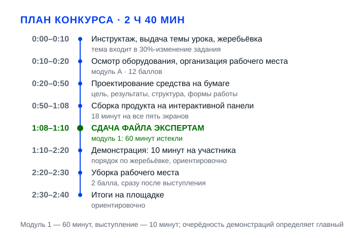
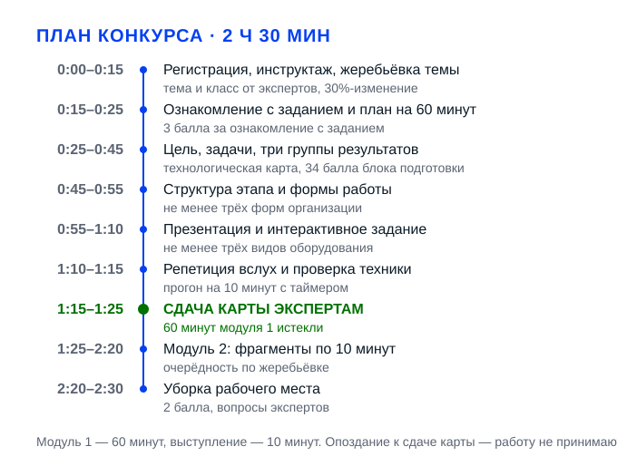
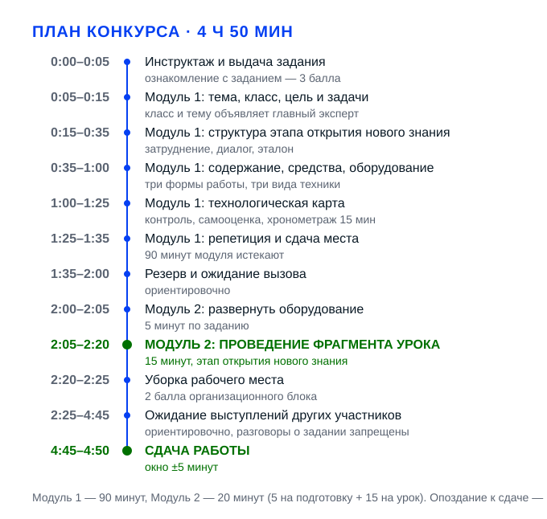

Учитель-предметник (английский язык) (Р)
Задания ниже — официальные файлы «Абилимпикс» (источник: abilympics-russia.ru), разложенные по категориям. Решения написаны по тексту задания, регламенту и критериям оценки; в них указано, что именно проверяет эксперт.
Школьник
14–16 лет, базовый уровень заданияВ официальном файле категории не разделены отдельными разделами — приводим задание целиком; различия по категориям смотрите в таблице модулей.
Пошаговое решение
Конкурсное задание категории «Школьники» состоит из двух модулей и занимает 2 часа 40 минут. В первом модуле за 60 минут вы разрабатываете дидактическое средство — интерактивную игру по теме урока английского языка, которую объявляет главный эксперт: тема входит в 30-процентное изменение задания. Во втором модуле вы демонстрируете готовый продукт на интерактивном оборудовании, на устное выступление одного участника отводится 10 минут. Оценивают три блока: организация рабочего места (12 баллов), подготовка и проведение (76 баллов) и индивидуальный стиль (12 баллов), всего 100. Главная ловушка в том, что 34 балла из 76 ставят ещё до показа — по тому, насколько грамотно спроектировано средство: цель, три группы планируемых результатов, не менее трёх форм работы и трёх видов интерактивного оборудования. Поэтому половина решения — работа с бумагой, а не с панелью.

Задача 1. Организовать рабочее место и принять заданиеМодуль А · 12 баллов
Модуль начинается не с продукта, а с площадки: пока панель загружается, вы успеваете осмотреть оборудование, разложить стол по зонам и прочитать задание. Двенадцать баллов организационного блока набираются здесь и снимаются здесь же, причём незаметно — за кабель под ногами, за непрочитанную тему, за сумку в проходе. На всю организацию уходит десять-двенадцать минут из шестидесяти, и это лучшая инвестиция времени на конкурсе: дальше каждая сэкономленная минута уходит в продукт, который оценивают отдельно и весомее.
Действие 1.1. Осмотреть площадку и проверить оборудование
Шаг 1.1.1
Включаем интерактивную панель кнопкой и ждём полной загрузки — это 30–60 секунд, всё это время на экране логотип производителя, и торопить технику бесполезно. Пока идёт загрузка, осматриваем комплект: стилусы в лотке, документ-камера на штативе, кабель HDMI или USB-C, планшеты учеников на зарядной станции. Затем трижды касаемся экрана — вверху слева, в центре, внизу справа — и проверяем, что курсор появляется точно под пальцем, а не со сдвигом в сантиметр. Отдельно пробуем перетащить любую иконку на пять сантиметров и вернуть её назад: именно это движение будет основным в ваших заданиях.
Четыре балла за применение интерактивного оборудования и три за целесообразное использование не менее двух видов дают за работающую технику, а не за список в конспекте. Сдвиг курсора означает сбитую калибровку: перетаскивать слова будет невозможно, и вы потеряете минуты на попытках попасть по объекту. Проверка занимает полторы минуты и снимает риск, который иначе обнаружится на защите, когда исправлять уже нечего.
Курсор встаёт под палец во всех трёх точках, панель открывает рабочий стол без сообщений об ошибках, пробный объект перетащился и вернулся на место. Кабель сигнала подключён плотно, документ-камера включается и даёт изображение на панель без полос и зелени. Если хотя бы один пункт не выполняется, зовите эксперта сразу.
Типичная ошибка — сразу начать рисовать, не проверив калибровку: на показе объекты прыгают мимо пальца, и задание на перетаскивание разваливается на глазах экспертов, забирая с собой баллы за интерактивность. Вторая — не проверить документ-камеру, которая потом оказывается без сигнала, и третий вид оборудования приходится объяснять словами.
Эксперт проходит по площадке в первые минуты и отмечает, включено ли оборудование и работает ли оно, а не просто стоит на столе. Отдельно он фиксирует, вызвал ли участник эксперта при неисправности, — это считается правильным поведением, а не жалобой.
Шаг 1.1.2
Открываем меню приложений и находим программу для интерактивной доски — на площадках чаще всего это Smart Notebook, Interwrite или фирменное ПО панели. Создаём новый документ и сразу сохраняем его на рабочий стол под именем «Фамилия_Тема_класс», например «Иванова_Present_Perfect_7», без пробелов и кириллицы в латинской части имени. Проверяем, что шаблоны и библиотека фигур доступны без сети: отключать интернет не нужно, достаточно убедиться, что программа открывает встроенную коллекцию мгновенно, без колесика загрузки.
Правила конкурса прямо запрещают интернет-ресурсы с готовыми методическими разработками, и это ограничение техническое, а не только этическое: продукт, держащийся на внешней ссылке, на площадке не откроется. Имя файла с фамилией нужно потому, что работу сдают экспертам, а безымянный «document1» в общей папке теряется среди десятка таких же. Три балла за ознакомление с заданием и три за соблюдение правил конкурса — ровно про это.
Документ создан и сохранён, в заголовке окна видно ваше имя файла, а на рабочем столе появился значок с тем же именем. Отключите Wi-Fi на минуту и пролистайте библиотеку фигур: если всё открывается, продукт автономен и на демонстрации сюрпризов не будет. Заодно проверьте, что на диске есть хотя бы гигабайт свободного места под экспорт.
Самая частая ошибка — не сохранить файл до начала работы: панель может перезагрузиться от скачка напряжения, и двадцать минут исчезнут безвозвратно. Вторая — вставить картинку по ссылке из интернета: на защите вместо неё пустая рамка, и эксперт отметит неработоспособность средства целиком, хотя пострадало одно задание.
Эксперт смотрит, открыл ли участник программу и сохранил ли файл, а не сидит перед выключенным экраном в ожидании старта. Имя файла он тоже видит и по нему потом находит работу в общей папке, поэтому безымянный документ рискует не попасть в оценку.
Шаг 1.1.3
Проверяем посадку и кабели: по схеме застройки стол 3000 на 1900 мм, проход между рабочими местами 1,5 метра, и он должен оставаться свободным на всём протяжении конкурса. Провод питания и сигнальный кабель отводим к дальнему краю стола и закрепляем, чтобы они не лежали под ногами и не натягивались при повороте панели. Розетку 220 В проверяем сразу: если удлинитель один на двоих, договариваемся с соседом теперь, а не в середине работы, когда оба одновременно включили технику.
Два балла за соблюдение санитарных норм и два за контроль над ними дают не за красоту, а за отсутствие рисков: кабель под ногами — это падение, а падение останавливает работу и разбирается с главным экспертом. Свободный проход в 1,5 метра нужен участникам на креслах-колясках, и рюкзак посреди него фиксируется как нарушение независимо от того, кто его поставил.
Пройдите от своего стола к соседнему, не задевая ничего ногами и не переступая через провода. Кабель не натянут, вилка сидит плотно до упора, рядом с техникой нет чашек, бутылок и бумажных стаканов. Проход между рядами вы можете пройти, не поворачиваясь боком.
Классика — поставить сумку на пол у стола и наступить на провод при первом повороте: панель гаснет, восстановление съедает пять минут из шестидесяти, а несохранённая работа может пропасть целиком. Вторая ошибка — принести телефон: мобильные на площадке запрещены прямым указанием задания, и это уже разговор с главным экспертом, а не минус балл.
Смотрит на проходы и на убранные личные вещи при первом обходе, ещё до старта модуля, и делает пометку в организационном блоке. Повторно к этому вопросу он возвращается после демонстрации, когда оценивает состояние места.
Действие 1.2. Разложить рабочее место по зонам
Шаг 1.2.1
Делим стол на три зоны и держим их до конца конкурса. Ближняя треть — рабочая: клавиатура, стилус, при необходимости ноутбук. Средняя — зона черновика: два листа А4, карандаш и ластик, потому что структуру удобнее придумывать на бумаге, чем сразу в программе. Дальняя — зона выдачи: место для флешки и распечатанного плана выступления, чтобы в финале не искать их по всему столу. Границы зон не обозначаем ничем лишним, они держатся на привычке: вещь, взятая из дальней зоны, возвращается туда сразу.
Зонирование экономит время, а оно здесь дороже всего: шестьдесят минут на модуль — жёсткая рамка, и каждый поиск ручки стоит минуты, которую потом не вернуть. Кроме того, организация рабочего места входит в блок на двенадцать баллов, где порядок и уборка считаются отдельно от санитарных норм и от соблюдения правил конкурса.
На столе одновременно видны три зоны, и ни одна вещь не лежит на границе. Стилус на месте, листы не смяты, флешка в зоне выдачи, а не в кармане. Проверить просто: закройте глаза, протяните руку и найдите стилус — если ищете дольше трёх секунд, зона рабочая только на словах.
Частая ошибка — разложить всё «поудобнее» вокруг клавиатуры: через полчаса стол превращается в кашу, и вы тратите время на поиск нужного файла вместо сборки. Вторая — держать черновики на коленях: их не видно, и на защите нечем подтвердить, что структура продумана, а не сложилась случайно.
Эксперт отмечает порядок и наличие рабочих материалов, а не только техники, и смотрит на стол дважды — в начале модуля и перед демонстрацией. Отдельно фиксируется, свободна ли зона выдачи, из которой участник берёт флешку при сдаче.
Шаг 1.2.2
Берём лист А4 и рисуем сетку из шести прямоугольников — по одному на каждый экран будущего продукта. В каждом пишем одно слово: мотивация, лексика, грамматика, пара, группа, рефлексия. Под сеткой отдельной строкой выписываем три вида интерактивного оборудования, которые будут задействованы, и три формы организации работы, каждую с привязкой к номеру экрана. Лист крепим на видном месте или кладём в зону черновика так, чтобы он был перед глазами всю сборку.
Тридцать четыре балла из семидесяти шести ставят за подготовку, и почти все они проверяются по структуре: есть ли три формы работы, три вида оборудования, дидактические средства на каждом этапе. На бумаге это видно за минуту и правится ластиком, в программе — за десять минут и переделкой готовых экранов, на которые уже потрачено время.
На листе шесть подписанных прямоугольников, три вида оборудования и три формы работы с номерами экранов. Если можете за тридцать секунд рассказать, что происходит на каждом экране, структура готова. Если сбиваетесь на четвёртом — вернитесь к листу, а не к программе.
Ошибка новичка — начать с рисования красивого титула: на него уходит треть времени, а структура остаётся недодуманной. К защите выясняется, что парная работа не предусмотрена, и три балла за чередование форм теряются вместе с возможностью их вернуть.
На защите эксперт сверяет сказанное с тем, что реально есть в продукте; бумажный план помогает не расходиться с фактом и отвечать на уточняющие вопросы без пауз.
Шаг 1.2.3
Делаем тест-экран: пишем строку текста кеглем 40 пунктов и вторую кеглем 24, добавляем прямоугольник с заливкой и тонкой обводкой, а рядом ставим картинку размером примерно в четверть экрана. Отходим от панели на три метра — это примерно последний ряд класса — и смотрим, что читается, а что превращается в серую полосу. Всё нечитаемое с трёх метров в продукте будет таким же нечитаемым, причём в худших условиях: в кабинете горит свет и панель бликует.
Интерактивное средство смотрят с расстояния, а не с сорока сантиметров, как монитор. Мелкий кегль — главная причина снижения оценки за объём и сложность материала: формально текст есть, фактически его не видно, и баллы за содержание и научность не спасают положения. Заодно тест-экран показывает, сколько объектов помещается на странице без тесноты.
С трёх метров вы различаете каждую букву в строке кеглем 40, а строка кеглем 24 читается хуже, но читается. Контраст не ниже чёрного на белом: серый на голубом, жёлтый на белом и любой текст поверх фотографии не годятся. Картинка в четверть экрана узнаётся без подписи.
Соблазн поставить кегль 18, чтобы влезло больше слов, — классика жанра. На панели с трёх метров это не текст, а рябь, и эксперт на защите скажет, что задание нечитаемо, сняв баллы за сложность и объём. Переделывать на показе нечем: модуль разработки уже закрыт.
Эксперт оценивает читаемость в момент показа, стоя в двух-трёх метрах от панели, и делает пометку, если приходится всматриваться или подходить ближе. Тот же кегль он видит и на скриншотах, если участник показывает их вместо живого продукта.
Действие 1.3. Прочитать задание и зафиксировать тему
Шаг 1.3.1
Читаем выданное задание дважды: первый раз целиком, чтобы понять рамку, второй — с карандашом, подчёркивая тему урока, класс и требуемый результат. Выписываем на лист три строки: тема, класс цифрой, что должно получиться на выходе — дидактическое средство на интерактивном оборудовании. Тему не переформулируем «под себя» и не сокращаем: её объявляет главный эксперт, и она входит в 30-процентное изменение задания, то есть может отличаться от того, что вы готовили дома.
Три балла за ознакомление с заданием дают за то, что участник прочитал текст, а не угадал его. Ошибка в теме — самая дорогая из возможных: продукт может быть сделан блестяще, но не по той теме, и тогда содержание оценивают как несоответствующее, теряя девять баллов за результаты и содержание сразу. Ни оформление, ни техника этого не компенсируют.
Тема записана дословно, класс — цифрой, результат — одной строкой. Сверьте запись с текстом задания слово в слово, особенно предлог и число: «Present Perfect» и «Present Perfect Continuous» — разные темы, а «7 класс» и «6 класс» — разный объём лексики. Прочитайте запись вслух: на слух расхождение слышно лучше, чем на глаз.
Участники часто читают только первую строку и достраивают остальное по опыту: «наверное, нужна презентация». В результате делают слайды вместо интерактивной игры и теряют четыре балла за оборудование, а заодно и три за соответствие содержания теме. Восстанавливать соответствие на защите бесполезно: продукт уже собран.
Эксперт проверяет соответствие продукта объявленной теме на защите и в самом файле, начиная с титульного экрана, и сверяет написание с заданием. Расхождение даже в одном слове он трактует как ошибку в теме.
Шаг 1.3.2
Подходим к эксперту и уточняем три вещи, если они не написаны прямо: какой класс имеется в виду, есть ли ограничение по объёму лексики и какое программное обеспечение считается допустимым. Вопросы задаём коротко и по одному, записывая ответ на том же листе, где тема, — так ответ не потеряется через двадцать минут. Если эксперт говорит «на ваше усмотрение», фиксируем своё решение письменно и дальше его придерживаемся, чтобы не менять рамку на середине сборки.
Три балла за соблюдение правил конкурса и три за ознакомление стоят на том, что участник работает в рамках, а не в своих представлениях о них. Уточнение занимает две минуты и снимает риск сделать продукт под пятый класс, когда в задании седьмой: объём и сложность проверяются отдельным критерием на три балла.
На листе появились три ответа или три собственных решения, зафиксированных письменно. Вы можете одной фразой объяснить, почему выбрали этот класс и этот объём. Если эксперт ответил «на ваше усмотрение», в записи стоит ваше решение, а не прочерк.
Стесняться и не спросить — типично для школьников и дорого стоит: потом выясняется, что класс другой, а переделывать некогда, и продукт оценивают как не соответствующий возрасту. Обратная ошибка — спорить с экспертом о формулировке темы: правила устанавливает не участник, и спор фиксируется в графе об общем впечатлении.
Эксперт отмечает, задавал ли участник вопросы по существу и насколько точно понял рамку задания, а также охотно ли он отвечает на вопросы до старта модуля.
Задача 2. Спроектировать дидактическое средство на бумагеМодуль Б · подготовка, 34 балла
Это самая дорогая часть работы: тридцать четыре балла ставят до того, как вы коснётесь панели, — по цели, задачам, трём группам результатов, формам работы и видам оборудования. Смысл в том, что средство оценивают как методический продукт, а не как набор красивых экранов: если цель не совпадает с темой, а результаты не подтверждаются заданиями, оформление уже ничего не спасёт. Здесь вы принимаете все решения на бумаге, чтобы дальше только собирать, и на это стоит отвести не меньше пятнадцати минут из шестидесяти.
Действие 2.1. Сформулировать цель, задачи и планируемые результаты
Шаг 2.1.1
Пишем цель одной фразой, начиная с «создать условия для» или «обеспечить», и привязываем к теме и классу: «создать условия для усвоения учащимися 7 класса лексики по теме Present Perfect в утвердительных предложениях». В формулировке должно быть три элемента: кто учится, что осваивает, на каком материале. Длиннее двух строк цель не делаем — её придётся произносить на защите, а длинную фразу трудно сказать без запинки и легко забыть середину.
Формулировка цели соответствует теме урока — три балла, и это первый пункт блока подготовки. Эксперт смотрит не на красоту фразы, а на совпадение с объявленной темой: если тема про Present Perfect, а цель про «развитие коммуникативной компетенции», балл снимается, потому что связь не доказана и проверить её нечем.
Прочитайте цель и тему рядом: из цели должно быть понятно, какая тема. Поменяйте тему на другую — цель перестанет подходить, значит, связь есть. Второй признак: в цели назван класс, и он совпадает с тем, что записан в задании.
Частая ошибка — цель-лозунг: «повысить интерес к английскому языку». Такая цель подходит к любому занятию и поэтому не соответствует ни одному, и три балла уходят. Вторая — цель из трёх придаточных, которую вы сами не можете повторить дважды одинаково.
Эксперт слушает формулировку цели в первые тридцать секунд выступления и сверяет её с темой на титульном экране. Если тема и цель произнесены по-разному, он задаёт уточняющий вопрос.
Шаг 2.1.2
Разбиваем цель на три задачи, каждая начинается с глагола действия: активизировать, научить употреблять, отработать, проверить. Первая задача обычно про материал — ввести и активизировать восемь-десять лексических единиц; вторая про умение — научить строить утвердительное предложение; третья про контроль — организовать самопроверку по образцу. Задачи не повторяют цель, а раскладывают её на шаги, и каждая должна быть выполнима за две-три минуты занятия.
Задачи соответствуют поставленной цели — три балла, и проверяются они сопоставлением: каждая задача должна быть частью цели, а вместе они должны её исчерпывать. Если задача говорит про грамматику, а цель только про лексику, эксперт фиксирует расхождение и балл не ставит, даже если задачи сами по себе хорошие.
Подчеркните в цели ключевые слова и найдите каждое в одной из задач. Если слово цели не встречается ни в одной задаче, задача сформулирована не про то. Три задачи — не догма: две тоже принимаются, если они полностью закрывают цель, а пять уже не успеть показать.
Ошибка — написать пять задач, дублирующих друг друга разными словами: «формировать», «развивать», «совершенствовать» одно и то же. Декомпозиции нет, и балл за задачи не ставится, а на защите нечего сказать про каждую отдельно.
Эксперт сопоставляет цель и задачи по конспекту, который участник показывает или проговаривает на защите, и слушает, может ли он назвать задачу своими словами.
Шаг 2.1.3
Выписываем планируемые результаты тремя группами, по одному-два в каждой. Личностные — про отношение: «проявляет интерес к культуре стран изучаемого языка, работая с реалиями темы». Метапредметные — про способ действия: «работает в паре по заданному алгоритму, сверяет результат с образцом». Предметные — про знание и умение: «употребляет восемь лексических единиц и строит утвердительное предложение в Present Perfect». Каждую группу подписываем своим заголовком, чтобы на защите не путать их местами.
Три отдельных критерия по три балла — личностные, метапредметные и предметные — дают девять баллов из семидесяти шести, и это самая крупная группа, которую можно потерять одним движением. Формулировки должны быть проверяемыми: результат, который нельзя увидеть на занятии, не засчитывается, сколько бы красивых слов в нём ни было.
Каждый результат начинается с глагола, который можно наблюдать: употребляет, строит, сверяет, работает. Если формулировка начинается с «формируется» или «развивается», перепишите её в наблюдаемое действие. Проверьте, что все три группы подписаны и ни одна не пропущена.
Типично перепутать метапредметные и предметные результаты: «умеет работать в паре» относят к предметным. Эксперт это замечает, и три балла за метапредметность не ставятся, хотя парная работа в продукте есть. Вторая ошибка — написать личностный результат про «патриотизм» на материале темы про путешествия.
Эксперт просит назвать по одному результату каждой группы и слушает, различает ли участник эти группы, а также задаёт вопрос «где это видно» по случайной формулировке.
Шаг 2.1.4
Кладём лист с целью, задачами и результатами рядом с сеткой экранов и проводим три стрелки: от цели к задачам, от задач к результатам, от результатов к конкретным экранам. Если для результата не находится экрана, он не будет достигнут — его надо убрать или добавить экран. Если экран не связан ни с одним результатом, экран лишний, и его лучше убрать: каждый лишний экран съедает время показа, которого всего десять минут.
Проектируемая деятельность обеспечивает достижение планируемых результатов — три балла, и это критерий про связность, а не про количество. Эксперт задаёт вопрос «где в вашем средстве достигается этот результат» и по ответу видит, проектировал участник или перечислял формулировки из учебника.
На листе три стрелки и ни одной висящей формулировки. На вопрос «где это происходит» вы показываете конкретный экран, а не говорите «вообще на протяжении всей игры». Проверьте обратное: у каждого экрана есть результат, ради которого он существует.
Оставить личностный результат «воспитание толерантности» без единого экрана — распространённая ошибка: звучит красиво, но не подтверждается, и три балла уходят. Обратная крайность — подписать под каждый экран по результату, включая технические, и получить список, в котором ничего не разобрать.
Смотрит на связку цель — задачи — результаты и задаёт один уточняющий вопрос по случайной формулировке, чтобы проверить, помнит ли участник свою же структуру.
Действие 2.2. Определить содержание под возраст
Шаг 2.2.1
Отбираем лексику строго по теме и строго по возрасту: восемь-двенадцать единиц, не больше. Каждую единицу записываем в колонку и рядом ставим картинку или короткое определение, которое можно нарисовать встроенными средствами программы. Слова, которые не понадобятся в заданиях, вычёркиваем сразу: список должен быть ровно таким, сколько вы успеете отработать за семь минут показа, а не таким, сколько есть в юните учебника.
Уровень сложности и объём материала соответствуют возрастным особенностям — три балла, и перегрузка здесь так же плоха, как недогрузка. Двенадцать слов за одно занятие — верхняя граница для закрепления; двадцать пять слов в продукте читаются как отсутствие методического отбора, и балл снижается вместе с оценкой содержания.
Посчитайте единицы: больше двенадцати — вычеркните самые редкие. Проверьте, что каждое оставшееся слово встречается хотя бы в одном задании, а не только в списке на втором экране. Слова, которые встречаются один раз и только в списке, из продукта убираются.
Соблазн взять весь словарь юнита: кажется, что «чем больше, тем серьёзнее». На защите это выглядит как отсутствие методического отбора, и три балла за объём не ставятся. Вторая ошибка — взять слова не по теме, потому что к ним нашлись красивые картинки.
Эксперт оценивает объём по числу слов, которые реально отрабатываются в показе, а не по заявленному списку, и сверяет их с темой задания. Перегруженный список он отмечает как отсутствие методического отбора.
Шаг 2.2.2
Выбираем одну грамматическую структуру и один речевой образец, вокруг которых строится вся игра. Структуру записываем формулой на черновике: have/has + V3, и рядом три примера с лексикой из отобранного списка. Образец для говорения даём готовой рамкой с пропуском: «I have already ...», чтобы ученик подставлял слово, а не придумывал конструкцию с нуля. Формулу держим на отдельном листе: она понадобится и в продукте, и в объяснении на защите.
Владение понятийным аппаратом и научность подбора материала — три балла: формула должна быть записана корректно, примеры — соответствовать ей. Если в игре встретится Present Perfect Continuous там, где заявлен Present Perfect, эксперт зафиксирует методическую ошибку, и балл снимется независимо от качества оформления.
Проверьте каждый пример по формуле: подлежащее, вспомогательный глагол, третья форма смыслового глагола. Таблицу неправильных глаголов держите на бумаге под рукой. Отдельно проверьте, что во всех примерах одна и та же структура, а не смесь двух времён.
Ошибка в третьей форме — «have went» вместо «have gone» — стоит не только балла: на защите это слышно сразу, и доверие к остальному материалу падает, эксперт начинает проверять каждую фразу. Вторая ошибка — забыть про отрицание и вопрос, если в задании они предусмотрены.
Эксперт слушает примеры, которые участник произносит при показе, и сверяет их с заявленной структурой, а также смотрит на формулу, если она выведена на экран.
Шаг 2.2.3
Прогоняем содержание через фильтр возраста: для седьмого класса допустимы связные тексты в три-четыре предложения, но не длиннее; для пятого — отдельные слова и картинки, без инструкций длиннее строки. Убираем всё, что требует чтения больше двух строк подряд, и заменяем картинкой или иконкой с подсказкой. Инструкции для ученика пишем в повелительном наклонении, по три-пять слов, и выносим их в одну строку под заголовком задания.
Тот же критерий проверяется по тому, сколько времени ученик тратит на понимание инструкции, а не на выполнение задания. Если инструкция длиннее задания, продукт работает против себя, и эксперт это озвучивает, снижая балл за соответствие возрастным особенностям.
Прочитайте каждую инструкцию и посчитайте слова: больше семи — сокращайте. Инструкция должна начинаться с глагола: Match, Choose, Put, Listen. Прочитайте её вслух так, как прочитал бы семиклассник: если сбиваетесь, значит, конструкция слишком сложная.
Написать инструкцию по-русски, потому что «так понятнее», — методическая ошибка: на занятии английского среда должна быть англоязычной, и это отмечают отдельно. Вторая ошибка — спрятать инструкцию мелким шрифтом в угол экрана, где её никто не найдёт.
Эксперт смотрит на язык интерфейса и длину инструкций, а также на то, говорит ли участник на показе по-английски хотя бы в командах. Русские подписи внутри продукта он фиксирует отдельной пометкой.
Действие 2.3. Построить структуру и закрепить формы работы
Шаг 2.3.1
Раскладываем игру на пять этапов и закрепляем за каждым один экран: мотивация, актуализация, открытие нового знания, первичное закрепление, рефлексия. На мотивации — картинка и короткий вопрос, на актуализации — два-три слова из прошлой темы, на открытии — новый материал с формулой, на закреплении — два интерактивных задания, на рефлексии — светофор из трёх цветов. Пять экранов — это ровно то, что успеваешь показать за семь минут, оставляя три на объяснение и вопросы.
Структура — то, что участник обязан обосновать на защите, и за неё дают баллы за вовлечение в постановку цели, вовлечение в организацию занятия и чередование форм. Пять этапов классической структуры эксперт узнаёт сразу и засчитывает как методически грамотную основу, а не как самодеятельность.
На каждом экране подписан этап, и этапы идут в нужном порядке. Поменяйте два экрана местами: если логика ломается, структура не формальная. Проверьте, что ни один этап не занимает больше двух минут показа.
Сделать пять экранов-слайдов с текстом без этапов — распространённый путь: продукт есть, структуры нет, и обосновать на защите нечего. Тогда теряются баллы за структуру и за проектируемую деятельность, то есть шесть баллов из семидесяти шести.
Эксперт просит назвать этапы и обосновать порядок; ответ «просто так удобнее» балла не приносит. Он также смотрит, совпадает ли названное с тем, что реально происходит на экранах.
Шаг 2.3.2
Рисуем навигацию: в правом нижнем углу каждой страницы три кнопки одинакового размера — меню, назад, далее, сторона кнопки не меньше двух сантиметров, чтобы по ней попадал палец. Кнопки копируем с одного экрана на все остальные, чтобы они стояли в одном и том же месте. На титульном добавляем кнопку «Начать», на последнем — «Ещё раз», и подписываем их по-английски: Start, Again, Back, Menu.
Навигация — часть обоснования структуры: эксперт смотрит, может ли ученик вернуться и переиграть, есть ли единая логика перемещения. Кнопка меньше двух сантиметров на панели не нажимается с первого раза, а на показе каждая промашка стоит секунд, которых всего десять минут.
Пройдите игру и посчитайте промахи: если хотя бы раз нажали мимо, увеличьте кнопки. Сравните два соседних экрана — кнопки должны стоять в одном месте и выглядеть одинаково. Проверьте, что кнопка «назад» не уводит за пределы игры с первого экрана.
Разные кнопки на разных экранах — частая ошибка: на третьем «далее» уезжает влево, и на показе вы теряетесь, а эксперты видят, что продукт не отлажен. Вторая — кнопка-текст мелким шрифтом, в которую невозможно попасть, и каждое нажатие превращается в попытку.
Смотрит, как участник перемещается по продукту: уверенно или ищет, куда нажать, и может ли ученик вернуться к пропущенному заданию. Промах по кнопке он отмечает как техническую недоработку продукта.
Шаг 2.3.3
Планируем три формы организации работы и закрепляем каждую за конкретным экраном: фронтальная — обсуждение картинки на мотивации, когда класс отвечает хором и по поднятой руке; парная — сопоставление слов и картинок на планшетах, по двое; групповая — сборка предложения из перемешанных слов, по четыре человека у панели. Индивидуальную форму добавляем на закреплении, когда каждый отмечает вариант в карточке, и подписываем это на листе структуры отдельной строкой.
Предусмотрено не менее трёх форм организации учебной деятельности — три балла, и ещё три за чередование форм на самом показе. Формы должны быть видны в сценарии: если на всех экранах только фронтальная работа, эксперт засчитает одну форму из трёх, сколько бы раз слово «парная» ни встречалось в конспекте.
Рядом с каждым экраном в структуре подписана форма работы. Если форма встречается только в подписи, но не в действии, она не засчитывается. Проверьте, что переход между формами занимает не больше тридцати секунд: иначе на показе вы потратите на пересадку половину времени.
Написать «парная работа» на экране, где задание выполняет один ученик у доски, — типичная имитация: эксперт видит разницу между надписью и организацией и балл не ставит. Вторая ошибка — запланировать четыре формы и не успеть ни одну.
Эксперт следит на показе, меняется ли форма работы и как участник переключает класс между ними, и считает количество реально использованных форм. Заявленные в конспекте, но не показанные формы не засчитываются.
Шаг 2.3.4
Закрепляем за сценарием три вида интерактивного оборудования и подписываем, что именно делается на каждом: интерактивная панель — показ и перетаскивание объектов, документ-камера — вывод на экран бумажной карточки, планшеты учеников или система голосования — индивидуальные ответы с мгновенным результатом. Если планшетов нет, третьим видом может быть интерактивный стол или маркерная доска, но оборудование должно реально стоять на площадке: проверьте это до старта, а не во время показа.
Применение интерактивного оборудования не менее трёх видов — четыре балла, самая высокая ставка среди подкритериев подготовки. На показе отдельно проверяется целесообразное использование не менее двух видов — ещё три балла. Оборудование, названное, но не задействованное, не считается, сколько бы раз оно ни упоминалось.
Перечислите три вида и для каждого покажите действие в сценарии. Если для одного не находится действия, замените его на то, что реально есть в кабинете. Проверьте, что каждый вид задействован в первые пять минут показа, иначе до третьего дело не дойдёт.
Указать три вида «на всякий случай», а на показе работать только с панелью, — прямое расхождение с критерием, и четыре балла превращаются в ноль. Вторая ошибка — запланировать систему голосования, которой на площадке нет: время уйдёт на поиски.
Эксперт фиксирует, какое оборудование реально включено и использовано в ходе демонстрации, а не какое названо, и отмечает уместность каждого. Третий вид он ждёт увидеть в первые пять минут показа.
Действие 2.4. Подобрать материалы, средства и формы контроля
Шаг 2.4.1
Подбираем материалы из того, что доступно без интернета: встроенная библиотека фигур и картинок программы, собственные рисунки, заранее заготовленные фотографии на флешке. Каждую картинку проверяем на однозначность: изображение должно читаться без подписи, иначе ученик не поймёт, какое слово имеется в виду. Аудио, если оно нужно, записываем сами в программе или берём из встроенной коллекции, а не подгружаем из сети.
Использование интернет-ресурсов с готовыми методическими разработками запрещено, и это же правило касается картинок по ссылке: на площадке ссылка не откроется. Научность подбора фактического и иллюстративного материала — три балла, и картинка не по содержанию читается как небрежность, даже если всё остальное сделано хорошо.
Покажите каждую картинку соседу и спросите, что изображено: если ответ расходится с вашим словом, картинку меняем. Отключите Wi-Fi и пролистайте продукт — ни один объект не должен подгружаться из сети. Проверьте, что все картинки одного стиля, иначе экран выглядит собранным из разных источников.
Вставить картинки из поисковика, скопировав адрес, — самая частая техническая ошибка: на защите вместо картинки пустая рамка, и два-три задания рассыпаются. Вторая — использовать картинку с подписью на русском, которая сразу выдаёт заимствование.
Эксперт смотрит на качество и однозначность иллюстраций, на отсутствие внешних подгрузок и может спросить, откуда взято изображение. Пустая рамка вместо картинки фиксируется как технический брак.
Шаг 2.4.2
Выписываем дидактические средства для каждого этапа: на мотивации — картинка-загадка на панели, на актуализации — карточки со словами, на открытии — схема-формула, на закреплении — раздаточные карточки и стилус, на рефлексии — три цветных стикера. Средство — это то, что можно взять в руки или показать, а не «презентация вообще». Напротив каждого этапа в структуре ставим название средства и коротко пишем, что с ним делают.
Указаны дидактические средства на каждом этапе — три балла, и проверяется наличие средства на всех пяти этапах, а не на двух. Пропущенный этап — потеря балла, даже если остальные закрыты идеально, потому что критерий считается по худшему этапу. Именно так его и считает эксперт.
В структуре пять этапов и пять средств, по одному напротив каждого. Если напротив этапа стоит прочерк, этап держится только на словах. Проверьте, что каждое средство можно показать одной рукой за пять секунд: если для него нужна отдельная подготовка, на показе вы не успеете.
Свести все средства к одному — «интерактивная доска», — типичное упрощение: тогда на четырёх этапах средства нет, и балл снимается. Вторая ошибка — запланировать средство, которого нет в кабинете, например раздаточные карточки, которые некому напечатать.
Эксперт сверяет этапы и средства по конспекту и по тому, что участник реально берёт в руки на показе. Средство, названное на этапе и ни разу не показанное, он отмечает как незакрытый критерий.
Шаг 2.4.3
Планируем контроль и самооценку отдельно, потому что это разные критерии. Контроль: правильные ответы подсвечиваются зелёным, неправильные — красным, в конце экрана счётчик выполненных заданий. Самооценка: на последнем экране светофор из трёх кругов, где ученик сам выбирает цвет по тому, насколько уверенно справился, и объясняет выбор одним предложением. Взаимооценку закладываем в парное задание: партнёр сверяет по образцу и говорит, что получилось.
Запланированы формы контроля и оценки — три балла, и запланированы формы самоконтроля и самооценки — ещё три. На показе проверяется организация деятельности детей по самооценке и взаимооценке — ещё три балла, поэтому светофор должен быть не нарисован, а отработан в сценарии, с вопросом классу.
Найдите в продукте место, где ученик видит результат своей работы, и место, где он оценивает себя сам. Это должны быть два разных действия. Проверьте, что обратная связь срабатывает на ошибку, а не только на правильный ответ: иначе контроль формальный.
Ограничиться автоматической проверкой — половина баллов: контроль есть, самооценки нет. Светофор без обсуждения тоже не засчитывается: цвет нажат, а объяснения нет, и взаимооценка остаётся заявленной, но не показанной.
Эксперт смотрит, как устроена обратная связь, и спрашивает ли участник учеников об их собственной оценке, а также предусмотрено ли оценивание со стороны учителя.
Задача 3. Собрать продукт на интерактивном оборудованииМодуль Б · подготовка, те же 34 балла
Сборка занимает основную часть шестидесяти минут, и её задача — превратить бумажную структуру в работающий продукт на панели. Ошибки этого этапа технические: объекты, нарисованные на фоне, обратная связь, которая не работает, кнопки, в которые не попасть пальцем. Каждая такая мелочь на защите превращается в потерянные баллы за интерактивность и оборудование, поэтому проверяем не «выглядит ли красиво», а «работает ли».
Действие 3.1. Сделать каркас, титульный экран и навигацию
Шаг 3.1.1
Создаём страницу и первым делом задаём размер холста 1920 на 1080 точек, соотношение 16 к 9 — именно такое у большинства панелей. Ставим направляющие на 60 точек от каждого края: это безопасное поле, за которое не должен заходить текст. Затем делаем титульный экран: тема урока дословно, класс цифрой, фамилия и имя, кегль темы не меньше 54 пунктов, остальное — 32, всё по центру, без наклонов и теней.
Неверный размер холста — мелочь, которая портит впечатление целиком: продукт с чёрными полосами по краям выглядит как чужая презентация, вставленная в программу. При соотношении 4 к 3 часть объектов уезжает за границу и на панели не видна, а значит, задания становятся невыполнимыми. Титул нужен ещё и потому, что по нему эксперт сверяет соответствие теме — три балла.
В строке состояния видно 1920×1080. Пролистайте все экраны: ни один объект не выходит за направляющие, по краям нет полос. Проверьте нижнюю строку — она обрезается чаще всего. Отойдите на три метра: тема читается целиком, класс и фамилия различимы.
Оставить размер по умолчанию и рисовать «как влезет» — к третьему экрану объекты съезжают, а исправлять их на всех страницах уже нет времени. Вторая ошибка — написать тему сокращённо, «Present Perfect» вместо полной формулировки из задания: эксперт сверяет дословно и снимает балл за соответствие.
Эксперт записывает тему с титульного экрана в протокол в первые секунды показа и сверяет её с заданием. Технические дефекты вроде полос он тоже отмечает сразу.
Шаг 3.1.2
Задаём единый стиль и держим его на всех экранах: два цвета плюс белый фон, один шрифт без засечек, заголовки одного размера, объекты выровнены по сетке. Цветами кодируем смысл, а не украшаем: синий — задание, зелёный — правильный ответ, красный — ошибка. Каждый новый экран начинаем с копии предыдущего, чтобы стиль не расползался и кнопки оставались на своих местах.
Оригинальность и общее впечатление от работы входят в блок индивидуального стиля на двенадцать баллов, и целостность оформления — его основа. Разнобой в шрифтах и цветах читается как отсутствие замысла, а цвет, использованный без смысла, мешает ученику различать обратную связь и путает его на показе.
Положите рядом два экрана: заголовки на одной высоте, шрифт один, цвета те же, отступы одинаковые. Если различие видно сразу, стиль не выдержан. Проверьте также, что нигде не осталось текста по умолчанию вроде «Click to add title».
Каждый экран оформлять «по-своему» — частая ошибка при работе в спешке: продукт выглядит собранным из разных источников, и баллы за оригинальность не ставятся. Вторая — увлечься анимацией: вращающиеся объекты отвлекают от задания и забирают время.
Эксперт оценивает целостность оформления и осмысленность цветовых решений, просматривая все экраны подряд во время показа. Разнобой в шрифтах он отмечает в графе об оригинальности и общем впечатлении.
Шаг 3.1.3
Собираем меню навигации на отдельном слое, чтобы оно не мешало работе с объектами: пять кнопок с названиями этапов, каждая ведёт на свой экран, плюс кнопка возврата к меню. Кнопки подписываем по-английски коротко: Warm-up, Words, Grammar, Practice, Results. Слой с меню блокируем от случайного перетаскивания, иначе на показе вы сдвинете его вместе с заданием, и вернуть на место будет нечем.
Меню — инструмент вовлечения учеников в организацию занятия: через него класс видит последовательность действий, а это отдельный критерий на три балла. Блокировка слоя — техническая защита: на панели объекты легко сдвинуть касанием, и незаблокированное меню уезжает в сторону уже на втором экране показа.
Проверьте каждую кнопку: ведёт туда, куда подписана. Попробуйте сдвинуть меню пальцем — оно не двигается. Пройдите по кругу все пять этапов и вернитесь в меню: ни одного тупика, из которого нет выхода.
Разместить меню поверх задания — типичная ошибка: кнопки перекрывают объекты, и перетаскивать слова становится невозможно, а на показе это выглядит как неумение работать с собственным продуктом. Вторая — кнопки без подписей: эксперт не понимает логику перемещения.
Смотрит, свободно ли участник перемещается между этапами и не мешает ли навигация выполнению заданий, и может попросить вернуться на два экрана назад.
Действие 3.2. Наполнить экраны заданиями
Шаг 3.2.1
На первом экране ставим одну крупную картинку и один вопрос к ней, ответ на который требует новой лексики: например, фотографию чемодана и вопрос «What has just happened?». Рядом оставляем пустую рамку, куда на показе вы впишете ответы учеников стилусом. На втором экране делаем сопоставление: слева шесть слов, справа шесть картинок в перемешанном порядке, каждое слово перетаскивается к своей картинке, внизу кнопка проверки.
Вовлечение учащихся в постановку цели — три балла, и мотивационный экран единственное место, где это делается: если сразу дать готовую цель, эксперт зафиксирует, что цель поставил учитель, а не класс. Сопоставление — самая быстрая форма первичного закрепления лексики, и оно же даёт материал для критерия о большинстве учащихся, демонстрирующих усвоение знаний.
На первом экране есть картинка, вопрос и место для ответов, на втором — шесть пар и работающая кнопка проверки. Перетащите каждое слово: оно цепляется и встаёт на место. Нажмите проверку с одной ошибкой — неправильная пара подсвечивается, правильные остаются зелёными.
Написать на первом экране «Сегодня мы выучим Present Perfect» — самая частая ошибка: цель объявлена, а не выведена, и три балла уходят. Вторая — сделать слова частью фонового рисунка: перетаскивать нечего, задание превращается в устный опрос, и интерактивность не засчитывается.
Эксперт слушает, как участник задаёт вопрос и подводит класс к цели, и смотрит, работает ли задание как интерактивное. Готовую цель, объявленную с первого экрана, он засчитывает как поставленную учителем, а не классом.
Шаг 3.2.2
На третьем экране собираем предложение из перемешанных слов: даём четыре-пять слов вразброс и пустую строку, куда их выкладывают по порядку. Рядом ставим кнопку-подсказку, открывающую формулу have/has + V3 на пять секунд. После сборки — проверка: если порядок неверный, слова возвращаются на исходные места, а не остаются в строке. Внизу добавляем строку для перевода, чтобы задание работало и на понимание смысла.
Задание на конструирование проверяет умение применять усвоенное знание, а это отдельный критерий на три балла. Возврат слов при ошибке нужен методически: ученик должен попробовать заново, а не увидеть неверный вариант закреплённым на экране, иначе задание закрепляет ошибку вместо правильного образца.
Соберите предложение верно и неверно: в первом случае появляется зелёная отметка, во втором слова уезжают обратно. Подсказка открывается и закрывается сама через пять секунд. Проверьте, что все слова из строки использованы и лишних не осталось.
Оставить неверную сборку на экране без реакции — ошибка, которая ломает смысл задания целиком. Вторая — положить в набор слово, которого нет в формуле, например наречие времени в середине: ученик соберёт формально верно, а прозвучит неестественно.
Эксперт оценивает, предусмотрена ли обратная связь и работает ли она по существу, а не только анимацией, и слушает, как участник комментирует сборку. Отсутствие реакции на ошибку он фиксирует как потерю критерия.
Шаг 3.2.3
На четвёртом экране — парное задание: диалог из четырёх реплик с пропусками, пропуски закрыты шторками, которые сдвигаются стилусом. Пара получает карточку с теми же репликами на бумаге через документ-камеру и сверяет свою версию с той, что открывается на панели. Внизу — вопрос для взаимной проверки: «Did your partner use the right form?», и место, куда пара ставит плюс или минус.
Парная работа и взаимопроверка закрывают сразу два критерия: чередование форм работы и организация деятельности детей по самооценке и взаимооценке, по три балла каждый. Документ-камера здесь не украшение, а третий вид интерактивного оборудования, за который дают четыре балла в подготовке и три в проведении.
Шторки сдвигаются и открывают текст полностью, карточка, выведенная камерой, читается и совпадает с текстом на экране, вопрос для взаимопроверки виден без прокрутки. Проверьте, что шторка не закрывает кнопку навигации и её можно вернуть на место.
Сделать шторки неподвижными или закрыть ими половину задания — типичная техническая ошибка: показ останавливается на попытке сдвинуть объект, и вы теряете минуту из десяти. Вторая — вывести под камеру карточку с другим текстом: сверка не состоится, и взаимооценка рассыпается.
Эксперт смотрит, задействована ли документ-камера по делу и есть ли реальная взаимопроверка в парах, а не только надпись про неё. Вопрос для сверки он ищет на экране сам, не полагаясь на объяснение.
Действие 3.3. Настроить интерактив и отладить механику
Шаг 3.3.1
Проходим по каждому экрану и проверяем природу объектов: то, что должно двигаться, должно быть отдельным объектом со своей анимацией, а не частью картинки. Открываем список объектов страницы и считаем: если в задании на сопоставление объектов меньше, чем пар, часть нарисована на фоне. Такие элементы переводим в отдельные фигуры или перерисовываем. Затем настраиваем обратную связь: правильное положение, подсветка, тихий звук не длиннее половины секунды.
Применение интерактивного оборудования оценивается по факту интерактивности: продукт, в котором ничего нельзя перетащить, — это презентация, и четыре балла не ставятся. Список объектов — единственный быстрый способ увидеть разницу между нарисованным и действующим. Громкий звук на площадке слышно всем и мешает соседям, а это уже нарушение правил конкурса.
В списке объектов каждой страницы столько же элементов, сколько действий предполагает задание, и каждый выделяется отдельным касанием. Сделайте намеренную ошибку в каждом задании: реакция есть, она различима и не мешает следующему действию, звук не перекрывает речь.
Сгруппировать всё в один объект «чтобы не сдвинулось» — ошибка, которая убивает интерактивность: продукт становится картинкой, а защита — рассказом о картинке. Вторая — включить звук на всю громкость панели и получить замечание за шум.
Эксперт проверяет интерактивность касанием на показе, а не по описанию, и отмечает уместность звуковых и анимационных эффектов. Продукт, в котором объекты не двигаются, он оценивает как презентацию.
Шаг 3.3.2
Проверяем размер зон захвата: подходим к панели и пробуем перетащить каждый объект пальцем, а не стилусом. Если объект меньше двух сантиметров в стороне, увеличиваем его или расширяем область касания в настройках. Отдельно проверяем края экрана: у некоторых панелей чувствительность там ниже, и объекты у границы не берутся. Кнопки навигации проверяем тем же способом, что и задания.
На показе вы работаете у панели стоя, и промах по мелкому объекту стоит секунд, которых всего десять минут. Кроме того, часть учеников будет работать у доски сама, и если объект не берётся детской рукой, задание невыполнимо — а это уже про доступность и эмоциональный комфорт, три балла.
Каждый объект перетаскивается с первого касания пальцем, объекты у краёв проверены отдельно. Пройдите задание на скорость: если на перетаскивание шести слов уходит больше сорока секунд, объекты слишком мелкие или стоят слишком плотно.
Настроить всё стилусом и не проверить пальцем — классика: на показе стилус оказывается не в той руке, и задание буксусует, а время уходит. Вторая ошибка — поставить объекты вплотную друг к другу, чтобы влезло больше: при перетаскивании они задевают соседей.
Смотрит на уверенность движений участника у панели: попадает ли он по объектам с первого раза и не приходится ли повторять жест. Промахи он связывает с размером объектов, а не со случайностью.
Шаг 3.3.3
Делаем кнопку сброса на каждом задании: одно касание возвращает все объекты на исходные позиции, чтобы задание можно было выполнить повторно при следующем ученике. Кнопку ставим в углу задания, подписываем Reset и делаем того же цвета, что и остальные служебные кнопки. После настройки проходим все экраны по порядку и сбрасываем каждый, а затем сохраняем файл ещё раз — уже с настройками.
Возможность переиграть — часть обоснования структуры и признак продуманного продукта: на показе вы можете показать одно задание дважды, с разными учениками, и это выглядит уверенно. Без сброса второе выполнение невозможно, и эксперт видит, что средство рассчитано на один проход, а не на класс.
После сброса все объекты на местах, счётчики обнулены, подсветка погашена, повторное выполнение работает так же, как первое. Пролистайте продукт от титула до рефлексии без остановок: ни одного зависания и ни одного потерянного объекта.
Забыть про сброс и на показе пытаться вручную растащить объекты обратно — потеря минуты и впечатление недоделанности. Вторая — не сохранить файл после настройки: на демонстрации открывается версия без обратной связи, и всё выглядит как макет.
Эксперт может попросить показать задание повторно — готовность к этому видна сразу, и он отмечает, продуман ли продукт на повторное использование. Отсутствие сброса он фиксирует как недоработку.
Задача 4. Проверить продукт и подготовить резервМодуль Б · подготовка и проведение
Проверка — отдельный этап, на который нужно оставить хотя бы восемь минут: прогон в роли ученика, просмотр на самой панели, резервная копия и план выступления. Здесь выясняется реальная длительность показа и находятся вещи, которые на ноутбуке не видны. Участники, начинающие проверку за две минуты до конца модуля, почти всегда теряют баллы на том, что исправляется за минуту.
Действие 4.1. Прогнать продукт в роли ученика
Шаг 4.1.1
Проходим продукт целиком в роли ученика: открываем титул, нажимаем «Начать» и выполняем каждое задание так, как его выполнит семиклассник, — медленно, с ошибками, возвращаясь назад. Засекаем время на секундомере: семь минут — норма для показа, восемь — предел, после которого не останется времени на обоснование. Записываем на лист, где застряли и сколько секунд потратили на каждое задание.
Содержание и объём проверяются на показе по тому, успевает ли участник пройти продукт и остаётся ли время на обоснование. Прогон в роли ученика — единственный способ узнать реальную длительность, потому что в роли автора вы проскакиваете экраны на автомате и время получается вдвое короче настоящего.
Секундомер показал не больше восьми минут на полный проход с ошибками. На листе отмечены два-три места, где пришлось думать дольше пяти секунд, и по каждому решено, что менять: сократить, упростить или оставить.
Проверять продукт только глазами, листая экраны, — типичная ошибка: на показе выясняется, что задание требует двух минут объяснения, и десять минут кончаются на третьем экране. Вторая — не засекать время вовсе и надеяться на «примерно уложусь».
Эксперт оценивает темп показа и то, доводит ли участник продукт до конца или обрывает на середине. Если рефлексия не показана, он делает пометку, даже когда в продукте она есть.
Шаг 4.1.2
Открываем продукт именно на панели, а не на ноутбуке, и смотрим три вещи: не съехали ли шрифты, не поблёкли ли цвета, не обрезались ли объекты по краям. На панели картинка часто светлее и контрастнее, чем на мониторе, поэтому бледно-серый текст может исчезнуть совсем. Заодно проверяем, что программа открывает файл в полноэкранном режиме, без панелей инструментов и всплывающих подсказок.
Проверка на целевом устройстве обязательна, потому что оценка ставится за то, что видят эксперты на панели. Цвет, различимый на мониторе, на панели при боковом свете теряет контраст, и текст, который вы считали читаемым, оказывается нечитаемым — а за это снимают баллы за сложность и объём.
На панели все объекты в пределах экрана, шрифты те же, контраст достаточный при включённом свете в кабинете. Полноэкранный режим включается сразу. Пролистайте продукт стоя, как будете стоять на защите: если приходится наклоняться, чтобы прочитать, — увеличивайте кегль.
Проверить только на ноутбуке и обнаружить на защите, что заголовок уехал за верхний край, — очень частая история. Исправлять в этот момент нечем: модуль разработки уже закончился, и остаётся только извиняться, теряя баллы за общее впечатление.
Эксперт видит результат на панели и оценивает именно его, а не то, как продукт выглядел на вашем экране, и скидку на технические причины не делает. Обрезанный край он фиксирует сразу.
Действие 4.2. Сделать резервную копию и план выступления
Шаг 4.2.1
Сохраняем продукт в двух форматах: рабочий файл программы и экспорт в PDF или набор изображений, если программа это позволяет. Имя второго файла делаем таким же, как первого, и кладём оба в одну папку с фамилией. Отдельно копируем на флешку и проверяем, что копия открывается, а не только копируется. Если продукт небольшой, оставляем и копию на рабочем столе — её проще всего найти при сдаче.
Сдача готового продукта на электронном носителе — прямое требование задания, и файл, который не открывается у эксперта, приравнивается к несданной работе. Два формата страхуют от разницы версий программы: на другом компьютере рабочий файл может не открыться, а PDF откроется всегда.
Оба файла открываются с флешки на другом устройстве, размер не нулевой, папка подписана фамилией. PDF совпадает с рабочим файлом по содержанию: те же пять экранов, та же тема на титуле, без пустых страниц.
Сдать один файл в формате программы — риск, который снимается за минуту: если версия не совпадёт, работа не будет оценена вообще, и никакие баллы за структуру не спасут. Вторая ошибка — экспортировать PDF до финальных правок и сдать устаревшую версию.
Эксперт проверяет, открывается ли присланный файл, и фиксирует формат в протоколе, поэтому формат лучше назвать вслух при сдаче. Нулевой размер файла он отмечает как отсутствие работы.
Шаг 4.2.2
Пишем план выступления на одну страницу, пятью блоками: цель и задачи, обоснование структуры, показ двух ключевых экранов, результаты и самооценка, завершение. В каждом блоке — две-три фразы, которые вы скажете дословно, и одно действие у панели. Репетируем вслух с секундомером, укладываясь в восемь минут, чтобы остались две на вопросы экспертов. План пишем от руки: так он запоминается.
Грамотность речи и эмоциональность — три и два балла, и они проявляются именно в подготовленной, но не заученной речи. План на бумаге нужен потому, что десять минут пролетают быстро, а самая частая потеря — не рассказать про результаты и самооценку, то есть потерять шесть баллов за критерии, которые уже выполнены в продукте.
Репетиция уложилась в восемь минут, все пять блоков прозвучали, ни один не пришлось сокращать на ходу. Вы можете назвать по памяти, что скажете после показа второго экрана, и не смотрите в лист больше двух раз.
Импровизировать на защите — обычно означает потратить шесть минут на рассказ о том, как делался продукт, и не успеть показать сам продукт. Вторая ошибка — заучить текст наизусть и рассыпаться на первом же вопросе эксперта.
Эксперт оценивает структуру выступления и следит, успел ли участник дойти до результатов, а по интонации слышит, говорит он своими словами или читает.
Задача 5. Продемонстрировать средство на интерактивном оборудованииМодуль Б, проведение · 42 балла; Модуль В · 12 баллов
Демонстрация длится десять минут и стоит пятьдесят четыре балла: сорок два за проведение и двенадцать за индивидуальный стиль. Здесь важно не столько показать продукт, сколько провести фрагмент занятия: задать вопрос классу, зафиксировать затруднение, сменить форму работы, вернуться к цели. Продукт к этому моменту готов, и всё, что происходит в эти десять минут, зависит только от речи и организации.
Действие 5.1. Открыть выступление и обосновать структуру
Шаг 5.1.1
Начинаем с приветствия и трёх коротких фраз: «Good morning. My name is ... The topic of my lesson is ... for the 7th form.» Дальше сразу называем цель одной фразой, не пересказывая задание. Стоим у панели, а не за столом, лицом к экспертам, стилус в руке — это читается как готовность работать. Первые секунды не тратим на поиск файла: он открыт заранее, титульный экран на месте.
Грамотность речи — три балла, и первые тридцать секунд задают оценку всей речи: если начало сбивчивое, дальше эксперт слушает придирчивее. Приветствие на английском сразу показывает, что среда занятия англоязычная, а это часть соответствия содержания предмету, за которое тоже дают баллы.
Первые три фразы произнесены без запинки и без бумажки, тема и класс названы так же, как на титульном экране. Титул держится на экране не меньше пяти секунд — эксперты записывают тему в протокол. Голос слышно в дальнем конце кабинета.
Начать с извинений и объяснений — «я волнусь, у меня не всё получилось» — самая частая потеря первого впечатления: два балла за общее впечатление уходят в первые секунды, и вернуть их потом нечем. Вторая ошибка — пролистать титул за секунду, и эксперты не успевают зафиксировать тему.
Эксперт фиксирует грамотность речи и уверенность начала, оценивая по первым фразам, и записывает тему с титульного экрана именно в эти секунды. Извинения в начале он отмечает отдельно.
Шаг 5.1.2
Обосновываем структуру тремя фразами: почему пять этапов, почему такой порядок, почему задания идут от узнавания к применению. Называем, какая форма работы стоит за каждым этапом, и увязываем это с возрастом: «For the 7th form pair work comes after the whole-class discussion, because they need a model first». Говорим про свою структуру, а не про теорию урока вообще, и держим лист со структурой в руке только как подсказку.
Обоснование структуры — обязательный пункт задания на демонстрацию, и оно закрывает критерии про проектируемую деятельность и вовлечение учеников в организацию занятия, по три балла. Эксперт отличает обоснование от пересказа: пересказ говорит «что», обоснование — «почему именно так».
В вашем объяснении на каждый этап приходится причина, а не название. Если убрать слово «потому что», обоснование рассыпается — значит, его пока нет. Уложились в полторы минуты и не потеряли ни один этап.
Перечислить этапы списком без причин — типичный ответ, который эксперт отмечает как формальный, и баллы за структуру не ставятся. Вторая ошибка — уйти в теорию деятельностного подхода и потратить на неё четыре минуты из десяти.
Эксперт слушает именно аргументацию и может задать вопрос «почему не наоборот», чтобы проверить, понимает ли участник свою структуру. Пересказ этапов без причин он засчитывает как формальный ответ.
Шаг 5.1.3
Называем три вида интерактивного оборудования и по одному действию для каждого: панель — для перетаскивания слов, документ-камера — для вывода карточки, планшеты — для индивидуальных ответов. Говорим, почему выбран именно этот набор: панель даёт общую работу класса, камера позволяет показать бумажное задание всем сразу, планшеты дают мгновенную обратную связь. Затем сразу переходим к показу, не задерживаясь на перечислении.
Применение не менее трёх видов оборудования — четыре балла в подготовке и три в проведении, и названное должно совпасть с использованным. Осознанный выбор оборудования отличает методически грамотное средство от набора эффектов, и эксперт слушает именно объяснение выбора, а не список.
Три вида названы, и для каждого есть действие, которое вы выполните в следующие пять минут. Ни один вид не назван «для полноты списка». Оборудование включено и готово: камера наведена, планшеты разложены, панель в рабочем режиме.
Назвать оборудование, которое не будет задействовано, — прямое расхождение: эксперт отмечает его в протоколе, и четыре балла не ставятся. Вторая ошибка — потратить на перечисление две минуты и сократить показ продукта.
Эксперт сверяет список названного оборудования с тем, что реально включилось и использовалось в ходе демонстрации. Названное, но не задействованное он отмечает в протоколе отдельной строкой.
Действие 5.2. Показать продукт в работе
Шаг 5.2.1
Открываем продукт на панели и оставляем титульный экран на пять-семь секунд, чтобы эксперты успели прочитать тему. Затем нажимаем «Начать» и переходим к мотивационному экрану. Все действия выполняем стилусом или пальцем у самой панели, комментируя по-английски: «Now we are going to look at the picture». Не поворачиваемся спиной к классу и не уходим к ноутбуку.
Пауза на титуле — практическая необходимость: эксперты заполняют протокол и должны успеть записать тему, за соответствие которой дают баллы. Работа у панели, а не с ноутбука, показывает владение интерактивным оборудованием, а это отдельная группа баллов, и её нельзя закрыть рассказом.
Титул продержался не меньше пяти секунд, тема прочитана, переход на второй экран выполнен касанием у панели. Вы стоите сбоку от экрана, не закрывая его собой, и говорите достаточно громко, чтобы вас слышали в последнем ряду.
Пролистать титул за секунду и работать с ноутбука, повернувшись спиной к классу, — типичная ошибка: эксперты не успевают зафиксировать тему, а работа с оборудованием не видна. Вторая — встать прямо перед панелью и закрыть половину экрана.
Эксперт отмечает, работает ли участник у панели и видно ли ему самому, что происходит на экране, а также фиксирует тему в протокол именно в эти секунды.
Шаг 5.2.2
Показываем два ключевых экрана — сопоставление слов и сборку предложения — в роли учителя, который ведёт класс: задаём вопрос, ждём ответа, вызываем «ученика» и комментируем его действие. Одну ошибку разбираем вслух: «Look, this word goes here, because we need the third form». Не проходим задание молча и не выполняем его за учеников, даже если времени мало.
Большинство учащихся демонстрируют усвоение новых знаний, правильно отвечая на вопросы учителя, — три балла, и демонстрация должна показывать, как вы получаете эти ответы. Фиксация затруднений в учебном действии — ещё три балла, поэтому ошибку нужно не обойти, а заметить и разобрать.
На показе прозвучали минимум два вопроса классу и один разбор ошибки. Задания выполнены не вами единолично, а с обращением к «ученикам». Ошибка разобрана до конца: названо, что не так и как правильно, а не просто «нет, подумай ещё».
Сделать все задания самому, быстро и без ошибок, — красиво и бесполезно: критерии про ответы учеников и фиксацию затруднений остаются незакрытыми, и шесть баллов уходят. Вторая ошибка — заметить ошибку и не разобрать её, ограничившись словом «wrong».
Эксперт считает, сколько раз участник обратился к классу, и смотрит, зафиксировал ли он затруднение и как на него отреагировал. Разбор ошибки он оценивает по полноте объяснения.
Шаг 5.2.3
Показываем документ-камеру: кладём под неё бумажную карточку с тем же диалогом, включаем вывод на панель и даём классу сверить свою версию с экранной. Затем переходим к планшетам или системе голосования, если они есть, и показываем, как выглядит результат класса: полоса распределения ответов. Если планшетов нет, третьим видом становится интерактивный стол или маркерная доска с тем же заданием.
Три балла за целесообразное и эффективное использование не менее двух видов оборудования ставят по факту, а не по рассказу. Документ-камера убедительна именно потому, что связывает бумажное и цифровое: эксперт видит, что вы умеете работать с обоими слоями, а не только с экраном.
Карточка на панели читается, текст совпадает с тем, что на экране, фокус наведён и не сбивается. Второй вид оборудования включён и выполнил свою функцию в показе, а не просто стоял рядом. Переключение между видами заняло не больше двадцати секунд.
Положить карточку под камеру, не включив вывод, и сказать «здесь у нас документ-камера» — оборудование не засчитывается, потому что не использовано. Вторая ошибка — задержаться на камере и не дойти до рефлексии.
Эксперт отмечает фактическое использование каждого вида оборудования и его уместность в контексте задания, а не в отрыве от него. Второй вид он ждёт увидеть до перехода к рефлексии.
Действие 5.3. Соотнести результаты с целью и завершить выступление
Шаг 5.3.1
Возвращаемся к цели и соотносим её с тем, что было: «The aim was to practise the Present Perfect with the topic vocabulary. You have matched the words, built the sentences and checked each other's answers, so the aim is achieved.» Называем по одному результату каждой группы и показываем, где он достигался. Говорим коротко, три-четыре фразы, без повторения всего показа.
Результаты занятия соотнесены с поставленными целями — три балла, и это делается именно здесь, в финале, а не в начале. Формулировка «цель достигнута» без доказательства не засчитывается: нужно назвать действие, которое подтверждает результат, иначе эксперт считает вывод декларацией.
В финале прозвучали цель, три результата и указание на конкретные задания. Между целью и заданиями видна связь без дополнительных объяснений. Вы не зачитываете результаты с листа, а называете их по памяти и показываете рукой на экран.
Закончить на последнем задании, не вернувшись к цели, — самая обидная потеря: продукт хороший, а три балла за соотнесение не ставятся. Вторая ошибка — назвать результаты, но не связать их с заданиями, и тогда вывод звучит как общие слова.
Эксперт сверяет финальные фразы с целью, записанной на титуле, и отмечает наличие связи между заявленным результатом и показанными заданиями. Вывод без доказательства он не засчитывает.
Шаг 5.3.2
Показываем, как устроены контроль и самооценка: включаем экран рефлексии со светофором и объясняем, что ученик выбирает цвет сам и говорит одну фразу о том, что было трудно. Добавляем фразу про взаимооценку в парах: партнёр проверял по образцу. Заканчиваем вопросом к классу: «Which part was the most difficult?» — и держим паузу, чтобы вопрос прозвучал как настоящий.
Организована деятельность детей по самооценке и взаимооценке — три балла, и запланированы формы самоконтроля — ещё три в блоке подготовки. Светофор, показанный без объяснения, читается как картинка; светофор, отработанный с вопросом классу, читается как методический приём.
Экран рефлексии показан, вопрос задан, объяснено, что делает ученик с цветом. Взаимооценка упомянута с указанием, по какому образцу сверяли. У вас осталось время после этого блока, а не закончились минуты на середине задания.
Пропустить рефлексию из-за нехватки времени — типично и стоит шести баллов сразу: контроль в продукте есть, а показан не был. Вторая ошибка — показать светофор и не задать вопрос, тогда самооценка выглядит как декоративный элемент.
Эксперт отмечает, дошёл ли участник до этапа рефлексии и как он его организовал, и фиксирует оценивание деятельности обучающихся. Светофор без вопроса классу он считает декоративным.
Шаг 5.3.3
Завершаем выступление тремя фразами: «That is the end of my demonstration. The didactic tool is saved and ready to be checked. Thank you for your attention.» После этого сообщаем экспертам по-русски, что задание выполнено и работа готова к оценке, и остаёмся у панели, пока эксперт не кивнёт. Не начинаем убирать место до разрешения: иногда экспертам нужно задать вопросы.
Сообщить экспертам о завершении выполнения задания — прямое требование модуля, и без этого сигнала работа может считаться незавершённой, даже если всё показано. Ясное завершение влияет и на общее впечатление, два балла, потому что последние секунды запоминаются не хуже первых.
Сигнал о завершении подан словами, эксперт его услышал и отреагировал. Вы стоите у панели, ничего не убирая, и готовы ответить на вопрос. Время выступления не превышено: десять минут — это рамка, и она проверяется по факту.
Молча сесть на место после последней фразы — эксперт может не понять, закончили вы или делаете паузу, и время продолжает идти. Вторая ошибка — начать убирать стол, пока эксперт не закрыл протокол: он ещё может попросить показать задание повторно.
Эксперт фиксирует время окончания и подачу сигнала о завершении, а также готовность ответить на вопросы по продукту. Молчание после последней фразы он трактует как паузу, и время продолжает идти.
Задача 6. Сдать работу и убрать рабочее местоМодуль А · 4 балла из 12
Финальные минуты стоят немного — четыре балла из двенадцати в организационном блоке, — но именно они формируют последнее впечатление. Сдача файла с подтверждением и убранное рабочее место закрывают модуль А целиком; забытая флешка или оставленные черновики отнимают то, что уже было заработано. Здесь нечего изобретать, нужно просто пройти по короткому списку до конца.
Действие 6.1. Передать продукт экспертам
Шаг 6.1.1
Передаём файл так, как требует эксперт: если нужна флешка — вставляем, открываем папку с фамилией и показываем оба файла; если ссылка — копируем её в поле, которое укажет эксперт, и проверяем, что она открывается в другом окне. Называем вслух формат и версию программы: «рабочий файл в формате панели и копия в PDF». Не уходим, пока эксперт не подтвердит, что файл получен и открылся.
Предоставить экспертам ссылку или готовый продукт на электронном носителе — обязательный пункт модуля разработки, и подтверждение получения снимает спор о том, была ли работа сдана. Открытая при эксперте копия — самая надёжная защита от ситуации «файл не читается», в которой участник формально прав, но баллов не получает.
Эксперт открыл ваш файл при вас и сказал, что видит продукт. Имя файла содержит фамилию, оба формата на месте, PDF открывается на первой странице с титульным экраном. Если эксперт просит переслать ещё раз, вы делаете это сразу, а не после конкурса.
Отправить ссылку и уйти, не проверив доступ, — распространённая ошибка: закрытый доступ или опечатка в адресе означают, что работы нет, и оценка идёт по нулям за продукт. Вторая — принести флешку без проверки: половина флешек на площадке не читается.
Эксперт фиксирует факт получения файла и его формат в протоколе, поэтому формат и имя файла лучше называть вслух, а не показывать молча. Файл, не открывшийся при нём, он отмечает как несданный.
Шаг 6.1.2
Пока файл проверяется, готовим короткое пояснение на случай вопроса: из каких пяти этапов состоит продукт, какое оборудование нужно, что делать, если панель другого разрешения. Держим под рукой лист со структурой — по нему легко ответить на любой уточняющий вопрос. Отвечаем коротко, по существу, не пересказывая выступление заново и не оправдываясь.
Коммуникация с экспертами входит в общее впечатление, и точный ответ на уточняющий вопрос укрепляет оценку, а растерянность её снижает. Кроме того, если эксперт откроет продукт на другом оборудовании, важно сразу назвать, что нужно для корректного показа, — это тоже часть владения своим средством.
На любой вопрос по структуре вы отвечаете в пределах тридцати секунд и с опорой на лист. Требования к оборудованию называете по памяти, без поиска в записях. Ответ начинается с сути и укладывается в три фразы.
Начать оправдываться или спорить с экспертом по поводу оценки — прямой путь к снижению баллов за эмоциональный комфорт и общее впечатление. Вторая ошибка — отвечать «не знаю» на вопрос о собственном продукте: это читается как авторство не своё.
Эксперт может задать один уточняющий вопрос и оценивает точность и спокойствие ответа, а также понимание участником собственного продукта. Ответ «не знаю» он отмечает как сомнение в авторстве.
Действие 6.2. Убрать рабочее место и доложить о готовности
Шаг 6.2.1
Убираем рабочее место: закрываем программу, выключаем панель кнопкой, а не выдёргиванием кабеля, сматываем провод и убираем его на край стола, стилусы возвращаем в лоток. Бумажные черновики складываем в одну стопку и забираем с собой или выбрасываем в контейнер, а не оставляем на столе. Документ-камеру ставим в исходное положение, планшеты — на зарядную станцию.
Уборка рабочего места — два балла, и это единственный критерий, который можно потерять уже после того, как всё сделано и показано. Выключение панели кнопкой — требование безопасности: при выдёргивании кабеля под нагрузкой выходит из строя блок питания, и это уже материальный ущерб, а не небрежность.
Стол пустой, провода убраны, стилусы на месте, панель выключена, мусора нет. Пройдите взглядом по столу, как будто вы эксперт, который подходит проверять, и посмотрите под стол: там чаще всего остаются сумки и бумага.
Уйти, оставив черновики и чашку, — типично при усталости: два балла снимаются, а впечатление от аккуратной работы портится в последнюю минуту. Вторая ошибка — выключить панель выдёргиванием кабеля, потому что «так быстрее».
Эксперт осматривает рабочее место после демонстрации и фиксирует состояние в протоколе, сравнивая его с тем, что видел в начале модуля. Оставленные черновики он отмечает в графе уборки.
Шаг 6.2.2
Проверяем место по короткому списку из четырёх пунктов: стол чистый, техника выключена, личные вещи собраны, мусор выброшен. Если что-то осталось от соседа, чужое не трогаем, а говорим эксперту. После проверки подходим к эксперту и сообщаем, что рабочее место убрано и участник готов сдать площадку, — это последняя фраза конкурса, и она тоже слышна.
Контроль за соблюдением санитарных норм и правил безопасности — два балла, и он оценивается по тому, проверяет ли участник результат, а не только убирает. Сообщение об уборке закрывает организационный блок целиком, а он стоит двенадцать баллов, и терять его на последнем шаге не стоит.
Четыре пункта проверены по очереди, и по каждому есть однозначный ответ. Эксперт услышал, что место сдано. Мусор выброшен в контейнер, а не переложен на соседний стол. Вы уходите с площадки, не возвращаясь за забытой вещью.
Считать уборку формальностью и уйти сразу после выступления — потеря двух баллов и последнего впечатления, которое эксперт записывает в графу об общем впечатлении. Вторая ошибка — трогать чужие вещи на соседнем месте и создавать путаницу при сдаче.
Эксперт фиксирует состояние места и то, доложил ли участник о завершении уборки, и по этим двум признакам закрывает организационный блок. Доклад он считает частью коммуникации.
Студент
учащиеся колледжей и техникумовВ официальном файле категории не разделены отдельными разделами — приводим задание целиком; различия по категориям смотрите в таблице модулей.
Пошаговое решение
Задание категории «Студенты» состоит из двух модулей и стоит сто баллов: двенадцать за организацию, семьдесят шесть за подготовку и проведение фрагмента урока, двенадцать за индивидуальный стиль. На всё отводится два часа тридцать минут, из них шестьдесят минут — первый модуль, где вы пишете технологическую карту этапа открытия нового знания по английскому языку в средних классах, и десять минут на участника — второй модуль, где этап проводится с интерактивным оборудованием. Тему и класс определяют эксперты, тридцатипроцентное изменение касается именно этих параметров, поэтому заготовленный конспект не подойдёт. Собственное оборудование и интернет-ресурсы с готовыми разработками запрещены. Логика проста: что не вписано в карту и не проверено на репетиции, на выступлении взять будет негде.

Задача 1. Войти в конкурс и подготовить площадкуМодуль А · 12 баллов
Организационный модуль стоит двенадцать баллов и задаёт темп всей работе. Здесь вы проходите регистрацию и инструктаж, получаете от экспертов тему и класс, разворачиваете рабочее место учителя и рабочие места школьников, проверяете интерактивное оборудование и составляете поминутный план на шестьдесят минут первого модуля. Всё, что не проверено сейчас, всплывёт в неудобный момент: панель не увидит флешку, документ-камера окажется без питания, раздатки не хватит на шестерых.
Действие 1.1. Пройти регистрацию, инструктаж и получить тему
Шаг 1.1.1
Приходим на площадку за тридцать минут до старта: документ, бейдж на груди, деловая одежда спокойного цвета, закрытая обувь на устойчивой подошве, длинные волосы убраны. Телефон оставляем в сумке в комнате участников, потому что мобильные телефоны на площадке запрещены прямым перечнем конкурсного задания. Бейдж крепим так, чтобы фамилия читалась, когда вы стоите лицом к панели, а не только когда сидите за столом.
Организационный модуль стоит двенадцать баллов, и три из них дают за соблюдение правил конкурса, которые эксперт фиксирует до старта, а не после выступления. Телефон, забытый в кармане, читается как нарушение, и объяснение «я только посмотреть время» уже не работает. Аккуратный внешний вид входит в критерий «Общее впечатление от работы» на два балла и формирует первое впечатление раньше, чем вы скажете первую фразу.
Проверьте три признака: бейдж на месте и читается, телефон физически не с вами, обувь закрытая и не скользит по полу. Отойдите к входу и посмотрите на своё место со стороны: на столе не должно быть сумки, куртки и еды — там будут ноутбук, раздатки и маркеры.
Самая частая ошибка — оставить телефон в кармане «на беззвучном»: проверка идёт до старта, и находка стоит не баллов, а доверия ко всей работе. Вторая — прийти в одежде со свисающими широкими рукавами, которые цепляют маркеры у панели и кабели документ-камеры во время выступления.
Эксперт обходит места до старта и за полминуты отмечает внешний вид, бейдж и отсутствие запрещённых предметов. Спорить с этой отметкой потом бессмысленно.
Шаг 1.1.2
Проходим инструктаж по охране труда, слушаем, где находятся огнетушитель и аптечка, ставим подпись в журнале. Сразу уточняем у эксперта две вещи: можно ли подключать свой ноутбук к панели и где ближайшая розетка 220 вольт, потому что от неё зависит, как вы разложите кабели. Правила личной гигиены и чистоты на рабочем месте тоже входят в инструктаж, и их соблюдение проверяется по ходу конкурса.
За соблюдение санитарных норм и правил безопасности дают два балла, ещё два — за контроль за их соблюдением, и это те баллы, которые легко получить и легко потерять. Кабель, лежащий поперёк прохода, — не мелочь: ширина прохода между рабочими местами по требованиям к площадке полтора метра, и любой провод в этом коридоре становится ловушкой для вас и для экспертов.
Проверьте, что подпись в журнале стоит, место огнетушителя вы можете показать рукой, а кабели лежат вдоль стены или приклеены скотчем. Если провод неизбежно пересекает проход, проложите его по краю и предупредите эксперта, что видите риск.
Ошибка — отмахнуться от инструктажа и не спросить про розетку, а потом в середине модуля искать питание с ноутбуком в руках. Вторая — оставить кабели на полу «пока не нужно»: на выступлении вы о них споткнётесь сами, и это увидит вся экспертная группа.
Эксперт смотрит, слушаете ли вы инструктаж и задаёте ли вопросы по существу. Вопрос про розетку и питание читается как профессиональная зрелость. Дальше он возвращается к этому вопросу при каждой работе с техникой.
Шаг 1.1.3
Получаем от экспертов тему урока и класс и записываем их дословно в черновик: номер класса, формулировку темы, а если тема сформулирована широко, уточняем границы одним вопросом. Конкурсное задание допускает тридцатипроцентное изменение — меняются класс и тема, поэтому заранее заготовленный конспект не подойдёт и переписывать его целиком придётся здесь. Фиксируем на бумаге дату, время старта и время сдачи, чтобы не держать это в голове.
Тема и класс — единственные входные данные, от которых зависит всё остальное: языковой материал, сложность, планируемые результаты. Ошибка в записи темы на полстроки приводит к тому, что карта не соответствует теме, а за это снимают по три балла сразу в трёх пунктах — за содержание, за сложность и за соответствие результатов.
Проверьте запись по исходнику: перечитайте формулировку эксперта и сравните слово в слово, включая грамматическую конструкцию в теме. Если в теме есть уточнение вроде «введение и первичное закрепление», выпишите его отдельно: это и есть границы вашего этапа.
Типичная ошибка — записать тему по памяти и через двадцать минут обнаружить, что речь шла о другом времени или о лексике, а не о грамматике. Вторая — взять тему шире, чем нужно, и потом на десяти минутах пытаться уместить два урока в один.
Эксперт сверяет тему в вашей карте с выданной формулировкой и смотрит, не подменили ли вы её удобной для себя. Если формулировка в карте расходится с выданной, это отмечается как несоответствие теме урока, и дальше три балла за содержание оказываются под вопросом.
Действие 1.2. Развернуть рабочее место учителя и школьников
Шаг 1.2.1
Включаем ноутбук, подключаем его к интерактивной панели кабелем, а не по беспроводной сети, и выставляем разрешение так, чтобы изображение заполняло экран без полос по краям. Открываем свой файл презентации и интерактивное задание, проверяем, что шрифты не подменились, картинки на месте, звук идёт на колонки площадки. Документ-камеру ставим слева или справа от панели так, чтобы в кадр попадал лист А4 целиком, и проверяем фокус на своей же раздатке.
За применение интерактивного оборудования дают четыре балла, и это самый крупный одиночный пункт в блоке подготовки: он выше любого другого, потому что проверяется не наличие техники, а её работа. Панель, которая не увидела флешку за минуту до выступления, обнуляет вашу заготовку независимо от того, насколько хорош сценарий.
Проверьте три вещи подряд: картинка заполняет экран, звук слышен с последнего ряда, документ-камера показывает текст читаемо. Переключите два слайда вперёд и назад — если задержка больше секунды, лучше переключиться на встроенный просмотрщик панели.
Ошибка — рассчитывать на беспроводное подключение: на площадке сеть перегружена, и трансляция рвётся в самый неподходящий момент. Вторая — не проверить шрифты и получить вместо английских букв квадраты, что сразу видно экспертам и обесценивает слайд.
Эксперт смотрит, как вы работаете с оборудованием в первые минуты: уверенно или методом проб. Это же он увидит и на выступлении. Отдельно он смотрит, переключаетесь ли вы на панели уверенно или ищете нужную кнопку вслух.
Шаг 1.2.2
Расставляем рабочие места школьников так, чтобы все видели панель и могли работать в парах без перестановки мебели: четыре-шесть мест, посадка лицом к экрану, между рядами свободный проход. На каждое место кладём раздатку с заданием, два маркера разного цвета, сигнальные карточки для быстрой проверки и, если предусмотрено, планшет для голосования. Стулья ставим на место сразу, а не в конце, иначе на выступлении вы будете двигать мебель вместо урока.
Предусмотреть не менее трёх форм организации учебной деятельности — отдельный критерий на три балла, и он проверяется по карте, но виден и по площадке. Если мебель стоит рядами вплотную, парная и групповая работа физически невозможны, и эксперт отметит, что формы заявлены, а организовать их негде.
Проверьте посадку из-за последнего стола: видно ли панель, не перекрывает ли её чья-то голова, дотягивается ли ученик до раздатки. Посчитайте комплекты по числу мест и добавьте один запасной — на случай, если эксперт попросит показать задание или лист помнётся.
Частая ошибка — положить раздатку в центр стола на четверых: на выступлении выясняется, что двое её не видят и не работают. Вторая — поставить столы вплотную к панели, из-за чего половина класса сидит сбоку от экрана.
Эксперт обходит места школьников и смотрит, готовы ли они к работе до того, как вы скажете первое слово. Это часть оценки организации рабочего места. Если раздатки лежат стопкой у учительского стола, он отмечает, что места школьников не подготовлены.
Шаг 1.2.3
Убираем с прохода всё, что может помешать: сумки под стол, кабели к стене, стулья на своих местах. Проверяем, не бликует ли панель от окна или лампы, и при необходимости задвигаем жалюзи или меняем угол наклона экрана. Рядом с рабочим местом оставляем только то, что понадобится: маркеры, часы или таймер, стакан воды без крышки не держим рядом с ноутбуком.
За уборку рабочего места дают два балла, и они снимаются не в конце, а в течение всего конкурса: беспорядок фиксируется в любой момент. Блики на панели — это не эстетика, а потеря читаемости: при освещённости триста люкс и выше блик съедает половину слайда, и ученики перестают видеть опоры.
Проверьте площадку глазами ученика с последнего места: текст на слайде читается, блика нет, проход свободен, до розетки не тянутся провода через пол. Пройдите по маршруту от своего стола к панели — вы должны пройти его, не переступая через кабели.
Ошибка — оставить стакан с водой у клавиатуры и опрокинуть его в спешке: это уже не баллы, а испорченное оборудование площадки. Вторая — не заметить блик и весь фрагмент показывать слайды, которых не видно с задних мест.
Эксперт отмечает порядок на месте и отсутствие рисков. Вода у техники и провода в проходе — типичные замечания, которые он записывает сразу. Порядок на месте он оценивает дважды: до старта и после выступления.
Действие 1.3. Разобрать задание и распределить шестьдесят минут
Шаг 1.3.1
Перечитываем конкурсное задание целиком и выписываем на лист требования, которые потом нужно будет предъявить: этап открытия нового знания, средние классы, десять минут на выступление, не менее трёх форм организации, не менее трёх видов интерактивного оборудования, дидактические средства на каждом этапе, запланированные контроль, самоконтроль и самооценка. Каждый пункт помечаем номером критерия, чтобы потом проверить карту по этому же списку.
Этот лист — ваш рабочий чек-лист на все шестьдесят минут подготовки. Критериев в блоке подготовки одиннадцать, и каждый стоит три балла, кроме оборудования, где четыре: забыть один пункт означает потерять ровно столько, сколько стоит строка, и найти эту потерю на выступлении уже нельзя.
Проверьте, что в списке ровно столько строк, сколько пунктов в критериях подготовки, и что напротив каждой есть место для галочки. Если строк меньше, вы что-то пропустили при чтении: перечитайте раздел с критериями ещё раз.
Ошибка — читать задание по диагонали и браться за карту сразу: тогда структура пишется по привычке, а половина требований остаётся невыполненной. Вторая — держать список в голове, где он быстро заменяется воспоминанием о прошлом конкурсе.
Эксперт видит, сверяетесь ли вы со списком по ходу работы, и по карте проверяет каждый пункт отдельно. По этому же списку он проверяет карту и отмечает, какие пункты остались незакрытыми, поэтому галочки должны стоять напротив каждой строки.
Шаг 1.3.2
Раскладываем шестьдесят минут на отрезки и записываем их с временем: двадцать пять минут на технологическую карту, пятнадцать на презентацию и интерактивное задание, десять на репетицию вслух с таймером, пять на проверку по чек-листу и печать, пять в резерв. Резерв не тратим на улучшения — он существует для сбоев техники и для очереди к принтеру. Контрольные точки помечаем прямо в плане, чтобы видеть их без пересчёта.
Без распределения времени шестьдесят минут уходят на карту, а презентация и репетиция делаются в последние десять минут, наспех. Именно так теряются баллы за интерактивное оборудование и за грамотность речи: непроверенный текст всегда содержит оговорки, которых вы сами не слышите.
Проверьте план по часам на столе: к отметке двадцать пять минут карта должна быть заполнена, к сороковой — собрана презентация, к пятидесятой — пройден прогон. Если к контрольной точке вы опаздываете больше чем на пять минут, сокращайте оформление, а не содержание.
Ошибка — планировать «сначала всё напишу, потом посмотрю время»: так работают многие, и почти все не успевают. Вторая — отдать весь резерв на украшение слайдов и остаться без прогона вслух. Третья — начинать с презентации, потому что она кажется проще, и оставить карту на последние минуты.
Эксперт по поведению видит, есть ли у вас план: работа рывками и метания между картой и презентацией читаются сразу. По темпу работы и по тому, сколько раз вы смотрите на часы, он делает вывод о готовности держать регламент.
Шаг 1.3.3
Проверяем, что все материалы свои и лежат локально: файл презентации на рабочем столе и на флешке, интерактивное задание сохранено в формате, который открывает панель, раздатки распечатаны или готовы к печати. Ничего не открываем из интернета и не ищем готовых разработок: конкурсное задание запрещает интернет-ресурсы с размещёнными на них готовыми методическими разработками, и это ограничение проверяется.
Запрет на готовые разработки — не формальность: работа должна быть вашей, и эксперт узнаёт скачанный конспект по чужой структуре и чужим примерам. Кроме того, на площадке интернет нестабилен, и ресурс, открытый по ссылке, может не загрузиться в момент выступления, а резервной копии у вас не будет.
Проверьте файлы в режиме просмотра, а не по названиям: откройте каждый и пролистайте до конца, убедитесь, что нет пустых слайдов и битых картинок. Убедитесь, что флешка читается на ноутбуке площадки, а не только на вашем.
Ошибка — положиться на облачную ссылку и получить пустой экран. Вторая — принести распечатку чужого конспекта «как образец»: это прямое нарушение правил конкурса и повод для разговора с главным экспертом.
Эксперт может попросить показать исходные файлы. Их происхождение и дата создания видны, и это первое, что проверяют при сомнении. Ссылки на чужие разработки в карте и в презентации он проверяет отдельно, потому что это прямое нарушение условий конкурса.
Задача 2. Спроектировать цель, задачи и планируемые результатыМодуль 1 · 60 минут · блок подготовки, до 34 баллов
Первые двадцать пять минут модуля уходят на смысловой каркас: что именно открывают дети на вашем этапе, зачем, и по каким признакам будет видно, что открытие состоялось. Здесь набирается основная масса баллов блока подготовки: цель, задачи, три группы планируемых результатов, структура этапа и формы организации стоят по три балла каждая строка, и все они проверяются по технологической карте. Каркас пишем до содержания, а не после: если сначала подобрать красивые упражнения, цель всегда подгоняется под них, и это видно эксперту по формулировкам.
Действие 2.1. Определить, что именно открывается на этапе
Шаг 2.1.1
Разбираем полученную тему на три составляющие: значение, форму и употребление. Если тема грамматическая, выписываем, какое новое значение появляется у знакомой формы и в каких ситуациях она уместна; если лексическая, определяем тематическую группу и речевую задачу, в которой эти слова нужны. Результат записываем одной фразой: на этом этапе дети открывают, что форма такая-то означает то-то и используется тогда-то.
Этап открытия нового знания отличается от объяснения тем, что знание добывают дети, а не учитель. Пока вы сами не сформулировали, что именно открывается, любая деятельность на уроке будет выглядеть как объяснение, и критерий «проектируемая деятельность учителя обеспечивает достижение планируемых результатов» на три балла не закроется.
Проверьте формулировку на себе: если из неё нельзя придумать вопрос, на который дети ответят сами, значит открытия там нет. Хороший признак — вы можете назвать два-три речевых образца, из которых вывод делается однозначно.
Ошибка — взять тему целиком и пытаться открыть сразу значение, форму и употребление: за десять минут это невозможно, и дети не успевают ничего. Вторая — оставить открытие в голове, не записав его, и потом строить упражнения, которые к нему не ведут.
Эксперт читает формулировку в карте и сверяет с тем, что происходит на выступлении. Расхождение видно сразу. Если в карте открытие сформулировано, а на выступлении вы объясняете сами, это видно по первой же минуте.
Шаг 2.1.2
Определяем, на что можно опереться: какие слова и конструкции дети уже знают к этому классу и как их можно противопоставить новому. Подбираем два-три знакомых образца, в которых новое значение проявляется за счёт контраста, и записываем их в карту как материал для актуализации. Для седьмого класса это обычно простое прошедшее время, знакомые наречия времени, базовая лексика о школе, путешествиях или хобби.
Актуализация нужна, чтобы новое знание легло на подготовленную почву: без контраста со знакомым дети не видят разницы и не могут сделать вывод. Критерий «уровень сложности материала и его объём соответствуют возрастным особенностям» на три балла снимается именно здесь, если опора окажется из другого класса или из другого уровня.
Проверьте опору по учебнику того класса, который вам выдали, или по своему знанию программы: если хотя бы одно слово в образце детям незнакомо, выведите его заранее или замените. Опоры должно быть ровно столько, чтобы вывод делался, но не подсказывался.
Ошибка — строить актуализацию на материале, который дети ещё не проходили: тогда обсуждение буксует, и половина времени уходит на перевод. Вторая — перегрузить опору лишними словами, из-за чего правило теряется в шуме.
Эксперт оценивает, попадает ли материал в возраст, и отмечает, где дети споткнулись на незнакомом слове. Он также смотрит, сколько незнакомых слов вы вводите по ходу: каждое лишнее отнимает время у открытия.
Шаг 2.1.3
Придумываем учебное затруднение: короткое задание, которое дети пока не могут выполнить известным способом. Формулируем его так, чтобы провал был честным и быстрым — например, просим сказать о результате, который виден сейчас, и дети по привычке используют знакомое время, а оно не подходит к ситуации. Затруднение записываем в карту отдельной строкой вместе с вопросом, который вы зададите классу.
Критерий «фиксирует затруднения в учебном действии» стоит три балла, и он проверяется на выступлении: эксперт слушает, назвали ли вы вслух, что именно не получилось и почему. Затруднение — это шарнир всего этапа: без него открытие превращается в сообщение новой темы учителем.
Проверьте затруднение на простоту: его должен пережить каждый, а не только сильный ученик. Если задание выполняют двое из шести, остальные выпадают, и дальше вывод делать некому — переформулируйте задание проще.
Ошибка — сделать затруднение слишком сложным, с незнакомой лексикой, чтобы дети «помучились»: они застревают на понимании, а не на грамматике. Вторая — сделать его настолько лёгким, что никакого затруднения никто не заметит.
Эксперт смотрит на реакцию детей в этот момент и на то, проговорили ли вы причину затруднения вслух. Пауза после затруднения тоже оценивается: она должна быть рабочей, а не неловкой.
Действие 2.2. Сформулировать цель и задачи
Шаг 2.2.1
Пишем одну цель, в которой есть деятельностный результат и адресат: к концу этапа учащиеся смогут самостоятельно употреблять нужную форму в высказывании о конкретной ситуации. Формулировка должна начинаться с глагола, который можно проверить, а не с отглагольного существительного, и содержать то же ключевое понятие, что в теме урока. Одну цель, не две: две цели на десять минут означают, что не достигнута ни одна.
Критерий «формулировка цели соответствует теме урока» стоит три балла и проверяется формально, по тексту карты. Как только цель уходит в сторону, следом рассыпаются задачи, результаты и оценивание, потому что все они привязываются к цели. Эксперт сверяет формулировку с темой дословно, и «развивать речевые умения» темой не считается.
Проверьте цель тремя вопросами: совпадает ли ключевое слово с темой, виден ли результат в действии ученика, можно ли его проверить за минуту в конце этапа. Если хотя бы один ответ отрицательный, переписывайте до тех пор, пока все три не станут утвердительными.
Ошибка — писать цель через «познакомить», «рассказать», «показать»: это деятельность учителя, а не результат ученика, и эксперт отмечает подмену. Вторая — скопировать цель из чужого конспекта, где другая тема и другой класс.
Эксперт читает цель в карте и слушает, как вы её проговариваете детям. Расхождение между бумагой и речью фиксируется. Если цель звучит по-разному в карте и в речи, он фиксирует расхождение и снижает балл за соответствие теме.
Шаг 2.2.2
Разворачиваем цель в три задачи: обучающую, которая ведёт к предметному результату, развивающую, которая отвечает за метапредметные умения, и воспитательную, связанную с отношением к языку и к собеседнику. Каждую задачу начинаем с глагола и привязываем к конкретному шагу этапа, чтобы было видно, где именно она решается. Три задачи — рабочий минимум, больше на десяти минутах не успеть.
Критерий «задачи соответствуют поставленной цели» стоит три балла, и он снимается чаще всего из-за развивающей задачи, написанной общей фразой про мышление. Задачи должны читаться как ступени к цели, а не как отдельный список благих намерений: эксперт проверяет, ведёт ли каждая из них к той формулировке, которая стоит в цели.
Проверьте связку простым приёмом: подставьте каждую задачу под цель и прочитайте вслух. Если звучит как два разных урока, задача лишняя или сформулирована не о том. В карте напротив каждой задачи допишите номер микроэтапа, где она решается.
Ошибка — написать воспитательную задачу про патриотизм на уроке о погоде и не связать её с содержанием: это читается как формальность. Вторая — забыть развивающую задачу и потерять балл из трёх. Третья — дописать задачи после выступления, задним числом, чтобы они совпали с тем, что получилось.
Эксперт сверяет задачи с целью и с ходом этапа. Задача, которая в карте есть, а на выступлении не решается, считается невыполненной. Он сверяет и количество задач: четыре задачи на десять минут читаются как непонимание регламента.
Шаг 2.2.3
Проверяем цель и задачи на диагностичность: для каждой формулировки находим наблюдаемый признак, по которому в конце этапа можно сказать, достигнута она или нет. Признак записываем рядом с целью мелким шрифтом — например, каждый ученик строит одно предложение о своём опыте без опоры на образец. Если признак придумать не удаётся, формулировка слишком общая и её надо менять.
Диагностичность — это то, что связывает подготовку с проведением: критерий «результаты урока соотнесены с поставленными целями» на три балла проверяется именно в конце фрагмента. Если признака нет, вы не сможете в рефлексии сказать ничего конкретного, и эксперт отметит, что итог не подведён.
Проверьте признак на измеримость за минуту: его видно или слышно без дополнительных условий, и он не требует проверки письменных работ. Хороший признак звучит как действие ученика, а не как ваше впечатление.
Ошибка — писать «учащиеся поймут тему»: понять нельзя проверить, и в рефлексии вы скажете общую фразу. Вторая — придумать признак, который требует пятиминутной проверки, а у вас в конце этапа одна минута.
Эксперт слушает рефлексию и сверяет её с целью. Совпадение или несовпадение формулировок он отмечает в протоколе. Если в рефлексии вы не называете признак, по которому судите о результате, балл за соотнесение с целью снижается.
Действие 2.3. Прописать три группы планируемых результатов
Шаг 2.3.1
Формулируем личностные результаты через отношение и мотив, а не через правила поведения: интерес к теме высказывания, уважение к чужому опыту, готовность говорить о себе. Привязываем их к содержанию этапа, чтобы было видно, откуда они берутся: если дети рассказывают о своих привычках, личностный результат вырастает из самого задания. Одну-две формулировки достаточно, лишь бы они были привязаны к конкретному моменту.
Критерий «планируемые личностные результаты соответствуют теме урока» стоит три балла. Общая фраза про воспитание интереса к английскому языку не засчитывается, потому что она подходит к любой теме: эксперту нужно увидеть, что результат вырастает из содержания именно этого этапа.
Проверьте формулировку подстановкой: если её можно перенести на урок математики без изменений, она слишком общая. В карте рядом с результатом напишите микроэтап, где он проявляется, иначе он останется декларацией.
Ошибка — списать личностные результаты из рабочей программы целиком: там они на год, а не на десять минут. Вторая — ограничиться одной фразой про мотивацию и потерять балл за соответствие теме. Третья — написать личностный результат про интерес к предмету, который на этом этапе никак не проверяется.
Эксперт ищет в карте связь результата с содержанием, а на выступлении смотрит, созданы ли условия для его проявления. Ему важно увидеть, что результат не приклеен к карте, а вытекает из задания, которое дети выполняют.
Шаг 2.3.2
Разводим метапредметные результаты по трём группам: познавательные, где дети сравнивают образцы и делают вывод, коммуникативные, где они договариваются в паре и строят высказывание, регулятивные, где они ставят цель и проверяют себя по образцу. В каждой группе оставляем по одной формулировке, привязанной к конкретному действию на этапе, и указываем, в какой момент это действие происходит.
Критерий «планируемые метапредметные результаты соответствуют теме урока» стоит три балла, и именно здесь чаще всего пишут общие слова про развитие мышления. Разложение по трём группам сразу делает формулировки проверяемыми, потому что каждая называет действие, которое видно: сравнивают, договариваются, проверяют по ключу.
Проверьте, что каждое действие действительно есть в вашем ходу этапа: если в карте написано «сравнивают», в сценарии должно быть задание на сравнение. Расхождение между результатом и заданием эксперт замечает по карте, не дожидаясь выступления.
Ошибка — оставить только познавательные результаты, забыв регулятивные, а потом удивляться, почему рефлексия не работает. Вторая — написать «формировать УУД» без указания, какие именно и где. Третья — написать метапредметные результаты одной строкой через запятую, не разводя их по группам.
Эксперт сверяет три группы результатов с задачами и с заданиями этапа. Полнота групп — часть оценки. Он ищет в карте действия, а не качества: сравнивают проверить можно, развивают мышление нельзя.
Шаг 2.3.3
Пишем предметные результаты в трёх слоях: языковом, где названа форма или лексическая единица и её значение, речевом, где сказано, в каком виде деятельности дети её используют, и социокультурном, если содержание это позволяет. Формулировка должна называть конкретный материал, а не «единицы по теме», иначе она не проверяется. Достаточно одной-двух строк на каждый слой, но с точным языковым содержанием.
Критерий «планируемые предметные результаты соответствуют теме урока» стоит три балла, и это самый заметный пункт для эксперта-предметника: он видит, владеет ли участник языковым материалом. Общая фраза здесь читается как незнание темы, даже если выступление потом пройдёт гладко.
Проверьте, что названный материал совпадает с тем, что реально звучит на этапе: те же слова, та же конструкция. Если в результате написано одно, а в задании другое, эксперт зафиксирует несоответствие по трём баллам.
Ошибка — написать предметный результат шире этапа, например про все времена группы, когда открывается одно. Вторая — перепутать уровень: заявить продуктивное говорение, а на этапе дать только подстановку.
Эксперт-предметник проверяет точность языковых формулировок в первую очередь, потому что это его профессиональная область. Ошибка в артикле или в форме глагола в карте запоминается надолго и влияет на оценку грамотности речи.
Действие 2.4. Построить структуру этапа и заложить формы работы
Шаг 2.4.1
Раскладываем десять минут на микроэтапы с точностью до минуты: одна минута на мотивацию и включение, две на актуализацию знакомого, три на открытие нового знания, три на первичное применение, одна на рефлексию и самооценку. Каждый отрезок записываем в карту отдельной строкой с указанием времени и результата, к которому он приводит. Итог должен давать ровно десять минут, без «примерно».
Структура — это то, что эксперт проверяет в первую очередь, потому что по ней видно, понимает ли участник логику деятельностного подхода. Перекос в сторону объяснения учителя сразу читается: если на открытие отведено пять минут, дети не успевают сделать вывод сами, и этап превращается в рассказ.
Проверьте сумму минут на калькуляторе или на пальцах, но обязательно проверьте: карта с суммой одиннадцать минут выглядит небрежно и говорит о том, что вы не репетировали. Отметьте в карте контрольные точки, по которым на выступлении поймёте, что пора двигаться дальше.
Ошибка — отдать открытию одну минуту, а остальное потратить на организационные моменты: на выступлении это видно как суета. Вторая — не оставить времени на рефлексию, и тогда весь блок оценивания остаётся без опоры.
Эксперт сверяет тайминг в карте с реальным ходом выступления и отмечает отклонения больше минуты. Он также проверяет, есть ли в карте время на рефлексию: без неё блок оценивания остаётся без опоры.
Шаг 2.4.2
Закладываем не менее трёх форм организации учебной деятельности и указываем, на каком микроэтапе каждая работает: фронтальная на актуализации, парная на первичном применении, индивидуальная на самопроверке, при возможности групповая на обсуждении вывода. Для каждой формы пишем, что именно делают дети и как вы переходите от одной к другой, потому что переход — самая уязвимая часть по времени.
Критерий «предусмотрено не менее трёх форм организации учебной деятельности» стоит три балла, а на выступлении отдельно оценивается чередование форм ещё в три балла. Две формы вместо трёх — минус три, отсутствие перехода между ними — минус ещё три, и это уже шестая часть блока проведения.
Проверьте, что каждая форма занимает реальное время, а не одну реплику: парная работа на тридцать секунд формально есть, но её никто не увидит. В карте у каждой формы должно быть указано задание и предполагаемый продукт.
Ошибка — заявить групповую работу, не предусмотрев расстановку мебели: дети сидят рядами, и группа не складывается. Вторая — весь этап провести фронтально, а в карте написать три формы. Третья — заявить индивидуальную работу, а на этапе дать одно общее задание всему классу.
Эксперт считает формы по ходу выступления и сверяет с картой. Расхождение фиксируется как несоответствие. Ему важно не количество названных форм, а то, что каждая из них действительно состоялась.
Шаг 2.4.3
Расписываем карту в две колонки, где слева деятельность учителя, справа деятельность ученика, и следим, чтобы напротив каждой вашей реплики стояло действие ребёнка. Если в правой колонке дважды подряд написано «слушают», значит этап построен как объяснение, и его надо переделывать. К каждой строке дописываем дидактическое средство и вид интерактивного оборудования, которые в этот момент работают.
Критерий «проектируемая деятельность учителя обеспечивает достижение планируемых результатов» стоит три балла и читается именно по этой таблице. Двухколоночная запись не даёт спрятать объяснение: она показывает, кто в какой момент работает, и эксперт видит баланс за десять секунд.
Проверьте соотношение: действий ученика должно быть не меньше, чем действий учителя. Пройдите по правой колонке и отметьте, где дети говорят, а где только слушают, — последних строк должно быть меньше половины.
Ошибка — заполнить левую колонку подробно, а правую оставить общими словами вроде «отвечают на вопросы». Вторая — не указывать средства на каждом этапе, и тогда теряются три балла за дидактические средства.
Эксперт читает карту построчно и на выступлении проверяет, совпадает ли написанное с происходящим. По этой таблице он видит, кто работает на этапе, и делает вывод о деятельностном подходе раньше, чем начнётся выступление.
Шаг 2.4.4
Отмечаем в структуре место, где фиксируется затруднение, и прописываем дословно две-три фразы, которыми вы его назовёте: что не получилось, почему не получилось, чего не хватает. Эти фразы нужны на выступлении, потому что в момент затруднения формулировка рождается плохо. Рядом записываем вопрос, который выведет детей к выводу, и предполагаемый ответ.
Критерий «фиксирует затруднения в учебном действии» стоит три балла, и он проверяется по речи, а не по карте. Заготовленные фразы не делают этап неестественным: они страхуют от паузы, в которую дети теряют интерес, а эксперт в этот момент смотрит именно на вас.
Проверьте, что фраза о затруднении не содержит ответа: «вы не знаете, как сказать о результате, потому что у нас нет для этого формы» — это уже подсказка. Затруднение называется, а решение остаётся за детьми.
Ошибка — пропустить затруднение и сразу дать правило: этап становится объяснением, и три балла уходят вместе с логикой открытия. Вторая — зафиксировать затруднение фразой «ну что, никто не знает», которая обесценивает тех, кто пытался.
Эксперт ждёт этот момент специально и отмечает, названо ли затруднение по существу и без обесценивания детей. Если затруднение названо, но тут же снято вашим объяснением, балл снижается: открытие не состоялось.
Задача 3. Собрать содержание, оборудование, контроль и картуМодуль 1 · 60 минут · блок подготовки, до 34 баллов
Вторая половина первого модуля — это перевод замысла в материал: языковой минимум, речевые образцы, цифровой ресурс, раздатки, формы контроля и сама технологическая карта. Здесь набираются баллы за дидактические средства на каждом этапе, за три вида интерактивного оборудования, за контроль, самоконтроль и самооценку. Правило простое: в карте не должно быть строки без средства и без того, кто в этот момент работает — учитель или ученик. Всё, что вы не успели собрать, придётся импровизировать на десяти минутах выступления, а импровизация в чужом кабинете почти всегда стоит баллов.
Действие 3.1. Отобрать языковое содержание
Шаг 3.1.1
Определяем объём материала на десять минут: шесть-восемь лексических единиц или одна грамматическая структура, не больше. Если тема грамматическая, выписываем три формы, которые дети увидят в образцах, и одну ситуацию употребления. Если лексическая, отбираем слова по частотности и по нужности для той речевой задачи, которую дети будут решать в конце этапа, а редкие слова выбрасываем без сожаления.
Критерий «уровень сложности материала, его объём соответствуют возрастным особенностям обучающихся» стоит три балла, и он снимается именно за перегруз. Двенадцать слов на десять минут означают, что ни одно не отработано, а дети уходят с ощущением, что ничего не поняли. Восемь слов, отработанных в речи, выглядят как полноценный этап.
Проверьте объём счётом: посчитайте единицы, которые дети должны употребить самостоятельно, и умножьте на полторы минуты на каждую. Если получается больше десяти минут, сокращайте список, пока не уложитесь в три-четыре минуты продуктивной работы.
Ошибка — взять всю лексику темы из учебника, потому что «так в программе»: на этапе открытия нужен минимум, а остальное наращивается на следующих уроках. Вторая — отобрать слова, которых нет в образцах, и потом искать им место в заданиях.
Эксперт считает единицы материала по карте и по раздатке, и перегруз видит раньше, чем начнётся выступление. Он также смотрит, не расширяете ли вы список по ходу этапа, добавляя слова из ответов детей.
Шаг 3.1.2
Придумываем речевую ситуацию, в которой новый материал нужен по-настоящему: разговор о своём опыте, о планах на выходные, о школьной поездке. Пишем три образца в этой ситуации, по одной-две строки каждый, так чтобы разница между знакомым и новым читалась без объяснений. Один образец оставляем для документ-камеры, чтобы показать его крупно на листе.
Образцы — это материал, из которого дети делают вывод, и от их качества зависит весь этап. Абстрактные предложения из учебника работают хуже, потому что в них не видно, зачем говорящему новая форма. Критерий «владеет понятийным аппаратом, подбирает фактический и иллюстративный материал с точки зрения научности» на три балла проверяется как раз по образцам.
Проверьте образцы на однозначность: из них должен следовать ровно один вывод, а не три возможных. Прочитайте их вслух и представьте, что скажет ребёнок, который видит материал впервые — если его вывод расходится с вашим, образцы надо менять.
Ошибка — построить образцы на незнакомой лексике, и тогда дети обсуждают перевод, а не форму. Вторая — дать один образец: по одному примеру вывод не делается, нужен контраст хотя бы из двух. Третья — взять образцы из чужого конспекта, где другая ситуация и другой класс.
Эксперт читает образцы в раздатке и слушает, как вы их предъявляете. Искусственность фразы он отмечает как слабость материала. Если фразы звучат книжно, он отметит это в критерии про фактический и иллюстративный материал.
Шаг 3.1.3
Вычитываем весь языковой материал на корректность: артикли, формы глаголов, предлоги, транскрипцию и ударение. Сверяемся с учебником того класса, который вам выдали, или со словарём, который лежит на площадке, но не с интернетом. Отдельно проверяем перевод на раздатке, если он есть: он должен быть точным и не подсказывать ответ там, где дети должны догадаться сами.
Одна ошибка в карте или на слайде перевешивает хорошее выступление, потому что эксперт-предметник читает материал профессионально. Критерий научности стоит три балла, а грамотность речи в блоке индивидуального стиля ещё три, и они связаны: ошибка на слайде читается как неуверенность в языке.
Проверьте материал медленным чтением вслух, отдельно по каждому предложению, и ещё раз с конца — так видны пропущенные артикли. Транскрипцию сверяйте по словарю, а не по памяти: знаки ударения и долготы забываются первыми.
Ошибка — довериться автозамене и получить на слайде форму, которую дети и не встречали. Вторая — дать русский перевод рядом с новым словом, и тогда открытие значения превращается в чтение подсказки. Третья — не проверить перевод на раздатке, где подсказка выдаёт весь ответ.
Эксперт-предметник проверяет карту и раздатку на язык в первую очередь, потому что это его область, и ошибку он замечает быстрее, чем методическую. Отдельно он смотрит транскрипцию, если она есть: знаки ударения и долготы проверяются по словарю.
Действие 3.2. Подобрать оборудование и дидактические средства
Шаг 3.2.1
Выбираем не менее трёх видов интерактивного оборудования и распределяем их по этапам, чтобы каждое работало, а не стояло: интерактивная панель для предъявления образцов и записи вывода, документ-камера для показа раздатки и детских работ, система голосования или планшеты для быстрой проверки понимания. В карте напротив каждого микроэтапа пишем, какой вид оборудования включён и что именно на нём делает учитель или ученик.
За применение интерактивного оборудования дают четыре балла — самый крупный пункт в блоке подготовки, и он требует именно трёх видов. На выступлении отдельно оценивается эффективное использование не менее двух видов ещё тремя баллами, то есть техника должна не просто присутствовать, а быть встроена в ход этапа.
Проверьте распределение: у каждого вида оборудования должно быть своё время и своё действие, а не одна демонстрация в начале. Если документ-камера включена один раз на десять секунд, эксперт отметит формальное использование.
Ошибка — перечислить три вида в карте, а на выступлении работать только с панелью. Вторая — включить голосование без заготовленных вопросов, и тогда оно занимает время, ничего не проверяя. Третья — включить голосование без вопросов и заполнить паузу ожиданием.
Эксперт считает виды оборудования по факту работы, а не по списку в карте, и сверяет одно с другим. Он же смотрит, переключаетесь ли вы между видами оборудования по ходу речи или возвращаетесь к одному, потому что с другим неудобно.
Шаг 3.2.2
Собираем цифровой ресурс: восемь-двенадцать слайдов, где первый задаёт ситуацию, второй и третий дают образцы, четвёртый фиксирует вывод, дальше идут два задания и слайд для рефлексии. Интерактивное задание делаем в том редакторе, который установлен на панели: сортировка карточек, перетаскивание слов, шторка, открывающая ответ. Всё сохраняем локально и дублируем на флешку.
Слайды — это опора для детей и страховка для вас: по ним видно, где вы находитесь по времени. Интерактивное задание даёт те четыре балла, о которых идёт речь в критерии, потому что показывает работу с панелью, а не просто показ картинок. Формат должен открываться на площадке без интернета.
Проверьте ресурс на площадке, а не в своём ноутбуке: откройте файл на панели, пролистайте все слайды, запустите интерактивное задание и перетащите один элемент. Шрифт на слайде должен быть не мельче двадцати восьми пунктов, иначе с последнего места текст не читается.
Ошибка — собрать задание в онлайн-сервисе, который на площадке не открывается. Вторая — перегрузить слайд текстом и картинками, из-за чего дети смотрят на оформление, а не на образцы. Третья — оставить интерактивное задание на последний слайд, до которого этап не доходит.
Эксперт смотрит, как вы работаете с ресурсом: переключаете слайды по ходу речи или читаете с них. Если вы читаете текст со слайда, он отмечает это как потерю контакта с классом, даже когда формулировки верные.
Шаг 3.2.3
Готовим дидактические средства на каждый этап и подписываем их в карте: раздатка с образцами, карточки для сортировки, опора-подсказка для слабых, сигнальные карточки для быстрой проверки, лист самооценки. Комплектуем по числу рабочих мест плюс один запасной, раскладываем по конвертам с пометкой этапа, чтобы на выступлении не искать нужное. Конверты подписываем номером микроэтапа, чтобы на выступлении брать нужный без поиска.
Критерий «указаны дидактические средства на каждом этапе урока» стоит три балла, и он проверяется по карте построчно. Средство на каждом этапе — это не формальность: оно снимает с учителя необходимость говорить больше, чем нужно, и переводит работу в деятельность детей.
Проверьте комплектность по карте: пройдите по строкам и напротив каждой найдите средство в конверте. Если для какого-то микроэтапа средства нет, либо добавьте его, либо перепишите этот отрезок так, чтобы он опирался на уже готовое.
Ошибка — сделать одну раздатку на весь этап и указать её на всех строках: эксперт видит, что средства не меняются, и считает пункт незакрытым. Вторая — напечатать карточки без запаса и потерять две минуты на поиск.
Эксперт смотрит на стол и на руки: достаёте ли вы средство в тот момент, который указан в карте. Он также смотрит, хватает ли средств на всех детей: раздатка на троих при шести рабочих местах читается как непросчитанный комплект.
Действие 3.3. Запланировать контроль, самоконтроль и самооценку
Шаг 3.3.1
Прописываем формы контроля и оценки для каждого микроэтапа: фронтальный опрос по поднятой руке на актуализации, проверка по ключу на панели после задания, выборочное прослушивание двух пар на применении. Для каждой формы указываем, что именно вы проверяете и по какому признаку считаете ответ верным. Критерии для детей формулируем заранее, двумя-тремя пунктами, чтобы они понимали, что от них ждут.
Критерий «запланированы формы контроля и оценки» стоит три балла, а на выступлении отдельно оценивается, осуществляете ли вы оценивание деятельности обучающихся, ещё тремя. Контроль без критериев превращается в «молодец, садись», и эксперт отмечает, что оценка не связана с результатом.
Проверьте, что каждая форма контроля занимает реальное время и не съедает открытие: на десять минут хватает двух проверок, а не четырёх. Отметьте в карте, в какой момент вы фиксируете результат — словом, галочкой или карточкой.
Ошибка — запланировать контроль только в конце, когда времени уже нет. Вторая — проверять всех подряд по кругу, из-за чего этап превращается в опрос и дети теряют интерес. Третья — проверять только сильных учеников и по ним судить о результате всего класса.
Эксперт отмечает, слышат ли дети критерий до задания или узнают о нём после, когда уже поздно. Если критерий назван после задания, дети оценивают не работу, а догадку о том, что хотел учитель.
Шаг 3.3.2
Планируем самоконтроль и самооценку: лист с двумя-тремя утверждениями «я могу сказать о своём опыте», «я вижу разницу между формами», светофор из трёх карточек или лестница из трёх ступеней. Проговариваем, в какой момент дети это заполняют и что вы с этим делаете дальше, потому что собранные листы без обсуждения выглядят как формальность. Один и тот же инструмент используем на всех этапах, чтобы дети не тратили время на инструкцию.
Критерий «запланированы формы самоконтроля и самооценки» стоит три балла, а на выступлении отдельно оценивается организованная деятельность детей по самооценке или взаимооценке, ещё три. Это те баллы, которые берутся одной минутой в конце этапа, если она запланирована заранее.
Проверьте, что инструмент самооценки простой: ребёнок должен справиться за тридцать секунд, без чтения длинной инструкции. Если формулировок больше трёх, дети начнут обсуждать их друг с другом и время уйдёт.
Ошибка — спросить «всем всё понятно» и считать это рефлексией: ответа не будет или он будет вежливым. Вторая — дать лист самооценки, но не собрать его и не отреагировать. Третья — заменить самооценку вопросом «кто молодец» и получить лес рук без всякой связи с результатом.
Эксперт слушает, как дети отвечают на вопрос о собственном результате, и отличает настоящую самооценку от хорового «да». Ему важно, чтобы самооценка была связана с целью: ребёнок оценивает, может ли он сказать о своём опыте, а не понравился ли ему урок.
Действие 3.4. Заполнить технологическую карту и собрать презентацию
Шаг 3.4.1
Заполняем технологическую карту по колонкам: микроэтап и время, деятельность учителя, деятельность ученика, формируемые умения, дидактические средства, интерактивное оборудование, формы контроля. Пишем короткими фразами в настоящем времени, от первого лица, чтобы карта читалась как сценарий, а не как отчёт. Сумма времени по строкам должна давать ровно десять минут.
Карта — единственный документ, по которому эксперт оценивает подготовку, и в ней одиннадцать критериев на тридцать четыре балла. Всё, что не попало в карту, считается невыполненным, даже если вы это делали: эксперт не обязан домысливать за вас. Кроме того, по карте вы сами на выступлении вспоминаете, что идёт дальше, и не теряете нить.
Проверьте карту по чек-листу из первого действия: цель, три задачи, три группы результатов, три формы работы, три вида оборудования, средства на каждом этапе, контроль, самоконтроль, деятельность учителя. Пройдите по строкам и поставьте галочку напротив каждого пункта.
Ошибка — заполнить карту общими словами вроде «беседа по теме», из-за чего не видно, что делают дети. Вторая — оставить правую колонку пустой или одинаковой на всех строках. Третья — переписать карту после репетиции и не сверить сумму времени, из-за чего этап не укладывается в регламент.
Эксперт читает карту до выступления и по ней готовит свои вопросы. Пустые ячейки он замечает сразу. Он сверяет карту с раздаткой и презентацией: если на слайде одно задание, а в карте другое, это читается как небрежность.
Шаг 3.4.2
Собираем презентацию в том же порядке, что и карта, чтобы слайд и строка совпадали по номеру: так на выступлении вы находите нужный кадр без поиска. Ставим крупный шрифт не мельче двадцати восьми пунктов, контрастный фон, не больше двух цветов, на слайде не больше шести строк. Печатаем карту и раздатку, проверяем, что принтер не обрезал край. Номер слайда пишем в карте напротив строки, чтобы на выступлении не искать нужный кадр.
Слайды работают как опора и как страховка по времени: по номеру слайда видно, на каком отрезке вы находитесь. Перегруженный слайд отвлекает детей и снижает впечатление, а мелкий шрифт прямо мешает читаемости, что эксперт отмечает в критерии про иллюстративный материал.
Проверьте презентацию с последнего ряда площадки: текст читается, цвета не сливаются, картинки не растянуты. Проверьте распечатку: карта уместилась на двух листах, раздатки не обрезаны, шрифт в раздатке не мельче четырнадцати пунктов.
Ошибка — вставить на слайды полный текст правила и читать с экрана: это сразу снижает оценку за грамотность речи и эмоциональность. Вторая — не проверить печать и получить раздатку с обрезанным краем.
Эксперт смотрит на слайды глазами ученика и отмечает, помогают они или мешают слушать. Он также смотрит, не дублирует ли слайд вашу речь целиком: когда текст на экране совпадает с тем, что вы говорите, дети читают, а не слушают.
Действие 3.5. Отрепетировать и сдать работу экспертам
Шаг 3.5.1
Прогоняем весь этап вслух с таймером, стоя, с теми же словами, которые собираемся говорить, и фиксируем, где вы вышли за минуту. Отмечаем на карте два-три места, которые можно сократить без потери смысла: повтор инструкции, лишний вопрос, объяснение того, что дети уже поняли. После первого прогона сокращаем текст на треть и прогоняем снова. Хронометраж записываем по микроэтапам, а не общим числом, иначе непонятно, где именно перебор.
Регламент десять минут жёсткий: если вы не уложились в прогоне, на выступлении не уложитесь тем более, потому что добавится волнение и реакция детей. Критерии «результаты урока соотнесены с поставленными целями» и «организована деятельность детей по самооценке» стоят по три балла и оба живут в последней минуте, которую обычно и съедает перебор.
Проверьте себя по секундомеру на двух отметках: открытие нового знания должно начаться не позже третьей минуты, а рефлексия — не позже девятой. Если на этих точках вы опаздываете, сокращайте актуализацию, а не открытие.
Ошибка — репетировать молча, глазами по карте: вслух текст всегда длиннее, и разница достигает двух минут. Вторая — репетировать с запасом «на волнение» и потом торопиться в конце. Третья — прогонять этап с листом в руках, не поднимая глаз, и на выступлении потерять контакт с классом.
Эксперт засекает время и отмечает, где именно этап поехал. Отклонение больше минуты он фиксирует в протоколе. По второму прогону он видит, свободно ли вы владеете материалом: участник, который подбирает слова, всегда выходит за регламент.
Шаг 3.5.2
Прогоняем второй раз с включённым оборудованием: переключаем слайды, запускаем интерактивное задание, показываем лист через документ-камеру, проверяем голосование. Отдельно репетируем план на случай сбоя: если панель зависла, вы переходите на распечатанные образцы и доску, и эта замена занимает не больше пятнадцати секунд. Проверяем и переход между слайдами, и возврат назад: на выступлении вам придётся вернуться к образцам, и это должно занимать секунду.
Сбой техники на площадке — обычное дело, и оценивается не его отсутствие, а то, как вы выходите из ситуации. Эксперт видит спокойствие и запасной вариант как профессиональный признак, а метания у панели читаются как неготовность к работе с оборудованием.
Проверьте запасной вариант на практике: возьмите распечатанные образцы и проговорите первые две фразы так, как будто панели нет. Убедитесь, что раздатки лежат на видном месте и вы дотянетесь до них за секунду.
Ошибка — не иметь бумажного варианта и на сбое потерять две минуты. Вторая — начинать выступление с настройки техники, вместо того чтобы поздороваться и включить детей. Третья — оставить план на случай сбоя в голове, не проговорив его вслух, и на площадке растеряться.
Эксперт специально смотрит на реакцию на сбой, если он случится. Спокойная замена материала оценивается выше, чем суета. Он отмечает, предупреждаете ли вы класс о технической паузе или молча возитесь с оборудованием, теряя внимание детей.
Шаг 3.5.3
Сообщаем экспертам о завершении работы и готовности демонстрировать фрагмент, сдаём технологическую карту в распечатанном виде, называем номер своего рабочего места. Убираем со стола всё лишнее: черновики, обрезки, вторую кружку, зарядку. Оставляем только то, что понадобится на выступлении, и держим раздатки в том порядке, в котором их будем выдавать.
Критерий «ознакомление с заданием» и соблюдение регламента связаны с тем, сообщили ли вы о готовности вовремя: эксперты строят очередь выступлений по этим сообщениям. Сдача карты до выступления нужна и вам: эксперт читает её заранее и задаёт вопросы по существу, а не после.
Проверьте, что карта подписана, листы скреплены и не перемешаны, а на столе осталось ровно то, что нужно. Проговорите эксперту одну фразу: работа готова, карта сдана, к выступлению готов. Коротко и без лишних слов.
Ошибка — продолжать дорабатывать карту после сигнала и задержать очередь: это нарушение регламента, которое фиксируется. Вторая — сдать карту с недописанными ячейками, рассчитывая дописать после. Третья — сдать карту без подписи и потом доказывать, что она ваша.
Эксперт принимает карту и отмечает время сдачи. Опоздание с сообщением о готовности он трактует как неготовность. Он также смотрит, готово ли место к выступлению в момент сообщения: если вы ещё раскладываете раздатки, готовность преждевременна.
Задача 4. Провести фрагмент урокаМодуль 2 · 10 минут · 42 балла и блок В · 12 баллов
Модуль 2 — это десять минут, в которые нужно уложить весь этап открытия нового знания: включить детей, вывести их к цели, организовать наблюдение за образцами, добиться вывода своими руками, отработать форму, дать первичное применение в разных формах и подвести итог с самооценкой. Сорок два балла здесь набираются по четырнадцати критериям, и почти каждый из них виден в речи и в реакции детей, а не в бумагах. Ещё двенадцать баллов дают за индивидуальный стиль: оригинальность, эмоциональность, грамотность речи, воспитательный потенциал и общее впечатление.
Действие 4.1. Включить детей и вывести их к цели
Шаг 4.1.1
Начинаем с приветствия на английском, коротко и бодро, не больше тридцати секунд: поздоровались, спросили, как дела, попросили показать готовность к работе. Сразу проверяем посадку и то, видно ли детям панель, но не переставляем мебель в первые минуты. Говорим в среднем темпе, с чёткой артикуляцией, и смотрим на детей, а не на экран. Голос держим на уровне чуть выше обычного, но без крика: площадка небольшая, и громкость не заменяет артикуляцию.
Первые тридцать секунд задают тон всему фрагменту и входят в критерии эмоционального комфорта и эмоциональности, которые вместе стоят пять баллов. Если вы начинаете с настройки техники или с чтения карты, дети выключаются, и дальше их трудно вернуть в работу за оставшиеся девять минут.
Проверьте реакцию: дети смотрят на вас, отвечают на приветствие, садятся ровно. Если в ответ тишина, повторите приветствие медленнее и добавьте один простой вопрос, на который легко ответить хором. Если кто-то из детей смотрит в стол, обратитесь к нему по имени с простым вопросом.
Ошибка — начать с длинной организационной фразы по-русски про цели конкурса: это разрушает языковую среду с первой секунды. Вторая — говорить в панель, стоя к детям спиной. Третья — начинать с длинного объяснения, что сейчас будет, и терять первые сорок секунд на организацию.
Эксперт слушает первые фразы особенно внимательно: по ним он судит о владении языком и о контакте с классом. Он отмечает и темп речи: слишком быстрый не даёт детям понять вопрос, слишком медленный читается как неуверенность.
Шаг 4.1.2
Даём мотивационный заход на минуту: показываем на панели картинку или короткую ситуацию и задаём один вопрос, связанный с личным опытом детей. Вопрос должен быть таким, чтобы на него хотелось ответить и чтобы знакомых средств почти хватало, но не совсем. Выслушиваем два-три ответа, не поправляя ошибки, и переходим к образцам. Картинку подбираем так, чтобы она сама провоцировала высказывание, без подписей и без текста.
Мотивация нужна, чтобы новый материал появился как ответ на потребность, а не как объявление темы. Критерий «вовлекает учащихся в процесс постановки цели учебной деятельности» стоит три балла, и он не закрывается, если мотивации не было: детям не из чего выводить цель.
Проверьте, что хотя бы трое детей включились в ответ и что вопрос был понят без перевода. Если пришлось переводить, вопрос слишком сложен — упростите формулировку и задайте снова. Если ответов нет совсем, задайте вопрос лично, по имени, и дайте паузу в пять секунд — она почти всегда заполняется.
Ошибка — задать вопрос, на который никто не может ответить, и заполнить паузу своим ответом. Вторая — растянуть мотивацию на три минуты и съесть время у открытия. Третья — задать вопрос про культуру другой страны, к которому у детей нет личного отношения, и получить вежливое молчание.
Эксперт смотрит, отвечают ли дети по своей воле и появляется ли у них заинтересованность, а не только вежливое внимание. Он смотрит, слушаете ли вы ответы до конца: перебить ребёнка на первом же слове — самая частая потеря контакта.
Шаг 4.1.3
Выводим детей к цели вопросами: что мы сейчас хотели сказать, чего нам не хватило, что нужно узнать, чтобы сказать это правильно. Формулировку берём из детских ответов и записываем на панели или на доске, рядом с темой. Свою формулировку не навязываем, а уточняем и обобщаем, чтобы дети узнали в ней свой ответ. Если дети формулируют слишком широко, сужаем вопросом: не что мы узнаем, а что нам нужно, чтобы сказать про результат.
Критерий «вовлекает учащихся в процесс постановки цели» стоит три балла и проверяется по речи: цель должна быть произнесена детьми, а не объявлена учителем. Когда цель сформулирована классом, дальше проще и с оцениванием, и с рефлексией, потому что есть к чему возвращаться.
Проверьте, что цель записана на видном месте и звучит теми же словами, что в карте. Если дети сформулировали иначе, проговорите оба варианта и покажите, что это одно и то же. Убедитесь, что цель записана вашей рукой в тот момент, когда её произнесли, а не заранее на слайде.
Ошибка — спросить «какая у нас сегодня тема» и получить ответ из учебника, а не цель. Вторая — записать цель мелким шрифтом в углу, где её никто не увидит и куда вы не вернётесь в конце. Третья — написать цель до начала этапа и открыть её как объявление, не спрашивая детей.
Эксперт слушает, чьими словами звучит цель, и отмечает, вернулись ли к ней в конце этапа. Он слушает, есть ли в цели глагол действия и совпадает ли она с тем, что записано в карте: расхождение он фиксирует как несоответствие теме урока.
Действие 4.2. Организовать открытие нового знания
Шаг 4.2.1
Предъявляем два-три образца в контексте: показываем на панели или через документ-камеру короткую ситуацию и читаем предложения сами, в нормальном темпе, с интонацией. Затем просим детей найти в образцах то, что их отличает от знакомых фраз, и даём тридцать секунд на то, чтобы посмотреть и подумать. Перевод не даём: значение дети выводят из ситуации.
Предъявление — единственный момент, когда вы говорите новый материал сами, и он должен быть коротким и чистым. Критерий «владеет понятийным аппаратом, подбирает фактический и иллюстративный материал с точки зрения научности» на три балла проверяется здесь: если вы читаете образец с ошибкой, дети выводят неправильное правило.
Проверьте понимание ситуации до вывода: задайте один вопрос на понимание по-английски и посмотрите, кивают ли дети. Если лица пустые, повторите ситуацию проще, добавив жест или картинку, но не перевод.
Ошибка — сразу объяснить правило и потом показать образцы как иллюстрацию: это объяснение, а не открытие, и критерий вовлечения не закрывается. Вторая — читать образцы слишком быстро, из-за чего дети не успевают услышать форму.
Эксперт слушает вашу речь в этот момент и отмечает произношение, интонацию и темп. Он также замечает, не переводите ли вы образцы на русский: перевод снимает необходимость вывода и превращает открытие в объяснение.
Шаг 4.2.2
Организуем наблюдение и вывод: задаём наводящие вопросы, которые ведут от формы к значению, и просим детей обсудить ответ в парах тридцать секунд. Слушаем две-три пары, а затем просим сформулировать правило своими словами, принимаем неточную формулировку и уточняем её вопросами, а не готовым ответом. Если класс молчит, задаём вопрос проще, но не отвечаем за детей.
Вывод, сделанный детьми, и есть открытие нового знания: на нём держатся критерии вовлечения в постановку цели и организации урока, по три балла каждый. Когда правило проговаривает учитель, этап формально проведён, но эксперты видят подмену и снижают баллы за деятельностный подход.
Проверьте, что правило сформулировано хотя бы одним ребёнком и что вы его не дописали за него. Хороший признак — в формулировке есть слово из образца, а не термин из учебника. Если правило сформулировал только один ребёнок, попросите второго повторить его своими словами, прежде чем записывать.
Ошибка — задать вопрос и через две секунды ответить на него самому: пауза должна длиться не меньше пяти секунд. Вторая — принять единственный правильный ответ и отбросить неточный, не показав, где именно неточность.
Эксперт смотрит на паузы и на то, кому принадлежит формулировка. Это самый показательный момент этапа. Он смотрит и на ошибки в детских формулировках: неточность нужно принять и уточнить вопросом, а не переписать за ребёнка.
Шаг 4.2.3
Фиксируем вывод на панели или на доске: слева форма, справа значение, ниже один пример из образцов, всё разными цветами, но не больше двух цветов одновременно. Записываем тридцать секунд, коротко, и просим детей перенести запись в тетрадь или на лист. Если правило уже есть на слайде, открываем его шторкой, а не показываем заранее. Пишем крупно, маркером того цвета, который виден на панели, и не закрываем запись рукой в момент объяснения.
Зафиксированное правило — точка опоры для следующего шага: без записи дети через минуту не смогут выполнить задание, а вы будете повторять объяснение. Критерий «проектируемая деятельность учителя обеспечивает достижение планируемых результатов» на три балла проверяется и по этому переходу.
Проверьте, что запись видна с последнего места и что в ней нет лишнего: три строки лучше, чем десять. Спросите одного ученика, что означает запись, и по ответу поймите, работает ли опора. Попросите одного ученика прочитать запись вслух: если он спотыкается, шрифт или формулировка слишком сложны.
Ошибка — записать полное правило из учебника, которое дети не прочитают за десять минут. Вторая — не дать времени перенести запись и потерять опору для слабых учеников. Третья — записать правило в угол доски и потом показывать на него из другого конца класса, теряя время на перемещение.
Эксперт смотрит на доску и на тетради: есть ли у детей то, к чему можно вернуться при выполнении задания. Он смотрит на доску в конце этапа: остаётся ли на ней опора, к которой дети обращаются при выполнении задания.
Шаг 4.2.4
Отрабатываем форму: хоровое проговаривание образца целиком, затем два-три ученика по одному, затем хором ещё раз в чуть более быстром темпе. Следим за ударением и окончаниями, поправляем сразу, коротко и без разбора. На всю отработку не больше девяноста секунд, иначе она съест первичное применение. Хоровое проговаривание ведём рукой, задавая ритм: взмах — класс говорит, и так три раза, каждый раз чуть быстрее.
Отработка нужна, чтобы форма стала автоматической до того, как дети начнут её использовать в речи: без неё в задании они будут думать о произношении и не смогут говорить о содержании. Критерий «большинство учащихся демонстрируют усвоение новых знаний» на три балла опирается именно на этот шаг.
Проверьте, что хор звучит слитно и что двое из трёх опрошенных произносят форму правильно. Если ошибка повторяется у большинства, вернитесь к образцу и проговорите его ещё раз, а не исправляйте каждого отдельно.
Ошибка — опрашивать по кругу десять человек и потерять две минуты. Вторая — не исправлять ошибку в хоре, из-за чего она закрепляется и всплывает в задании. Третья — отрабатывать форму на незнакомых словах, из-за чего дети думают о лексике, а не о произношении.
Эксперт слушает произношение класса и вашу реакцию на ошибку: исправляете сразу или откладываете. Он слушает, исправляете ли вы ошибку сразу и коротко, не превращая отработку в разбор: длинная поправка сбивает ритм и отнимает время.
Действие 4.3. Дать первичное применение в разных формах
Шаг 4.3.1
Даём задание на подстановку или выбор: дети индивидуально дописывают три-четыре предложения, используя новую форму, и через минуту проверяют себя по ключу, который открывается на панели. Инструкцию даём один раз, коротко, и обязательно спрашиваем, что нужно сделать, чтобы убедиться, что поняли все. Проверяем двумя вопросами по содержанию задания, а не по форме.
Индивидуальная работа с самопроверкой закрывает сразу два критерия по три балла: применение знаний на новом материале и организация самоконтроля. Ключ на панели экономит время и делает проверку честной, а инструкция, проверенная вопросом, снимает половину ошибок, которые дети делают из-за непонимания задания.
Проверьте, что ошибок в ключе нет и что дети действительно сверяются, а не переписывают. Пройдите по рядам и посмотрите на три работы: если в двух из трёх есть правильные ответы, задание посильно. Если справились меньше половины, разберите одно предложение вслух и дайте минуту на исправление.
Ошибка — дать инструкцию и сразу перейти к следующему шагу, не проверив понимание: половина класса делает не то. Вторая — проверять задание всем классом вслух, теряя две минуты на уже понятное. Третья — не показать ключ и оставить детей без обратной связи до конца этапа.
Эксперт смотрит, сколько детей справилось, и делает вывод о достижении предметного результата. Он также смотрит, проверяете ли вы понимание инструкции вопросом: без этого половина ошибок в работах связана не с языком, а с заданием.
Шаг 4.3.2
Переходим к парной или групповой работе с продуктом: пары составляют мини-диалог из трёх реплик с новой формой, готовятся две минуты, затем две пары показывают его классу. Даём чёткий образец продукта, чтобы дети понимали, что именно считается выполненным, и просим слушателей отметить, прозвучала ли новая форма у выступавших. Роли в паре распределяем заранее: один спрашивает, другой отвечает, потом меняются, чтобы проговорили оба.
Чередование форм работы оценивается тремя баллами, а применение знаний на новом материале — ещё тремя: в паре дети говорят больше, чем при фронтальном опросе, и ошибки слышны сразу. Продукт в виде диалога показывает, что форма работает в речи, а не только в подстановке.
Проверьте, что пары действительно говорят по-английски и что в диалогах звучит новая форма. Если время вышло, а пары не готовы, покажите одну и попросите остальных дослушать и назвать услышанную форму.
Ошибка — не дать образец продукта, и тогда каждая пара придумывает своё, а проверять нечего. Вторая — посадить детей в пары без перестановки, из-за чего половина работает через ряд и не слышит друг друга.
Эксперт считает формы работы и слушает, звучит ли новый материал в детской речи. Он слушает две-три пары и отмечает, звучит ли новая форма в спонтанной речи, а не только в заготовленных репликах.
Действие 4.4. Подвести итог, оценить и соотнести с целью
Шаг 4.4.1
Возвращаемся к цели, записанной в начале: читаем её вслух и задаём три вопроса — что мы узнали, как это сказать, где это пригодится. Слушаем два-три ответа и своими словами связываем их с формулировкой цели, показывая, что она достигнута. Если что-то не получилось, называем это прямо и коротко, без оправданий. Вопросы задаём по одному, после каждого делаем паузу и слушаем до конца, а не подсказываем продолжение.
Критерий «результаты урока соотнесены с поставленными целями» стоит три балла и проверяется именно в этой минуте. Без возврата к цели этап выглядит как набор упражнений, и эксперт не видит, понимаете ли вы, что должно было получиться. Кроме того, в этой минуте видно, совпадает ли то, что получилось, с тем, что вы планировали.
Проверьте, что в ответах детей звучит та же формулировка, что в цели, а не общее «мы узнали новое время». Если ответы расходятся с целью, мягко уточните вопрос и дайте пример из задания. Если дети отвечают общими словами, приведите пример из их же диалога и спросите, какая форма там прозвучала.
Ошибка — закончить на последнем задании и не вернуться к цели: три балла теряются безвозвратно. Вторая — подвести итог за детей, перечислив, чему они научились, вместо того чтобы спросить их. Третья — превратить итог в перечисление этапов: сначала мы делали это, потом то.
Эксперт сверяет формулировку цели в карте с тем, что звучит в конце, и отмечает совпадение или расхождение. Он сверяет и время: если на итог осталось меньше минуты, значит этап перегружен и рефлексия идёт формально.
Шаг 4.4.2
Организуем самооценку за тридцать секунд: дети показывают карточку светофора или ставят галочку в листе с утверждением «я могу сказать о своём опыте». Затем оцениваем работу класса сами, называя по имени двух-трёх учеников и конкретное действие, за которое хвалим, без общих слов про молодцов. Карточки светофора раздаём заранее, вместе с раздаткой, чтобы в конце не тратить время на раздачу и объяснение.
Оценивание деятельности обучающихся и организация самооценки — два критерия по три балла, и оба укладываются в последнюю минуту. Конкретная похвала с именем и действием работает и на эмоциональный комфорт, который оценивается ещё тремя баллами. Кроме того, по поднятым карточкам вы видите, достигнут ли планируемый результат у большинства.
Проверьте, что карточки или листы действительно заполнены и что вы увидели результат: поднимите взгляд и посчитайте, сколько красных. Если больше половины показали красный, скажите, что вернётесь к этому на следующем уроке — это честнее, чем делать вид, что всё хорошо.
Ошибка — спросить «всем понятно» и принять хоровое «да» за самооценку. Вторая — хвалить абстрактно, из-за чего дети не понимают, что именно было хорошо. Третья — хвалить за поведение, а не за учебное действие, и тогда дети понимают, что оценивают не результат.
Эксперт смотрит, названы ли ученики по именам и связано ли поощрение с конкретным учебным действием. Он отмечает, названо ли хотя бы одно имя и связано ли поощрение с конкретным действием: прозвучала форма, договорились в паре, исправил себя.
Действие 4.5. Сдать рабочее место
Шаг 4.5.1
Завершаем фрагмент коротко: благодарим класс по-английски, просим оставить раздатки на столах и не переставлять мебель, выключаем интерактивное задание и переводим панель в исходное состояние. Ноутбук не выдёргиваем из сети, а завершаем работу корректно, чтобы не сбить настройки площадки для следующего участника. На прощание просим детей оставить всё на столах и не убирать за вами: это ваша работа, и она оценивается отдельно.
Завершение входит в общее впечатление от работы на два балла и в критерий соблюдения правил конкурса. Кроме того, аккуратное выключение техники — это профессиональная привычка, которую эксперт отмечает: участник, оставляющий после себя сбой, читается как неготовый работать в чужом кабинете.
Проверьте, что проектор и панель выключены или переведены в ждущий режим, файлы закрыты, флешка извлечена безопасно. Убедитесь, что после вас следующий участник сможет начать работу без вызова техника.
Ошибка — выдернуть кабель на работающем проекторе: это риск сбоя и замечание от эксперта. Вторая — уйти, оставив открытым свой файл с паролями или личными заметками. Третья — выключить панель кнопкой питания и оставить открытым файл, из-за чего следующий участник тратит время на восстановление.
Эксперт отмечает, как вы обращаетесь с оборудованием площадки в последние секунды. Это видно без всяких критериев. Он смотрит, прощаетесь ли вы с классом: короткое спасибо по-английски завершает этап и оставляет впечатление законченности.
Шаг 4.5.2
Убираем рабочее место до состояния, в котором его не стыдно показать: раздатки и карточки собираем, маркеры закрываем и складываем, стулья ставим на место, кабели сматываем вдоль стены. Мусор и черновики забираем с собой, стол протираем, если остались следы маркера. Затем подходим к экспертам и отвечаем на их вопросы коротко, по делу. Если на столе остались следы маркера, протираем влажной салфеткой и выбрасываем её в контейнер.
За уборку рабочего места дают два балла, и это самые простые баллы в конкурсе, если помнить о них заранее. Беспорядок после выступления эксперт видит сразу, а вопросы он задаёт как раз в этот момент, когда вы стоите рядом и можете показать карту или раздатку.
Проверьте площадку глазами следующего участника: стол пустой, стулья на месте, проход свободен, на полу ничего не лежит. Ответы на вопросы держите в пределах тридцати секунд каждый, с опорой на карту.
Ошибка — уйти сразу после выступления, оставив раздатки и маркеры: баллы за уборку снимаются, а вопросы экспертов остаются без ответа. Вторая — начать объяснять всю методику целиком и затянуть сдачу. Третья — оставить кабели на полу, и следующий участник спотыкается о них.
Эксперт обходит место после выступления и фиксирует состояние стола и прохода. Вопросы он задаёт, пока вы ещё на площадке. Он задаёт вопросы по карте, поэтому держите её под рукой: ответ с опорой на строку звучит убедительнее, чем пересказ по памяти.
Специалист
работающие профессионалыВ официальном файле категории не разделены отдельными разделами — приводим задание целиком; различия по категориям смотрите в таблице модулей.
Пошаговое решение
Компетенция «Учитель-предметник (английский язык)» в категории «Специалисты» — это два модуля и четыре часа пятьдесят минут: девяносто минут на подготовку фрагмента урока и двадцать минут на его проведение, из них пять — на разворачивание оборудования, а пятнадцать — на урок. Показывать нужно этап открытия нового знания в средних классах; класс и тему объявляет главный эксперт, это и есть тридцатипроцентное изменение задания. Результат первого модуля — технологическая карта, второго — живой фрагмент, и оба оцениваются одним списком из ста двух баллов: двенадцать за организацию, семьдесят шесть за подготовку и проведение, четырнадцать за стиль и впечатление. Внутри спрятаны требования, которые легко пропустить: три формы работы, три вида интерактивного оборудования, затруднение, самооценка и возврат к цели. Ниже — пятьдесят один шаг в том порядке, в котором они выполняются на площадке.

Задача 1. Войти в площадку и подготовить рабочее местоМодуль А · организационный блок 12 баллов
Пока не прозвучал старт, площадка должна быть готова к тому, что через минуту вы начнёте работать как учитель: включённая панель, проверенная документ-камера, разложенная раздатка, свободные проходы и убранные с пола кабели. Эти двенадцать баллов не набираются в конце — их фиксируют на входе и потом только снимают, поэтому организация идёт первым пунктом работы, а не последним. Здесь же вы обязаны понять задание буквально: класс, тему и этап урока объявляет главный эксперт, и всё, что вы сделаете дальше, будет оцениваться на соответствие именно этим вводным.
Действие 1.1. Разобрать конкурсное задание до старта
Шаг 1.1.1
Садимся за стол с конкурсным заданием и читаем его целиком, а не по диагонали: сначала общую часть, потом свой модуль. Выписываем на лист четыре вещи — класс, тему урока, этап, который нужно показать (открытие нового знания), и время: 90 минут на подготовку и 15 минут на проведение при 5 минутах на подготовку оборудования. Второй колонкой выписываем то, что будет проверять эксперт: цель, задачи, три группы планируемых результатов, не менее трёх форм организации учебной деятельности и не менее трёх видов интерактивного оборудования. Лист держим на столе до конца модуля.
Ознакомление с заданием — отдельный критерий на 3 балла: он снимается в первые минуты, если участник начал писать карту, не разобравшись, чего от него хотят. Дальше вводные работают как шкала: в блоке Б на 76 баллов каждый признак — цель по теме, задачи по цели, три вида результатов, три формы работы, три вида оборудования — стоит по 3–4 балла. С выпиской перед глазами забыть половину этих пунктов невозможно.
Проверьте себя вопросом: можете ли вы, не подглядывая в задание, назвать класс, тему, этап и три вида оборудования. Если хотя бы один ответ приблизительный, перечитайте абзац. Второй признак готовности — на листе конкретные пункты: не «использовать ИКТ», а «панель, документ-камера, система голосования».
Самая частая ошибка — прочитать только заголовок модуля и сразу сесть за карту: через сорок минут выясняется, что тема сформулирована иначе, и половину заготовок приходится выбрасывать. Вторая — прочитать задание один раз и убрать его в сторону: к этапу заполнения карты из памяти выпадают требования к формам контроля, и три балла уходят незаметно.
Эксперт подходит в первые минуты и смотрит, работает ли участник с текстом задания: есть ли пометки, выписки, открытый документ. Отдельно фиксируется момент, когда участник задаёт уточняющий вопрос, — по правилам это делается до старта, а не в середине модуля.
Шаг 1.1.2
Уточняем у главного эксперта то, что заданием не определено жёстко: класс, тему и формулировку 30-процентного изменения. По условиям главный эксперт на площадке вправе изменить класс и тему урока, поэтому записываем их дословно, а не пересказываем по памяти: именно дословная формулировка потом сверяется с целью и содержанием. Если тема звучит как «Environmental problems» или «Travelling light», фиксируем и лексический минимум, который из неё вытекает, чтобы не подменить её удобной для себя темой.
Содержание урока — 3 балла в блоке проведения, и проверяется оно прямым сопоставлением с объявленной темой: любой уход в сторону читается как несоответствие. Формулировка цели — ещё 3 балла, причём критерий сформулирован как «цель соответствует теме урока», а не «цель сформулирована». Поэтому дословная тема на листе — это страховка сразу на шесть баллов и на весь блок содержания.
Сверьте свою запись с текстом на слайде или бланке, который показывает эксперт: класс, тема, этап — слово в слово. Если объявлено 30-процентное изменение, убедитесь, что вы поняли, что именно изменилось, и проговорите это вслух своими словами: «значит, показываю открытие нового знания в седьмом классе по теме…».
Типичная ошибка — услышать тему и мысленно заменить её на знакомую: вместо объявленной темы участник показывает ту, к которой готовился, и теряет баллы за содержание, цель и результаты одновременно. Вторая — не уточнить класс: материал для пятого класса на седьмом выглядит примитивно, и критерий соответствия возрастным особенностям обнуляется.
Главный эксперт объявляет вводные один раз, и повторно их не разъясняют. Эксперт на площадке отмечает, записал ли участник тему и класс и сверяет дальнейшую карту именно с объявленным вариантом.
Шаг 1.1.3
Раскладываем 90 минут на отрезки и записываем их на том же листе: 10 минут на осмысление задания и формулировку цели, 20 минут на структуру и ход этапа, 20 минут на содержание и дидактические средства, 25 минут на технологическую карту, 10 минут на репетицию и 5 минут на сдачу рабочего места. Отрезки проставляем с запасом в пять минут на непредвиденное и держим перед собой часы, а не телефон — мобильные на площадке запрещены.
Технологическая карта — единственный результат первого модуля, и она должна быть заполнена целиком: незаполненная графа по формам контроля или самооценке стоит 3 балла, а таких граф в критериях пять. Практика чемпионатов показывает, что основное время уходит именно на карту, а не на придумывание урока, поэтому хронометраж с запасом защищает от самой обидной потери — когда урок придуман хорошо, но не записан.
Через каждые 20 минут сверяйтесь с планом: если вы всё ещё на структуре, а по плану пора писать карту, ускоряйтесь, а не доделывайте красиво. Признак правильного темпа — к 60-й минуте черновик карты уже начат, а не только обдуман.
Ошибка — потратить 50 минут на поиск «интересной идеи» и оставить карту на последние полчаса: текст получается рваным, графы заполняются формально, и эксперт видит, что деятельность учителя не описана. Вторая — не заложить время на репетицию: участник впервые произносит свой сценарий вслух уже на публике.
Эксперт смотрит на темп работы: есть ли у участника план и держит ли он его. Резкие переходы «всё переделываю» за 15 минут до сдачи фиксируются как неумение планировать.
Действие 1.2. Организовать рабочее место учителя и учеников
Шаг 1.2.1
Ставим ноутбук на стол так, чтобы экран был виден вам и не перекрывал интерактивную панель, подключаем кабель к панели и проверяем, что ноутбук работает от сети, а не от батареи. Документ-камеру ставим справа от себя на высоте 20–25 сантиметров над столом, чтобы в кадр попадал лист А4 целиком, а не его половина. Стойку с панелью разворачиваем к классу: стоять спиной к экспертам и к ученикам одновременно нельзя, поэтому работаем вполоборота слева от панели.
Организация рабочего места входит в организационный блок, где на пять признаков отведено 12 баллов, и один из них — соблюдение правил конкурса на 3 балла. Но важнее другое: неудобно поставленная камера и панель, к которой надо поворачиваться спиной, съедают время самого урока, а его всего 15 минут. Каждая лишняя секунда на переподключение — это вычеркнутый кусок закрепления.
Сядьте на место ученика в третьем ряду и посмотрите на панель: ничего не перекрывает экран, изображение читается, вас видно. Проверьте, что кабель лежит за столом, а не поперёк прохода, и что до розетки 220 В вы дотягиваетесь не переступая через провода.
Частая ошибка — поставить ноутбук экраном к себе: тогда панель показывает не то, что нужно, и половину урока вы разворачиваете изображение. Вторая — оставить камеру так, что в кадр попадает только край листа: демонстрация решения на документ-камере проваливается, а это один из трёх видов оборудования.
Эксперт обходит площадку до старта и смотрит на рабочее место сверху, как на схему: где учитель, где панель, где камера, свободен ли проход. Беспорядок на столе фиксируется сразу, до начала работы.
Шаг 1.2.2
Расставляем ученические места так, чтобы между рядами оставался проход не менее 1,5 метра: по требованиям к оснащению на площадке это обязательный минимум, и он же нужен вам, чтобы подходить к парам во время работы. Раскладываем на столы раздатку строго по числу участников — карточки с заданием, листы самооценки, маркеры, — и проверяем, что планшеты, если они используются, заряжены и лежат экраном вниз. Всё лишнее со столов убираем: на каждом столе должно лежать только то, что понадобится в вашем сценарии.
Подготовка рабочих мест школьников — отдельный пункт модуля проведения, и от неё зависит, сколько времени уйдёт на организационный момент. Если раздатка лежит стопкой у учителя, первые две минуты из пятнадцати уходят на раздачу, а критерий «вовлекает учащихся в организацию урока» на 3 балла остаётся неподтверждённым.
Пройдите по классу и посчитайте: комплектов ровно столько, сколько мест, на каждом столе есть всё необходимое, проход свободен. Проверьте, что планшеты включены и на них открыто нужное приложение, а не рабочий стол с иконками.
Ошибка — разложить раздатку на «средний» стол, рассчитывая раздать по ходу: это ломает ритм урока и создаёт суету, которую эксперт отмечает как слабую организацию. Вторая — оставить на столах лишние предметы: они отвлекают учеников, а на чемпионате ещё и мешают снимать видео.
Эксперт смотрит на класс до начала урока: ровные ряды, проходы, раздатка на местах. Это же он проверяет после урока — остались ли материалы в том виде, в котором их можно использовать снова.
Шаг 1.2.3
Проходим по площадке и снимаем риски: кабели убираем в кабель-канал или приклеиваем малярным скотчем по полу, рюкзаки и сумки убираем со свободного прохода, на столах не оставляем жидкости рядом с техникой. Проверяем освещённость рабочей зоны — по требованиям к рабочим местам индивидуальное освещение должно быть не менее 300 люкс, поэтому если над столом темно, включаем дополнительный свет, а не щуримся.
Соблюдение санитарных норм и правил безопасности и контроль за ними — это два отдельных критерия по 2 балла, то есть 4 балла организационного блока. Кроме того, кабель поперёк прохода — реальный риск падения: на площадке работают участники с нарушениями опорно-двигательного аппарата, и для них такой кабель опаснее вдвойне.
Пройдите маршрут от своего стола до дальнего ученического места и обратно: нигде не приходится переступать, наклоняться или обходить. Свет на рабочей поверхности ровный, без резкой тени от руки, экран панели не бликует.
Ошибка — оставить кабель от проектора лежать петлёй у стола: за него цепляются и вы, и ученики. Вторая — поставить на стол открытую бутылку воды рядом с ноутбуком: одна неосторожное движение, и работа остановлена, а техника испорчена.
Эксперт фиксирует безопасность до старта и может пройти по площадке в процессе. Кабель в проходе и незакреплённая техника — типичная причина снижения баллов за санитарные нормы.
Действие 1.3. Проверить интерактивное оборудование
Шаг 1.3.1
Включаем интерактивную панель кнопкой на боковой панели, ждём полной загрузки и только потом подключаем ноутбук — если сделать наоборот, панель не увидит источник и придётся перезагружаться, а это две-три минуты. Проверяем выбор источника сигнала, разрешение и калибровку касания: проводим пальцем линию по экрану и смотрим, попадает ли она под палец. Заранее переводим панель в режим работы без интернета, чтобы материалы открывались с локального носителя.
Применение интерактивного оборудования — 4 балла, и это самый дорогой отдельный признак в блоке подготовки, причём требуется не менее трёх видов. Оборудование, которое не включилось или не откалибровалось, обнуляет сразу несколько критериев: и вид оборудования, и эффективность его использования на 3 балла. Калибровка занимает минуту до старта и может стоить четверти урока после.
Проведите по экрану диагональ и горизонталь: линия идёт точно под пальцем, без смещения в углах. Откройте любой файл с флешки — он читается, шрифт не расплывается, касание срабатывает с первого раза, а не с третьего.
Ошибка — включить панель и сразу начать показывать, не проверив калибровку: на публике касание уходит в сторону, вы начинаете попадать мимо кнопок, и вместо урока получается борьба с техникой. Вторая — работать в режиме онлайн и надеяться на сеть: интернет на площадке может быть закрыт.
Эксперт присутствует при включении и видит, проверяет ли участник оборудование или надеется на удачу. Отдельно оценивается целесообразность: включённая, но не используемая панель баллов не приносит.
Шаг 1.3.2
Проверяем по очереди три вида оборудования, которые заявлены в карте: интерактивную панель (касание, запись на доске, перетаскивание объектов), документ-камеру (наводим на лист с заданием, проверяем резкость и цвет) и систему голосования или планшеты (входим в тестовый опрос, отвечаем с одного устройства, смотрим, появился ли результат на панели). На каждый вид отводим по две-три минуты, а не все сразу: если что-то не работает, нужно понимать, что именно.
Критерий требует не менее трёх видов интерактивного оборудования, и стоит это 4 балла — больше, чем любой другой признак подготовки. Три вида, заявленные в карте, но не показанные в деле, читаются как формальность: эксперт сопоставляет перечень в карте с тем, что реально включалось на уроке. Проверка до старта — единственный способ не обнаружить это при учениках.
По каждому виду у вас есть подтверждение: на панели получилась линия и переместился объект, камера показала лист целиком и читаемо, голосование приняло ответ и вывело диаграмму. Если хотя бы один пункт не подтвердился, меняйте карту сейчас, а не на уроке.
Ошибка — заявить в карте три вида, а проверить только панель: на уроке выясняется, что планшеты не подключены к сети площадки, и вы либо тратите время на подключение, либо теряете 4 балла. Вторая — заменить живое оборудование на «я расскажу, как это работало бы».
Эксперт сверяет перечень оборудования в технологической карте с тем, что фактически использовалось. Расхождение между заявленным и показанным фиксируется как несоответствие.
Шаг 1.3.3
Открываем свою презентацию и проходим её всю, а не первый слайд: проверяем, что текст читается с последнего ряда (кегль не меньше 24 пунктов, контраст тёмного на светлом), картинки не растянуты, видео и аудио запускаются, звук идёт через колонки панели, а не через ноутбук. Отдельно проверяем шрифт: если в презентации есть английские слова с транскрипцией, они не должны превращаться в квадраты из-за отсутствия шрифта.
Учебное содержание и иллюстративный материал оцениваются по 3 балла, а нечитаемый слайд — это не «мелкий недочёт», а невыполненное условие: ученик не может прочитать задание, значит, деятельность не организована. Для участников с нарушением зрения на площадке предусмотрен крупный шрифт и освещение не менее 300 люкс, поэтому кегль и контраст — не эстетика, а доступность.
Отойдите к последнему столу и прочитайте самый мелкий текст на слайде. Если приходится вглядываться — увеличивайте. Включите звук и убедитесь, что аудиозапись слышна без шипения и не обрывается на середине.
Ошибка — проверить только титульный слайд: на четвёртом обнаруживается, что видео не встроено, а связано ссылкой на интернет. Вторая — сделать слайды плотными, с текстом в 14 пунктов: на панели это читается только вблизи, и критерий доступности не выполняется.
Эксперт смотрит на экран во время урока и отмечает читаемость и уместность слайдов. Презентация, которую никто не видит, кроме учителя, баллов за наглядность не даёт.
Шаг 1.3.4
Готовим аварийный комплект: копию презентации в PDF на флешке и на рабочем столе ноутбука, распечатанные карточки с заданием на случай отказа техники и один запасной слайд, который можно показать с документ-камеры. Продумываем заранее, что скажете и сделаете, если панель погаснет: называете классу задание по карточке и продолжаете работу, не комментируя технику вслух.
Эмоциональный комфорт обучающихся и уважение их достоинства — 3 балла, и паника учителя вокруг техники разрушает этот комфорт быстрее любого методического промаха. Кроме того, устойчивость сценария напрямую влияет на критерий «проектируемая деятельность учителя обеспечивает достижение планируемых результатов»: если при отказе оборудования урок рассыпается, значит, результат держался на технике, а не на замысле.
Проверьте, что PDF открывается на ноутбуке без интернета, карточки лежат на столе в нужном количестве, а вы можете провести этап, вообще не включая панель. Это и есть тест на устойчивость сценария: пройдите его мысленно от входа до рефлексии и отметьте, где остановитесь без техники.
Ошибка — хранить единственную копию в облаке: без сети урока нет. Вторая — начинать при учениках выяснять отношения с техникой: «сейчас, подождите, оно обычно работает» — это потерянные минуты и снятые баллы за комфорт.
Эксперт отмечает, как участник ведёт себя при сбое: спокойно перестраивается или теряет нить. Наличие резервного варианта видно по тому, насколько быстро урок возвращается в рабочее русло.
Задача 2. Подготовить фрагмент урока и заполнить технологическую картуМодуль 1 · 90 минут · основа блока Б (76 баллов)
Девяносто минут первого модуля уходят на один документ — технологическую карту урока и на замысел, который за ней стоит. Карта должна показывать, что вы понимаете этап открытия нового знания как деятельность ученика, а не как монолог учителя: цель, вытекающие из неё задачи, три группы результатов, не менее трёх форм работы, три вида интерактивного оборудования, дидактические средства на каждом этапе, контроль и самооценка. Всё это оценивается построчно, по 3–4 балла за признак, поэтому карта пишется не «для отчёта», а как инструкция для своего урока.
Действие 2.1. Сформулировать цель, задачи и планируемые результаты
Шаг 2.1.1
Пишем цель одной фразой, начиная с глагола, который можно проверить: «создать условия для формирования умения употреблять Present Perfect для описания жизненного опыта» или «обеспечить усвоение лексики по теме Travelling в объёме восьми единиц». Внутри фразы обязательно должны прозвучать тема и тот результат, который вы затем проверите на уроке, — не «развивать интерес», а конкретное умение. Формулировку записываем дословно и больше не меняем: она попадёт и в карту, и в первый слайд.
Формулировка цели — 3 балла, и критерий звучит как «цель соответствует теме урока», то есть проверяется не красота фразы, а её связь с объявленной темой. Дальше цель работает как ось: задачи должны из неё вытекать, результаты — из задач, а финал урока — соотноситься с целью, и за это соотношение в блоке проведения тоже стоят 3 балла. Если цель размыта, все связанные критерии провисают одновременно.
Прочитайте свою цель и ответьте на два вопроса: видно ли из неё тему и можно ли в конце урока предъявить доказательство её достижения. Если в цели есть слова «формировать», «развивать», «воспитывать» без объекта — переписывайте: по такой формулировке нельзя проверить результат.
Типичная ошибка — написать «цель: повысить интерес к английскому языку»: тема в ней не читается, и 3 балла уходят. Вторая — сформулировать цель через деятельность учителя («объяснить правило Present Perfect»): критерий требует результата ученика, а не действия учителя.
Эксперт читает цель в карте до урока и сверяет с объявленной темой. Если цель и тема расходятся, он ждёт подтверждения на уроке и чаще его не находит.
Шаг 2.1.2
Разбиваем цель на три-четыре задачи, каждая из которых отвечает на вопрос «что для этого нужно сделать». Обычная рабочая схема: актуализировать имеющиеся знания по теме, создать затруднение и зафиксировать его, организовать открытие нового знания через побуждающий диалог, обеспечить первичное закрепление в парной и индивидуальной работе. Формулируем задачи глаголами действия и следим, чтобы каждая потом превратилась в конкретный отрезок вашего пятнадцатиминутного сценария.
Задачи — отдельные 3 балла с формулировкой «задачи соответствуют поставленной цели». Проверяется это механически: эксперт смотрит, ведёт ли каждая задача к цели и нет ли среди них задачи «из другого урока». Кроме того, задачи — это каркас хронометража: если их четыре, у вас естественным образом получаются четыре отрезка по три-четыре минуты, и урок не рассыпается.
Разложите задачи по времени: на каждую должно приходиться от двух до пяти минут из пятнадцати. Если какая-то задача не помещается или не имеет своего отрезка в сценарии, она лишняя — убирайте, а не оставляйте для красоты карты.
Ошибка — написать пять-шесть задач, которые дублируют друг друга разными словами: эксперту видно, что карта писалась «чтобы было больше». Вторая — включить задачу, которую вы физически не успеете выполнить за пятнадцать минут, и потом на уроке скомкать закрепление.
Эксперт сопоставляет задачи с целью и с ходом урока. Задача, заявленная в карте и не прозвучавшая на уроке, читается как формальность, а задача, которая шире цели, — как непонимание структуры этапа: проверяющий отмечает это в комментарии к карте.
Шаг 2.1.3
Прописываем планируемые результаты тремя отдельными блоками, как требует ФГОС: личностные, метапредметные, предметные. В личностных указываем конкретное отношение или мотив, который формируется на этом материале, например готовность к осознанному выбору маршрута путешествия и уважение к культурным различиям. В метапредметных — конкретные универсальные действия: ставить цель, выдвигать гипотезу, работать в паре, осуществлять самоконтроль. В предметных — языковые умения: употреблять конструкцию в речи, понимать на слух, читать с извлечением информации.
Три группы результатов — это три отдельных критерия по 3 балла, то есть 9 баллов из 76. Ошибка новичков в том, что все три блока пишутся одними словами: «научиться говорить о путешествиях» попадает и в личностные, и в метапредметные, и эксперт снимает баллы за несоответствие. Разделение по группам — не бюрократия, а способ показать, что вы видите три разных результата одного урока.
Проверьте каждый блок вопросом: это про отношение, про способ действия или про язык. Если формулировка подходит сразу к двум блокам, она написана слишком общо. В предметных результатах у вас должно быть не менее двух умений, которые можно проверить заданием на уроке.
Ошибка — скопировать результаты из готовой разработки в интернете: они не соответствуют вашей теме, и 9 баллов превращаются в 3–4. Вторая — написать личностные результаты словами «воспитывать любовь к английскому языку»: проверить это на пятнадцатиминутном фрагменте невозможно.
Эксперт читает три блока подряд и смотрит, различаются ли они по существу. Совпадение формулировок между блоками фиксируется как несоответствие требованиям.
Шаг 2.1.4
Сверяем цель и результаты с типом этапа: у нас открытие нового знания, значит, в центре должен быть момент, когда ученик сам обнаруживает, что прежнего способа не хватает, и формулирует новый. Проверяем, что в цели есть именно новое знание, а не повторение, и что предметный результат описывает то, чего ученик до урока не умел. Если получается, что вы запланировали закрепление уже известного, переписываем цель.
Тип этапа задан в задании буквально — «этап открытия нового знания», и критерии проведения построены под него: фиксирует затруднение в учебном действии (3 балла), вовлекает в постановку цели (3 балла), большинство учащихся демонстрируют усвоение новых знаний (3 балла). Урок-повторение по этим критериям выглядит пустым: затруднения нет, открывать нечего.
Задайте себе вопрос: что именно ученик узнает на этой пятнадцатиминутке такого, чего не знал. Ответ должен звучать как правило, конструкция или способ действия, а не как «новые слова по теме». Если ответа нет, вы запланировали повторение, и карту надо переписывать до репетиции, а не после.
Ошибка — построить фрагмент как тренировку лексики: ученики работают, всем комфортно, но затруднение не создаётся, и три балла за его фиксацию уходят. Вторая — объявить новое знание самому, без попытки учеников его сформулировать.
Эксперт проверяет соответствие фрагмента заявленному этапу. Урок, который фактически является повторением, оценивается по критериям открытия нового знания и теряет баллы по трём пунктам.
Действие 2.2. Выстроить структуру этапа открытия нового знания
Шаг 2.2.1
Начинаем с мотивационно-целевого блока на две минуты: приветствие, короткая речевая разминка на английском, затем ситуация, которая подводит к теме. Например, показываем на панели две фотографии путешественников и спрашиваем, чем отличаются их маршруты, — так тема возникает из картинки, а не объявляется сверху. Заканчиваем блок вопросом, на который ученики пока не могут ответить: это и есть вход в затруднение.
Вовлечение учащихся в постановку цели учебной деятельности — 3 балла, и эксперт смотрит именно на то, кто формулирует цель: учитель или ученики. Две минуты на входе кажутся роскошью в пятнадцатиминутном фрагменте, но без них весь дальнейший диалог идёт мимо: ученики не понимают, зачем они разбирают новую конструкцию.
Проверьте по сценарию: в первые две минуты звучит не менее четырёх реплик учеников, и хотя бы одна из них — предположение о теме. Если по вашему плану первые две минуты говорит только учитель, блок переписывается.
Ошибка — начать с фразы «сегодня мы изучим Present Perfect»: цель объявлена, но не поставлена учениками, и балл не начисляется. Вторая — затянуть разминку: на приветствие уходит четыре минуты, и на открытие знания остаётся восемь.
Эксперт фиксирует первые минуты урока отдельно: слышит ли он вопросы к классу и ответы учеников или только голос учителя. Если за две минуты класс не произнёс ни одной реплики, критерий вовлечения в постановку цели он не засчитывает.
Шаг 2.2.2
Строим актуализацию так, чтобы она подводила к границе знания: даём задание, которое ученики выполняют известным способом, и следом — задание, где этого способа не хватает. Например, просим рассказать о прошлой поездке в Past Simple, а затем спросить о впечатлениях без указания времени, где нужна уже другая форма. Затруднение фиксируем вслух и на доске: «мы не знаем, как сказать о результате, который важен сейчас».
Фиксация затруднения в учебном действии — отдельные 3 балла, причём это самый пропускаемый пункт: участники показывают хороший урок, но затруднение не проговаривают, и эксперт не видит, от чего класс перешёл к новому. Без зафиксированного затруднения открытие превращается в объяснение новой темы, что для этого этапа считается методической ошибкой.
На доске или слайде должна появиться короткая запись проблемы, сформулированная словами учеников. Проверьте: если убрать эту запись, потеряется ли логика урока — если нет, затруднение было имитацией. Ещё один признак: не менее двух учеников попробовали выполнить задание и остановились.
Ошибка — сразу дать правило, минуя этап «мы не можем»: ученики не чувствуют потребности в новом знании, и 3 балла за фиксацию затруднения не начисляются. Вторая — сформулировать затруднение за учеников слишком быстро, не дав им произнести свою версию.
Эксперт слушает, произносит ли участник вслух фразу о том, что задание невыполнимо известным способом, и появляется ли эта мысль на доске. Молчаливое понимание затруднения не фиксируется: критерий требует, чтобы оно было проговорено и видно.
Шаг 2.2.3
Организуем открытие через побуждающий диалог: задаём вопрос «как сказать о действии, результат которого важен сейчас», собираем две-три гипотезы, записываем их на панели в две колонки и вместе с классом проверяем по короткому тексту или аудио. Гипотезы не отвергаем словами «неправильно», а проверяем: ученики находят в тексте подтверждение и сами формулируют правило. В конце правила появляется эталон — таблица или схема на панели.
Это ядро этапа и сразу несколько критериев: вовлечение в постановку цели, организация чередования форм работы (3 балла) и владение понятийным аппаратом (3 балла). Кроме того, именно здесь проверяется критерий «большинство учащихся демонстрируют усвоение новых знаний, правильно отвечая на вопросы учителя» — если правило сформулировали сами, отвечают почти все.
Проверьте сценарий на три элемента: вопрос, открывающий диалог; зафиксированные гипотезы; эталон, полученный из проверки гипотез. Если эталон вы показываете готовым, открытия нет. Добавьте в план одну фразу, которой предложите классу проверить версии по тексту.
Ошибка — подменить диалог риторическими вопросами: «Правда же, это Present Perfect?» — класс кивает, но ничего не открывает. Вторая — принять первую же гипотезу, не проверив её по материалу, и потерять ощущение поиска.
Эксперт отмечает, сколько учеников участвовало в формулировке и прозвучал ли эталон как результат их работы. Готовое правило, показанное слайдом, считается объяснением, а не открытием.
Шаг 2.2.4
Заканчиваем этап первичным закреплением и рефлексией: даём короткое задание на новое знание — три-четыре предложения, где нужно выбрать или построить форму, — и обязательно возвращаемся к цели, записанной в начале. Спрашиваем класс, достигнута ли цель, и просим оценить себя по простому критерию: «могу объяснить правило» или «пока могу только узнать его в тексте».
Формы самоконтроля и самооценки — 3 балла в блоке подготовки и ещё 3 балла за организацию деятельности детей по самооценке в блоке проведения. Возврат к цели в конце — это критерий «результаты урока соотнесены с поставленными целями», тоже 3 балла. Три минуты в финале дают до шести баллов, и это самый выгодный отрезок урока.
В сценарии финала должны быть три реплики: вопрос о достижении цели, задание на новое знание и инструмент самооценки. Проверьте, что самооценка не сводится к «всем спасибо, все молодцы», и что на финал в хронометраже стоит не меньше двух минут.
Ошибка — закончить на эмоциональной ноте, не вернувшись к цели: урок кажется живым, но связка «цель — результат» не предъявлена. Вторая — провести рефлексию формально, одним вопросом «всё понятно?», на который класс отвечает хором.
Эксперт смотрит финал особенно внимательно: прозвучала ли цель повторно и был ли у учеников инструмент оценки собственной работы. Формальное «всё понятно?» он не засчитывает — нужен признак, по которому ученик сам себя оценил.
Действие 2.3. Отобрать содержание и дидактические средства
Шаг 2.3.1
Определяем языковой минимум: семь-девять лексических единиц и одну грамматическую конструкцию, не больше. Каждую единицу записываем так, как она будет предъявлена классу: слово, транскрипция, пример употребления в предложении по теме. Отдельно проверяем, что все единицы действительно нужны для решения задачи урока, а не просто относятся к теме: лишние слова на пятнадцатиминутке не отрабатываются и висят балластом.
Уровень сложности и объём материала оцениваются в 3 балла, и критерий проверяется по факту: если за пятнадцать минут вы предъявляете двадцать слов, класс не успевает их присвоить, и большинство не демонстрирует усвоение. Семь-девять единиц — это объём, который реально проходит полный цикл: предъявление, осмысление, употребление.
Посчитайте единицы и умножьте на две минуты — получится время на первичное освоение. Если сумма больше восьми минут, объём надо сокращать, а не ускорять темп. Отдельно проверьте, что каждое слово встречается в вашем тексте или задании хотя бы дважды.
Ошибка — взять всю лексику раздела: урок превращается в список слов, и ни одно не остаётся в активном запасе. Вторая — включить слова, которых нет в вашем же тексте или задании, — тогда они не встречаются повторно и не закрепляются.
Эксперт слушает урок с картой в руках и отмечает, весь ли заявленный материал прозвучал и не появилось ли материала, которого в карте нет. Лишние слова, названные на ходу, он фиксирует как несоответствие объёму и уровню.
Шаг 2.3.2
Подбираем фактический и иллюстративный материал: короткий текст на 60–90 слов или аудиозапись на 40–60 секунд, две-три фотографии по теме, одну схему. Проверяем каждую единицу на научность и уместность: в тексте не должно быть фактических ошибок, устаревших названий и спорных утверждений, а иллюстрации должны соответствовать тому, что на них написано. Источник фиксируем в карте, если материал взят из учебника.
Научность фактического и иллюстративного материала — 3 балла, и на этом легко потерять: красивая картинка с подписью не по теме читается как небрежность. Кроме того, содержание должно соответствовать теме урока (3 балла), а любой посторонний текст уводит фрагмент в сторону и снижает оба критерия сразу.
Прочитайте текст вслух и отметьте, какие слова из вашего минимума в нём встречаются. Если меньше половины — материал не работает на задачу. Проверьте подписи к картинкам: они должны быть на английском и без ошибок.
Ошибка — взять первый попавшийся текст из интернета: в нём другая лексика, и урок распадается на «текст отдельно, правило отдельно». Вторая — использовать картинку с подписью, которая не соответствует изображению: это прямая потеря баллов за научность.
Эксперт сверяет содержание с темой и оценивает качество фактов. Заметная фактическая ошибка или подпись не по теме фиксируются отдельно, и это одна из немногих позиций, где балл снимается без обсуждения.
Шаг 2.3.3
Планируем не менее трёх форм организации учебной деятельности и распределяем их по этапу: фронтальная работа на входе и при постановке цели, парная — при проверке гипотез, групповая или индивидуальная — на первичном закреплении. В карте для каждой формы указываем конкретное задание и время, а не просто название формы. Если какая-то форма не помещается в пятнадцать минут, оставляем три работающие, а не пять заявленных.
Не менее трёх форм организации — 3 балла в подготовке и 3 балла в проведении, где отдельно проверяется чередование фронтальной, индивидуальной, парной и групповой работы. Формы, заявленные в карте, но не показанные на уроке, не засчитываются: эксперт отмечает переходы по ходу фрагмента. Три формы за пятнадцать минут — это ровно три смены деятельности, что заодно держит внимание класса.
Пройдите сценарий по минутам и отметьте каждую смену формы. Должно получиться не меньше трёх отметок, и между ними — не больше пяти минут одной и той же работы. Если две формы идут подряд без перехода, добавьте смену.
Ошибка — весь урок работать фронтально, изредка спрашивая по одному: это одна форма, и 3 балла не начисляются. Вторая — объявить парную работу, но не дать инструкции, как она организуется: пары не начинают работу, и время уходит.
Эксперт считает смены форм по ходу урока и смотрит, дана ли инструкция перед каждой. Форма без инструкции не считается организованной, а форма, заявленная в карте и не показанная, отмечается как расхождение.
Шаг 2.3.4
Раскладываем дидактические средства по этапам: на входе — панель с двумя фотографиями, на актуализации — карточки с предложениями, на открытии — текст на бумаге и схема на панели, на закреплении — задание на планшетах или в системе голосования, на рефлексии — лист самооценки. В карте напротив каждого этапа пишем конкретное средство, а не «ИКТ» и «наглядность». Проверяем, что каждое средство действительно нужно и что вы успеете его включить.
Указание дидактических средств на каждом этапе — 3 балла, причём проверяется именно полнота: пропущенный этап означает, что средство не запланировано. Одновременно это ваш собственный план действий: если в карте написано, что на закреплении используется система голосования, вы не забудете её включить, а три вида оборудования (4 балла) окажутся задействованы естественно, а не для галочки.
В карте не должно остаться этапа без средства. Проверьте также, что средства не повторяются механически: пять раз «презентация» — это одно средство, а не пять. Напротив каждого этапа должно стоять то, что вы реально включите, с указанием, когда именно.
Ошибка — написать в графе «презентация, интерактивная доска» для всех этапов: эксперт видит формальный подход, и балл снижается. Вторая — запланировать средство, которого на площадке нет: собственное оборудование привозить запрещено.
Эксперт сверяет графу «дидактические средства» с тем, что реально появляется на каждом этапе. Расхождение фиксируется как несоответствие карты уроку, и это одна из частых причин снижения балла при хорошем замысле.
Действие 2.4. Заполнить технологическую карту
Шаг 2.4.1
Заполняем шапку карты: класс, тема, тип этапа, цель, задачи, планируемые результаты тремя блоками, оборудование. Пишем развёрнуто, но без воды: эксперт читает шапку первой и по ней составляет ожидания от урока. Оборудование перечисляем по видам, ровно так, как оно будет называться на площадке: интерактивная панель, документ-камера, система голосования, планшеты.
Шапка — это место, где сходятся сразу семь критериев блока подготовки общей стоимостью 22 балла: цель, три задачи, три группы результатов и перечень оборудования. Если шапка заполнена общими словами, дальше эксперт читает карту с недоверием, а любое расхождение с уроком трактуется не в вашу пользу.
Прочитайте шапку отдельно от таблицы: понятно ли из неё, что за урок, для какого класса и чего должны добиться ученики. Если для понимания нужно читать дальше, шапка написана слабо. Проверьте, что класс и тема совпадают с объявленными дословно.
Ошибка — оставить графы «цель» и «задачи» в виде ключевых слов: «Present Perfect, лексика, говорение». Вторая — указать оборудование, которого нет на площадке, и потом на уроке его не использовать: собственное оборудование привозить запрещено.
Эксперт начинает проверку карты с шапки и отмечает, соответствуют ли заявленные результаты теме и классу. По шапке он составляет ожидания от урока и потом сверяет с ними то, что увидит.
Шаг 2.4.2
Заполняем таблицу этапов: время, деятельность учителя, деятельность обучающихся, формируемые универсальные учебные действия, используемое оборудование и дидактические средства. На каждый этап отводим реальные минуты, сумма которых даёт пятнадцать: одна-две на вход, три на актуализацию, пять на открытие, три-четыре на закрепление, две на рефлексию. В колонке деятельности учеников пишем действия, а не «слушают объяснение».
Критерий «проектируемая деятельность учителя обеспечивает достижение планируемых результатов» — 3 балла, и проверяется он по этой таблице: видно ли, что делает ученик в каждый момент. Колонка деятельности обучающихся — самая информативная для эксперта: по ней он понимает, деятельностный это подход или лекция с презентацией.
Сложите минуты по колонке времени — должно выйти ровно пятнадцать. Затем пробегите колонку учеников: в каждой строке должен быть глагол действия (формулируют, сравнивают, выбирают, объясняют), а не «слушают».
Ошибка — расписать деятельность учителя подробно, а учеников обозначить словами «работают по теме»: балл за проектирование не начисляется. Вторая — не свести хронометраж: сумма этапов даёт двадцать минут, и на уроке вы обрываете закрепление.
Эксперт читает таблицу построчно и держит её при себе во время урока: по ней он проверяет, совпадает ли заявленное с реальным. Особое внимание — колонке деятельности обучающихся: по ней видно, деятельностный это подход или лекция.
Шаг 2.4.3
Отдельно прописываем формы контроля и оценки и формы самоконтроля: как вы поймёте, что цель достигнута (ответы на вопросы, выполнение задания на карточке, результат голосования), и как ученик оценит себя (лист самооценки, светофор, шкала «могу объяснить — могу узнать»). Для каждой формы указываем, на каком этапе она применяется и что именно проверяет.
Формы контроля и оценки — 3 балла, формы самоконтроля и самооценки — ещё 3 балла, а в блоке проведения за оценивание и самооценку дают ещё 6. Это единственная пара критериев, которая встречается в обоих модулях, поэтому пропуск графы в карте стоит вдвое дороже, чем кажется: эксперт не увидит замысла и не будет искать его на уроке.
В карте должны быть названы минимум две формы контроля и минимум одна форма самооценки, привязанные к конкретным этапам. Проверьте, что выбранная форма действительно даёт ответ на вопрос о достижении цели.
Ошибка — написать «контроль учителя» и «самооценка учащихся» без расшифровки: это не формы, и баллы не начисляются. Вторая — запланировать самооценку, но не приготовить листы: на уроке она не состоится.
Эксперт ищет в карте эти две графы целенаправленно, потому что они дублируются в блоке проведения. Отсутствие одной из них он проверяет и на уроке, и если самооценки не было, снимает баллы дважды.
Шаг 2.4.4
Делаем сквозную вычитку карты по чек-листу критериев: цель — тема, задачи — цель, три группы результатов, три формы работы, три вида оборудования, средства на каждом этапе, контроль, самооценка, хронометраж пятнадцать минут. Каждый пункт отмечаем галочкой прямо на распечатке критериев и подписываем, где именно в карте он отражён. Всё, что не нашлось, дописываем сразу.
Блок Б на 76 баллов построен как список признаков, и вычитка по нему — самый прямой способ поднять результат: каждый найденный пункт стоит 3–4 балла. Практика показывает, что после такой вычитки участники добавляют по два-три пропущенных признака, то есть 6–10 баллов, затрачивая на это десять минут.
В чек-листе не осталось пустых мест, и напротив каждого пункта стоит конкретная ссылка на строку карты. Если напротив пункта написано «есть по смыслу», значит, его нет. Проверьте последним пунктом хронометраж: сумма этапов должна давать пятнадцать минут.
Ошибка — сдать карту, не сверив её с критериями: пропущенными чаще всего оказываются самооценка и дидактические средства на этапах. Вторая — вычитывать карту до того, как дописан сценарий, и потом не возвращаться к ней.
Эксперт проверяет карту именно по этим признакам, поэтому вычитка по тому же списку даёт предсказуемый результат: все пункты либо подтверждаются, либо нет.
Действие 2.5. Отрепетировать и сдать рабочее место
Шаг 2.5.1
Прогоняем сценарий целиком с часами в руках, вслух, стоя, с включённой панелью — ровно так, как будет на уроке. Отмечаем на листе фактическое время каждого этапа и сравниваем с планом: расхождение больше минуты — повод сокращать текст, а не ускорять речь. Второй прогон делаем только на слабых отрезках, обычно это открытие и закрепление, и там же проверяем инструкции к парной работе.
Пятнадцать минут на проведение — жёсткая рамка, и обрыв на середине закрепления стоит сразу нескольких баллов: не будет ни самооценки, ни соотнесения результатов с целью. Репетиция входит в задание отдельным пунктом модуля, и десять минут, потраченных на неё, обычно экономят две-три минуты на самом уроке.
По итогам прогона сумма должна быть 14–15 минут, причём финал — рефлексия — укладывается в две минуты. Если прогон дал 18 минут, вычёркивайте не реплики учеников, а свои объяснения: они всегда длиннее, чем кажется.
Ошибка — репетировать «в голове»: на уроке выясняется, что инструкция к парной работе занимает полторы минуты вместо двадцати секунд. Вторая — прогнать только начало, оставив закрепление без проверки времени.
Эксперт не видит репетиции, но видит её результат: укладывается ли участник в пятнадцать минут и остаётся ли у него время на финал. Обрыв на закреплении он отмечает как неумение рассчитывать время.
Шаг 2.5.2
Отдельно репетируем работу с оборудованием, не глядя на клавиатуру: переключение слайдов, включение записи на панели, вывод изображения с документ-камеры, запуск голосования. Каждое действие повторяем дважды, чтобы руки запомнили последовательность. Заранее решаем, в какой момент урока какое устройство включается, и записываем это пометкой на полях карты.
Эффективное использование не менее двух видов оборудования — 3 балла, а три вида заявлены в подготовке на 4 балла. Поиск кнопки в середине объяснения выглядит как неуверенность и съедает время; отрепетированная последовательность позволяет включать технику между фразами, не разрывая контакт с классом.
Проверьте себя: можете ли вы включить нужный режим, не прерывая объяснения. Если для этого приходится замолчать и наклониться к экрану, репетируйте ещё. Отдельно проверьте переключение между панелью и документ-камерой: именно здесь чаще всего теряются секунды.
Ошибка — впервые включать документ-камеру при учениках: уходит минута, и класс теряет нить. Вторая — держать все устройства включёнными одновременно: шум мешает говорить, а лишние экраны рассеивают внимание.
Эксперт отмечает плавность работы с техникой: переключения без пауз воспринимаются как владение инструментом, паузы — как неуверенность. Ему также видно, включается ли оборудование по замыслу или случайно.
Шаг 2.5.3
За пять минут до конца модуля сообщаем экспертам о завершении работы и готовности демонстрировать фрагмент и показываем карту. Затем убираем рабочее место: закрываем лишние окна, убираем черновики, оставляем только то, что понадобится на уроке, выравниваем стопки раздатки и раскладываем карточки по этапам. Флешку и резервные карточки держим на столе, а не в сумке.
Сообщение экспертам о завершении — обязательный пункт задания, и без него модуль считается незаконченным. Уборка рабочего места — отдельный критерий на 2 балла в организационном блоке, причём он оценивается дважды: после подготовки и после проведения. Чистый стол перед уроком ещё и помогает не отвлекаться.
На столе остались только карта, раздатка, флешка и техника. Черновики и упаковки убраны, стул поставлен ровно, проход свободен. Эксперт уведомлён лично, а не жестом, и он подтвердил, что готовность принята.
Ошибка — не сообщить о готовности и ждать, пока подойдут: время модуля истекает, и вас торопят. Вторая — убрать вместе с черновиками нужные карточки и обнаружить их отсутствие уже на уроке, когда заменить нечем.
Эксперт фиксирует факт уведомления и состояние рабочего места. Аккуратный стол перед проведением читается как готовность к работе, а разложенные по этапам материалы — как продуманный сценарий.
Задача 3. Провести фрагмент урокаМодуль 2 · 5 минут на подготовку, 15 минут на проведение
Проведение — это те же критерии, что и в подготовке, только проверяются они по факту, а не по тексту карты. Пятнадцать минут делятся почти поровну: вход и постановка цели, актуализация с затруднением, открытие нового знания, первичное закрепление, рефлексия. Эксперт в это время считает смены форм работы, отмечает, кто формулирует цель, фиксирует затруднение, смотрит на речь и на то, как вы оцениваете учеников. Всё, что запланировано в карте, должно прозвучать вслух — несоответствие карты и урока снимает баллы даже при хорошем замысле.
Действие 3.1. Развернуть рабочие места за пять минут
Шаг 3.1.1
За пять минут до начала включаем панель, выводим первый слайд с темой и двумя фотографиями, проверяем, что изображение не перекрыто и звук выставлен на комфортную громкость. Ноутбук ставим так, чтобы дотягиваться до клавиатуры без наклона, документ-камеру наводим на чистый лист, систему голосования переводим в режим ожидания. Рядом на столе оставляем только карту и карточки для закрепления.
Эти пять минут даны отдельно от пятнадцати и предназначены именно для разворачивания, поэтому тратить их на переписывание карты бессмысленно. Организация рабочего места учителя входит в организационный блок, а эффективное использование оборудования — в блок проведения на 3 балла: техника, включённая заранее, работает на вас, включённая при класс — против.
Первый слайд виден с последнего ряда, звук проверен коротким фрагментом, камера показывает лист целиком, на столе нет лишнего. Если что-то не готово, доделывайте сейчас: после приветствия времени на это уже не будет, а пауза на поиск файла видна эксперту.
Ошибка — начать приветствие и только потом искать нужный файл: класс видит спину учителя, а первые минуты уходят из пятнадцати. Вторая — включить проектор при учениках и ждать загрузки системы: техника должна быть готова до входа класса.
Эксперт заходит на площадку к началу и видит, готово ли рабочее место. Пауза на поиск файла в первые секунды фиксируется как организационный недочёт, а включённая заранее панель — как признак подготовки.
Шаг 3.1.2
Проходим по рядам и проверяем рабочие места учеников: на каждом столе карточка с заданием, лист самооценки, ручка, планшет экраном вниз. Планшеты будим и проверяем, что приложение открыто на нужном экране, а не на списке курсов. Если ученик сидит так, что не видит панель, просим пересесть сейчас, до начала, и показываем новое место рукой, а не словами: на шумной площадке жест понятнее.
Подготовка рабочих мест школьников — отдельный пункт модуля проведения, и от неё зависит, начнётся ли парная работа сразу или с пересаживания. Критерий «вовлекает учащихся в организацию урока» на 3 балла проверяется в том числе по тому, насколько быстро класс включается в работу: готовые места — половина этого результата.
На каждом столе комплект, все видят экран, планшеты разбужены. Пройдите до последнего ряда и посмотрите на панель с высоты ученического роста: если вы видите блик, ученик тоже его видит, и часть задания он не прочитает.
Ошибка — оставить раздатку стопкой у учителя: первые две минуты уходят на раздачу, и вход в тему скомкан. Вторая — не проверить планшеты: на закреплении половина устройств показывает экран блокировки.
Эксперт обходит класс вместе с вами или сразу после и отмечает, готовы ли места. Стопка раздатки на учительском столе в момент старта — заметный признак недоработки.
Шаг 3.1.3
Ставим на виду часы или таймер панели, чтобы контролировать отрезки, и мысленно проговариваем первые три фразы, с которых начнёте. Проверяем, что в карте открыта страница с хронометражем: во время урока вы будете смотреть на неё одним движением глаз, а не перелистывать. Делаем спокойный вдох и выходим к классу с улыбкой — это часть впечатления, которое тоже оценивается.
Пятнадцать минут без контроля времени почти всегда превращаются в двадцать, и обрывается финал, где сосредоточены баллы за самооценку и соотнесение результата с целью. Первые три фразы, проговорённые заранее, снимают стартовое волнение: на чемпионате первая минута задаёт тон всему выступлению, включая оценку за эмоциональность.
Таймер виден, карта открыта на нужной странице, вы помните первую фразу дословно. Если приходится вспоминать, с чего начать, проговорите вслух ещё раз — это десять секунд, которые экономят первую минуту урока.
Ошибка — выйти без таймера и обнаружить, что прошло десять минут, а вы только закончили актуализацию. Вторая — начать с извинений и объяснений про волнение: это сразу снижает оценку за эмоциональность и общее впечатление.
Эксперт отмечает, как участник держится в первые секунды: спокойный вход и контакт с классом читаются как готовность, суета — как неподготовленность. Таймер на столе он тоже видит.
Действие 3.2. Ввести класс в тему и вывести на цель
Шаг 3.2.1
Начинаем на английском: приветствие, короткий вопрос классу о том, кто куда ездил в каникулы, две-три быстрые реплики. Говорим в среднем темпе, с паузами, чтобы ученики успевали понять, и не переводим каждую фразу. Если класс не отвечает, задаём вопрос в двух вариантах: сначала общий, затем с опорой на слайд — «look at the pictures, which trip was longer».
Урок английского оценивается в том числе по языковой среде: речь учителя на изучаемом языке — часть предметных результатов. Одновременно это критерий «вовлекает учащихся в процесс постановки цели» на 3 балла: тема должна возникнуть из разговора, а не из объявления. Две-три реплики учеников в начале — доказательство, что класс включился.
В первые полторы минуты прозвучало не менее трёх ответов учеников, и вы не перешли на русский. Если класс молчит, проверьте, не слишком ли сложен вопрос: упростите формулировку и дайте опору на слайд, а не переводите её.
Ошибка — начать по-русски «Здравствуйте, сегодня мы…»: языковая среда не создана, и часть баллов за содержание и грамотность речи уходит. Вторая — задать вопрос и, не дождавшись, ответить на него самому.
Эксперт слушает первую минуту и отмечает долю английского в речи учителя. Полный переход на русский в начале урока фиксируется отдельно, потому что дальше урок почти всегда идёт на русском.
Шаг 3.2.2
Показываем на панели две фотографии путешествий и спрашиваем, чем они отличаются, подводя к формулировке темы. Записываем ответы учеников на панели в две колонки, а затем просим сформулировать тему урока: «so what are we going to talk about today». Тему записываем так, как её сказали ученики, при необходимости уточняя формулировку вместе с классом.
Именно здесь набираются баллы за вовлечение в постановку цели: эксперт смотрит, кто произнёс тему — учитель или ученик. Тема, записанная словами класса, работает ещё и на эмоциональный комфорт (3 балла): ученики видят, что их версия принята. Дальше эта же запись нужна для финала, где результат соотносится с целью.
Тема на панели сформулирована и совпадает с объявленной экспертом. Прозвучало не менее двух ученических версий, и хотя бы одна вошла в итоговую формулировку. Если тему произнесли только вы, вовлечения не было.
Ошибка — показать фотографии и сразу сказать тему самому: визуальный ряд есть, вовлечения нет. Вторая — записать тему, которая шире объявленной, и потом весь урок отвечать не на тот вопрос, теряя баллы за содержание и результаты.
Эксперт фиксирует момент, когда тема появляется на доске, и то, прозвучала ли она из класса. Тема, объявленная учителем без вопроса, балла за вовлечение не даёт.
Шаг 3.2.3
Ставим цель вместе с классом: спрашиваем, что нужно узнать, чтобы рассказать о результате путешествия, и записываем цель на панели рядом с темой. Формулировка должна быть короткой и проверяемой: «learn how to talk about travel experience». Сразу показываем, как мы поймём, что цель достигнута: в конце вы сможете рассказать о своей поездке тремя предложениями.
Соответствие цели теме и вовлечение в её постановку — это два критерия по 3 балла, и оба проверяются на уроке, а не только в карте. Критерий «результаты урока соотнесены с поставленными целями» тоже опирается на эту запись: в финале вы вернётесь к ней и покажете, что она достигнута. Без записи на доске возвращаться будет некуда.
На панели есть тема и цель, обе видны до конца урока. Цель сформулирована так, что её можно проверить заданием, и вы можете назвать это задание уже сейчас. Если формулировка занимает две строки, сократите её до одной.
Ошибка — записать цель формально и больше к ней не обращаться: финал теряет опору, и 3 балла за соотнесение не начисляются. Вторая — сформулировать цель так широко, что её невозможно проверить за пятнадцать минут.
Эксперт записывает формулировку цели с доски и в конце сверяет с ней финал урока. Расхождение между заявленной и проверенной целью заметно сразу, а её отсутствие на доске лишает финал опоры.
Действие 3.3. Организовать открытие нового знания
Шаг 3.3.1
Даём задание на известный способ: три предложения в Past Simple о прошлой поездке, ученики проговаривают их в парах по тридцать секунд. Затем показываем на панели предложение без указания времени, где нужна новая форма, и просим сказать то же самое иначе. Класс обнаруживает, что знакомой конструкции не хватает, и вы фиксируете это вслух: «we have no way to say it yet».
Фиксация затруднения — 3 балла, и это тот пункт, который чаще всего отсутствует: урок идёт гладко, но непонятно, почему возникла потребность в новом знании. Парная проговаривание перед затруднением даёт ещё и вторую форму организации (3 балла), а сама последовательность «знакомое — незнакомое» и есть механика открытия.
Затруднение прозвучало словами — вашими или учеников — и появилось на доске. Не менее двух учеников попробовали сказать новое предложение и не смогли. Если класс справился сразу, задание было слишком простым.
Ошибка — пропустить актуализацию и сразу дать новую конструкцию: ученики не чувствуют разрыва, и балл за затруднение не начисляется. Вторая — сформулировать затруднение слишком абстрактно: «мы этого не знаем» без привязки к конкретному предложению.
Эксперт слушает, возникает ли в уроке момент, когда задание невыполнимо известным способом, и произносит ли участник это вслух. Без такого момента этап читается как объяснение новой темы, а не как открытие.
Шаг 3.3.2
Задаём побуждающий вопрос: «как сказать о действии, результат которого важен сейчас». Собираем две-три гипотезы и записываем их на панели в две колонки, не оценивая. Затем даём короткий текст на карточке (60–90 слов) и просим найти в нём предложения с новым для них способом и проверить свои версии. Работа идёт в парах, по минуте на каждую гипотезу.
Гипотезы и их проверка — это то, что отличает открытие от объяснения, и именно за это дают баллы по критериям владения понятийным аппаратом (3 балла) и вовлечения в постановку цели. Проверка по тексту делает знание добытым, а не сообщённым: ученики находят форму сами и потом легче её воспроизводят на закреплении.
На панели две колонки с гипотезами, в тексте найдены два-три примера, и хотя бы одна гипотеза подтвердилась. Если все гипотезы оказались неверными, задание было сформулировано мимо, и проверка превратилась в угадывание.
Ошибка — собрать гипотезы и тут же сказать правильный ответ: поиск превращается в декорацию. Вторая — дать текст, в котором нужной конструкции нет или она встречается один раз: проверять нечего, и открытие срывается.
Эксперт отмечает, сколько учеников участвовало в выдвижении и проверке гипотез, и звучал ли новый материал как вывод класса. Если правило произнёс только учитель, этап засчитывается как объяснение.
Шаг 3.3.3
Вместе с классом формулируем правило и показываем эталон: на панели появляется схема с формой и двумя примерами, один из которых взят из текста. Проговариваем правило вслух хором один раз, коротко, и сразу даём образец употребления в речи — своё предложение о поездке. Схему оставляем на экране до конца урока, чтобы к ней можно было вернуться на закреплении.
Эталон и понятийный аппарат — 3 балла, а проговаривание вслух закрепляет форму перед самостоятельной работой. Критерий «большинство учащихся демонстрируют усвоение новых знаний, правильно отвечая на вопросы» проверяется сразу после этого: если эталон сформулирован классом, отвечают почти все.
Схема на экране, в ней есть форма и два примера, и вы можете задать по ней три вопроса, на которые класс отвечает правильно. Если отвечают двое из десяти, эталон надо упростить: скорее всего, в нём слишком много условий сразу.
Ошибка — выдать правило целиком самому, потому что «так быстрее»: скорость обменивается на баллы за открытие и на понимание. Вторая — перегрузить схему исключениями, которых в вашем материале нет, и запутать класс.
Эксперт смотрит на экран и слушает формулировку. Ему важно, прозвучало ли правило как результат работы класса и есть ли у него опора на экране, к которой можно вернуться.
Шаг 3.3.4
Включаем интерактивную панель в работу: даём задание перетащить предложения в две колонки — «опыт без указания времени» и «конкретное прошлое событие». К доске выходят двое, остальные проверяют и поднимают руку, если не согласны. Ошибку на панели разбираем сразу: возвращаем карточку на место и просим класс объяснить, почему она стоит не там, а не просто перетаскиваем её сами.
Интерактивное оборудование оценивается не по факту включения, а по целесообразности: задание на сортировку показывает, что панель работает на содержание, а не заменяет доску. Это подтверждает 4 балла за три вида оборудования и 3 балла за эффективность использования, а заодно даёт смену формы работы.
Задание выполнено на панели, ошибки разобраны, в колонках правильный порядок. Проверьте, что на это ушло не больше двух минут: сортировка не должна съедать время закрепления, иначе финал урока останется без самооценки.
Ошибка — включить панель и использовать её как экран для презентации: интерактивность не показана, и 4 балла за три вида оборудования выглядят незаслуженными. Вторая — затянуть сортировку, превратив её в отдельный этап.
Эксперт смотрит, трогают ли ученики панель и как учитель реагирует на ошибку. Работа «у доски» без интерактива баллов за оборудование не добавляет, даже если панель включена.
Действие 3.4. Закрепить, оценить и завершить
Шаг 3.4.1
Организуем парную работу: каждая пара получает карточку с четырьмя предложениями, где нужно выбрать форму, и две минуты на выполнение. Инструкцию даём до раздачи карточек, одним предложением: «read, choose, then check with your partner». Пока пары работают, проходим между рядами, слушаем и отмечаю у себя две типичные ошибки, чтобы разобрать их со всем классом.
Чередование форм — 3 балла, и парная работа — самый надёжный способ показать его за короткое время. Одновременно это критерий «большинство учащихся демонстрируют сформированность умений применять усвоенные знания» на 3 балла: в паре говорят все, а не двое у доски. Собранные по ходу ошибки дают материал для разбора, который выглядит как живая работа с классом.
Все пары работают, инструкция прозвучала до раздачи, время уложилось в две минуты. У вас записаны одна-две ошибки для общего разбора. Если половина пар ещё разбирается с заданием, инструкция была длинной: сократите её до одного предложения.
Ошибка — раздать карточки и только потом объяснять задание: половина пар начинает не то. Вторая — ходить по классу молча и не собирать ошибки: тогда разбор превращается в повторение правила, а не в работу с реальными затруднениями.
Эксперт считает смену форм и слушает, что происходит в парах: говорят ли ученики на английском и вмешивается ли учитель в работу. Молчаливая пара при активном учителе читается как несформированная форма.
Шаг 3.4.2
Даём индивидуальное задание на планшетах или через систему голосования: три вопроса с выбором формы, тридцать-сорок секунд на ответ. Выводим результат на панель и показываем классу распределение ответов, не называя имён. Там, где ошибок больше, разбираем одно предложение вместе: просим класс объяснить выбор формы по схеме, которая висит на экране с этапа открытия.
Это третий вид оборудования и одновременно инструмент контроля: результат голосования — объективное доказательство того, что цель достигнута, а критерий требует, чтобы большинство учеников продемонстрировали усвоение. Эксперт видит и оборудование в деле, и оценивание по факту, а не на словах.
Результат появился на панели, и по нему видно: правильно ответили не менее двух третей класса. Если меньше, у вас есть минута на разбор самого частого затруднения, и лучше потратить её, чем идти дальше по плану.
Ошибка — провести голосование и не посмотреть на результат: контроль становится формальностью. Вторая — начать называть фамилии и озвучивать, кто ошибся: это прямое нарушение критерия уважения личного достоинства.
Эксперт смотрит на экран с результатами и на реакцию учителя. Публичное обсуждение ошибок конкретных учеников фиксируется как нарушение, а распределение ответов, оставленное на экране без комментария, он считает слабым контролем.
Шаг 3.4.3
Организуем взаимооценку по простому критерию: пары обмениваются карточками и отмечают, все ли четыре предложения построены по схеме. Критерий проговариваем вслух и показываем на панели: «форма правильная, время выбрано верно». Затем двое учеников читают свои предложения классу, а класс коротко подтверждает, что слышит новую форму, — так проверка выходит за пределы пары.
Оценивание деятельности обучающихся — 3 балла, организация самооценки и взаимооценки — ещё 3 балла в проведении и 3 в подготовке. Взаимооценка по одному прозрачному критерию занимает минуту и закрывает сразу два пункта, а чтение своих предложений вслух доказывает, что умение сформировано, а не узнано.
Критерий оценки прозвучал и был виден на экране, обмен работами состоялся, прозвучали два-три устных предложения с новой формой. Оценки не сводятся к «молодец»: в каждой есть указание на форму или на выбор времени.
Ошибка — попросить оценить друг друга без критерия: оценка получается случайной, и балл не начисляется. Вторая — оставить взаимооценку на последнюю минуту, когда времени уже нет и обмен работами не состоится.
Эксперт слушает, назван ли критерий и пользуются ли им ученики. Оценка «просто так» читается как отсутствие инструмента, а названный критерий на экране — как спланированная работа.
Шаг 3.4.4
Возвращаемся к цели, записанной в начале: читаем её вслух и спрашиваем, достигнута ли она. Просим каждого заполнить лист самооценки по шкале «могу объяснить правило — могу узнать его в тексте — пока не могу» и поставить одну галочку. Завершаем коротким заданием на дом: три предложения о своей поездке, с опорой на схему, которая осталась на экране, и с напоминанием, что форма важнее длины.
Соотнесение результатов с целью — 3 балла, самооценка — 3 балла, и оба пункта проверяются именно в финале. Возврат к записи на доске делает урок замкнутым: видно, что класс шёл к конкретному результату и пришёл к нему. Домашнее задание с опорой на схему продлевает работу, не расширяя объём.
Цель прочитана вслух, листы самооценки заполнены, задание на дом сформулировано и записано. Урок закончился до истечения пятнадцатой минуты, а не после: если вы заканчиваете на шестнадцатой, финал оценивают по факту.
Ошибка — закончить на «всем спасибо» без возврата к цели: три балла за соотнесение не начисляются. Вторая — дать домашнее задание, которого не было в карте, и разойтись с собственным сценарием на последней минуте.
Эксперт смотрит финал целиком: прозвучала ли цель повторно, была ли самооценка и уложился ли участник в отведённое время. Все три признака он ищет в последние две минуты.
Действие 3.5. Убрать рабочее место после проведения
Шаг 3.5.1
После того как класс вышел, выключаем панель, отсоединяем ноутбук, убираем документ-камеру на место, собираем карточки и листы самооценки в папку. Планшеты возвращаем на зарядную станцию экраном вверх, проверяя, что все на месте: недостающий планшет ищут всем составом площадки. Стол протираем, стул ставим ровно, кабели сматываем и убираем в лоток, а пустые упаковки выбрасываем в контейнер, а не оставляем под столом.
Уборка рабочего места — отдельный критерий на 2 балла в организационном блоке, и он оценивается после проведения, а не только после подготовки. Кроме того, собранные листы самооценки — ваше доказательство того, что рефлексия состоялась: если эксперт спросит, вы покажете их, а не будете вспоминать.
Стол пустой, техника выключена и на местах, карточки и листы собраны, кабели убраны, проход свободен. Площадка выглядит так, будто на ней можно начинать следующему участнику, — это и есть критерий, по которому её оценивают.
Ошибка — уйти сразу после урока, оставив раздатку и включённую панель: 2 балла снимаются, а впечатление от работы портится в последний момент. Вторая — смести листы самооценки в общую стопку и потерять их.
Эксперт проходит по площадке после урока. Состояние стола и техники фиксируется в том же чек-листе, что и до старта, поэтому разница между началом и концом ему видна сразу.
Шаг 3.5.2
Проверяем, не осталось ли на площадке ваших личных вещей, флешек и черновиков, и забираем их с собой. Если во время урока что-то вышло из строя или не сработало, сообщаем об этом эксперту коротко и по делу: что именно и в какой момент. Затем занимаем место в зоне ожидания и не обсуждаем ход урока с другими участниками, даже если очень хочется: разговоры после выступления считаются нарушением.
Соблюдение правил конкурса — 3 балла, и обсуждение заданий с другими участниками после выступления трактуется как нарушение. Честное сообщение о сбое техники, наоборот, работает в вашу пользу: эксперт видит, что участник контролирует ситуацию и не пытается скрыть проблему.
Личных вещей на площадке нет, о сбоях сказано, вы находитесь в зоне ожидания. Убедитесь, что флешка с материалами у вас: она ещё понадобится, если понадобится повтор или уточнение по карте, и её отсутствие затянет разбор.
Ошибка — остаться у панели и обсуждать с соседями, что было в задании: это нарушение правил, за которое снимают баллы. Вторая — промолчать о сбое, а потом удивляться, почему оборудование оценили низко.
Эксперт фиксирует соблюдение правил до конца конкурса, включая поведение после выступления. Нарушения дисциплины отражаются в итоговом протоколе, и оспорить их потом почти невозможно.
Задача 4. Держать индивидуальный стиль и общее впечатлениеБлок В · 12 баллов + 2 балла за общее впечатление
Последние четырнадцать баллов не привязаны ни к одному этапу урока: их дают за то, как вы говорите, как держите класс и что остаётся у эксперта после вашего выступления. Этот блок вариативный, то есть каждый признак оценивается отдельно и независимо от методической правильности: грамотность речи — 3 балла, воспитательный потенциал — 3, оригинальность и эмоциональность — по 2, общее впечатление — ещё 2. Здесь выигрывают не эффектными приёмами, а точностью формулировок, спокойной уверенностью и вниманием к каждому ученику в классе.
Действие 4.1. Работать с речью и подачей
Шаг 4.1.1
Готовим и произносим ключевые формулировки заранее: инструкции, вопросы к классу, эталон правила. Каждую инструкцию делаем в одно-два предложения, на английском, в повелительной форме и без лишних вежливых оборотов: «open your books, page twelve» вместо «could you maybe open». Следим за темпом: примерно сто двадцать слов в минуту, с паузами после вопроса в две-три секунды.
Грамотность речи — самый дорогой признак вариативного блока, 3 балла, и проверяется он по факту: ошибки в инструкциях, русские вставки посреди английской фразы, слова-заполнители. Кроме того, короткая инструкция экономит время: на пятнадцатиминутке каждая лишняя фраза учителя — это минус реплика ученика.
Запишите себя на диктофон во время репетиции и прослушайте первые две минуты. Считайте русские слова и слова-заполнители: если их больше трёх на минуту, формулировки надо переписать. Пауза после вопроса должна быть не меньше двух секунд.
Ошибка — говорить длинными книжными фразами: класс перестаёт понимать, и вы начинаете переводить, теряя балл за грамотность и за языковую среду. Вторая — задавать вопрос и заполнять паузу самому, не давая ученику времени подумать.
Эксперт слушает речь в течение всего фрагмента и отмечает ошибки в формулировках и инструкциях. Грамотность оценивается по совокупности, а не по одной оговорке.
Шаг 4.1.2
Держим открытую позу и зрительный контакт: стоим вполоборота к классу слева от панели, не прячемся за стол, руками показываем на экран, а не читаем с листа. Голос ведём с небольшими модуляциями: важное произносим тише и медленнее, обычное — ровно. Улыбку используем в моменты успеха класса, а не постоянно, иначе она перестаёт что-либо значить, а голос не поднимаем выше разговорного.
Эмоциональность — 2 балла, и оценивается она не громкостью, а живостью реакции на класс: эксперт смотрит, реагирует ли учитель на ответы, меняется ли интонация. Поза и контакт влияют и на дисциплину: класс, который видят глаза учителя, работает иначе, чем класс за спиной.
Во время репетиции поставьте камеру и посмотрите запись без звука: видно ли по мимике, что происходит в уроке. Если лицо неподвижно и вы всё время смотрите в экран, подача требует работы, и это заметно эксперту.
Ошибка — читать сценарий с листа: контакт теряется, и урок превращается в озвучивание карты. Вторая — стоять спиной к классу у панели, закрывая экран, — это одновременно методическая и организационная потеря.
Эксперт фиксирует, смотрит ли участник на класс и реагирует ли на ответы. Чтение с листа отмечается как слабая подача, а живая реакция на реплику ученика — как владение аудиторией.
Шаг 4.1.3
Добавляем один собственный элемент, которого нет в шаблонных разработках: например, приём с двумя фотографиями маршрутов, который задаёт всю логику урока, или карточку-«билет» с вопросом о поездке на входе. Элемент должен работать на содержание, а не быть украшением: он либо создаёт затруднение, либо служит опорой для речи. Проверяем, что его можно показать за тридцать секунд.
Оригинальность — 2 балла, но её ценность выше: необычный, но точный ход запоминается и подтягивает общее впечатление на 2 балла. При этом оригинальность не должна спорить с методикой: если приём мешает открытию нового знания, он стоит дороже, чем приносит.
Ответьте на вопрос, что изменится в уроке, если убрать ваш элемент. Если ничего — это украшение. Если рассыпается логика входа или затруднения, элемент работает, и его стоит назвать в карте как дидактическое средство.
Ошибка — придумать эффектный приём в ущерб этапу: классу весело, но затруднения нет, и теряются баллы основного блока. Вторая — взять чужую разработку из интернета: использование готовых методических разработок на площадке прямо запрещено.
Эксперт отмечает, есть ли в уроке собственный ход. Он же проверяет, не воспроизводится ли известная готовая разработка: использование готовых методических материалов с интернет-ресурсов прямо запрещено условиями.
Действие 4.2. Обеспечить комфорт и воспитательный результат
Шаг 4.2.1
Встраиваем воспитательный компонент в содержание, а не в нотацию: через материал о путешествиях говорим об уважении к чужой культуре, о бережном отношении к местам, куда приезжаешь, о честности впечатлений. Достаточно одной точной реплики в нужный момент: после ответа ученика замечаем, что он упомянул местные обычаи, и связываем это с темой уважения к различиям.
Воспитательный потенциал урока — 3 балла, и это признак, который невозможно изобразить: он либо есть в содержании, либо нет. Формулировка критерия предполагает, что воспитание идёт через предметный материал, поэтому отдельная «беседа о важном» в конце пятнадцатиминутки не засчитывается и время съедает.
Найдите в сценарии точку, где воспитательный смысл возникает сам: обычно это обсуждение культурных различий или личного опыта. Если такой точки нет, добавьте один вопрос, который её создаёт, — и проверьте, что он не отнимает больше минуты.
Ошибка — закончить урок фразой «будьте добрыми и уважайте других»: это не воспитательный потенциал, а призыв. Вторая — увлечься моралью и потерять предметное содержание, за которое дают больше баллов.
Эксперт отмечает, возникает ли воспитательный смысл из материала. Он смотрит на реплики учителя по ходу урока, а не на финал, поэтому призыв в последней фразе он не засчитывает.
Шаг 4.2.2
Работаем с ошибками так, чтобы не задевать достоинство: не исправляем вслух каждого, а собираем две-три типичные ошибки и разбираем их обезличенно, от лица класса. Хвалим за конкретное действие: «ты верно выбрал форму и объяснил почему», а не «молодец». Если ученик молчит, даём ему опору: вариант ответа на выбор или право ответить после обсуждения в паре.
Эмоциональный комфорт и уважение личного достоинства — 3 балла, и это тот критерий, где теряют баллы чаще всего из-за привычки исправлять на месте. Конкретная похвала работает и на мотивацию: класс начинает отвечать активнее, что напрямую влияет на критерий о большинстве, демонстрирующем усвоение.
В уроке нет публичных замечаний конкретным ученикам, а похвала называет действие. Проверьте по записи, сколько раз вы похвалили и за что: если похвала была общей, переформулируйте её до репетиции, на уроке будет не до этого.
Ошибка — исправлять ошибку сразу после ответа: ученик замолкает, и класс перестаёт рисковать. Вторая — хвалить всех подряд одинаково: оценка обесценивается, и критерий оценивания деятельности не подтверждается.
Эксперт смотрит на реакцию класса на ошибки и на то, как учитель формулирует замечания. Публичное указание на ошибку конкретного ученика фиксируется отдельно.
Шаг 4.2.3
Учитываем особые потребности учеников в классе: говорим лицом к классу, чтобы был виден артикуляционный аппарат, дублируем инструкцию на экране текстом не меньше двадцать четвёртого кегля, оставляем проходы свободными и не требуем отвечать стоя, если ученику это тяжело. Материалы раздаём заранее, чтобы никто не тратил время на переписывание с доски.
На площадке предусмотрены рабочие места для участников с нарушениями слуха, зрения, опорно-двигательного аппарата и соматическими заболеваниями, и требования к уроку строятся на той же логике доступности: текст на экране, лицо говорящего, свободный проход. Это прямо поддерживает критерии комфорта и уважения достоинства на 3 балла и одновременно критерий доступности материала.
Проверьте три вещи: инструкции есть на экране, вы говорите, не отворачиваясь к доске, проход между рядами не меньше 1,5 метра. Если хотя бы одно не выполняется, исправьте до урока — потом это уже не поправить.
Ошибка — диктовать задание, стоя спиной к классу у панели: часть учеников не слышит и не видит. Вторая — давать инструкцию только на слух, без текста на экране: для учеников с нарушением слуха задание теряется полностью.
Эксперт оценивает доступность материала и позу учителя. Дублирование инструкций текстом и открытая артикуляция читаются как профессиональная грамотность.